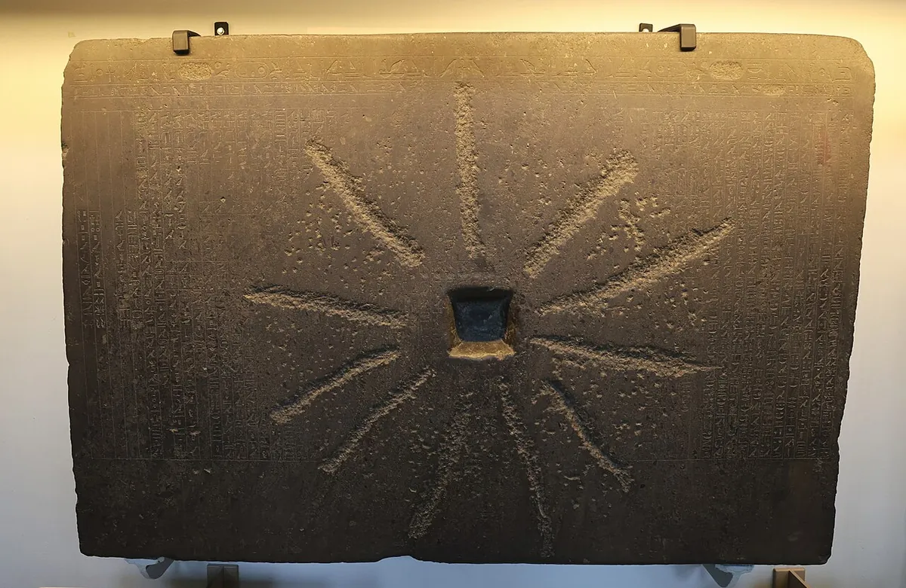
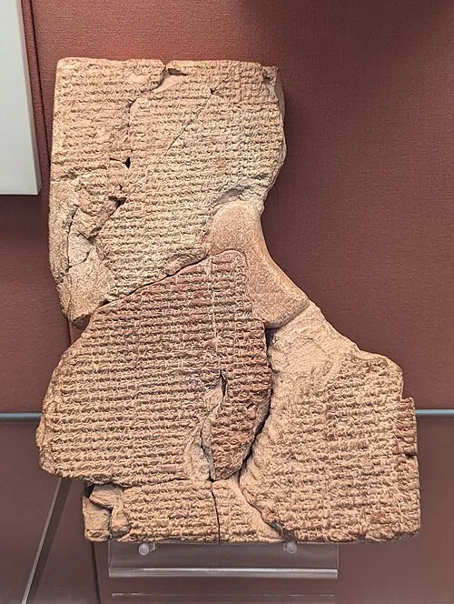
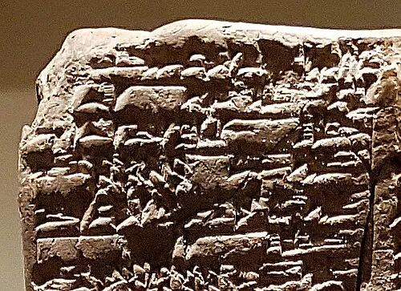
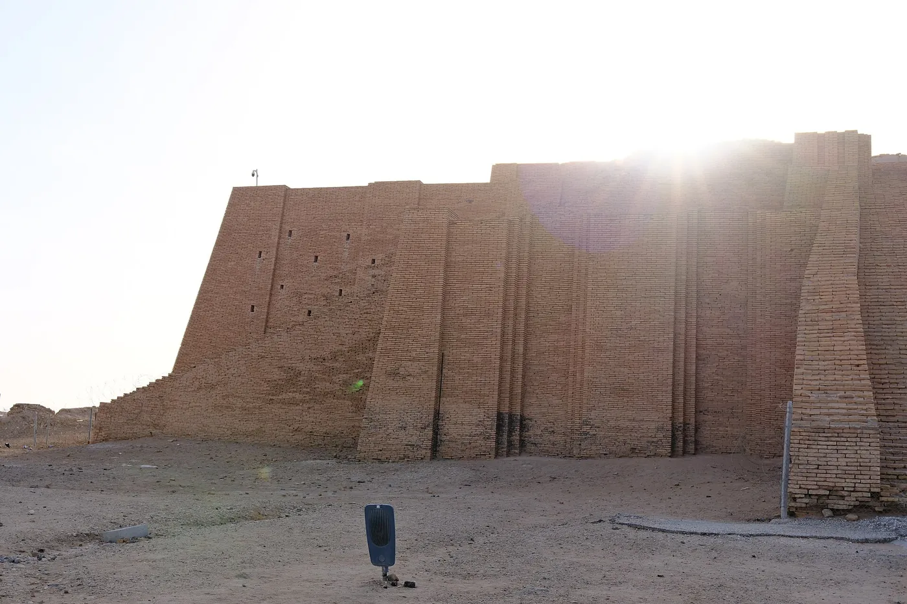
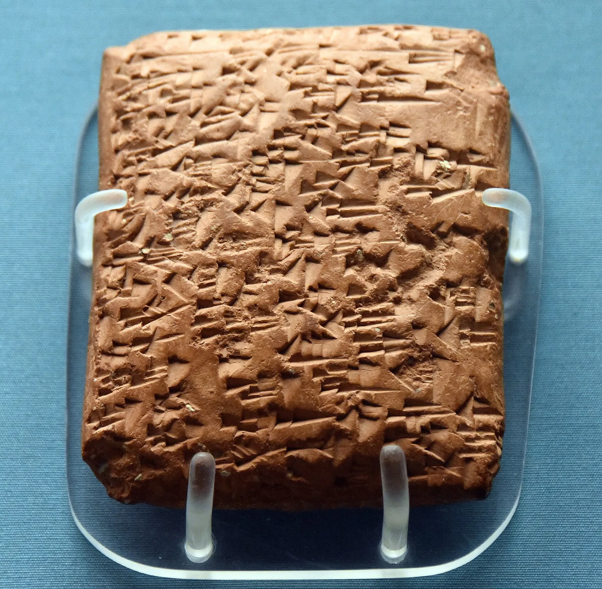
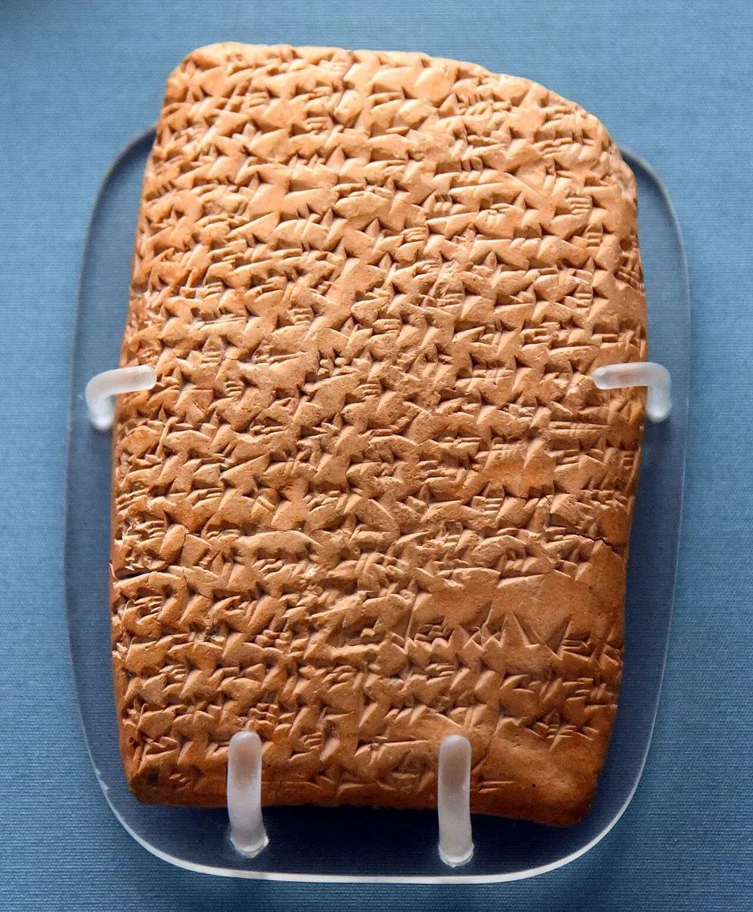
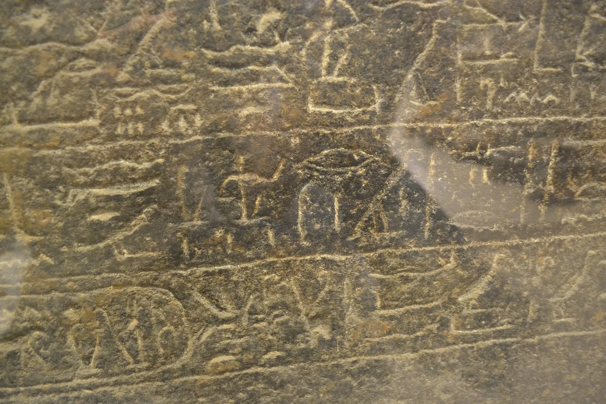
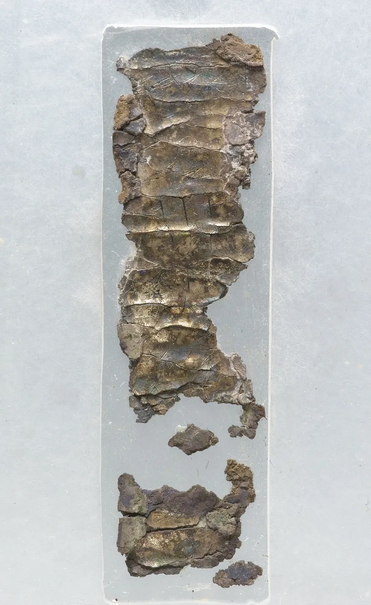
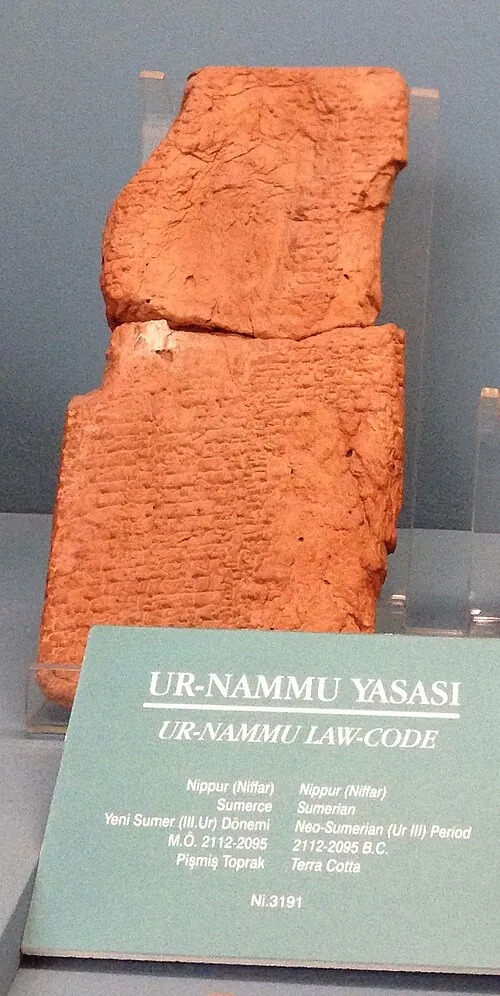

Two questions, one answer
Jews who believe the Torah and take it seriously run into two hard questions. Sooner or later, most of them hear both.
The first question comes from science. Ice sheets, tree rings, lake beds, starlight and rocks all show a world far older than 5,787 years. Nothing in the record shows a flood that covered the whole earth around 2105 BCE, the year the traditional count gives for the Mabul. These are measurements. They do not go away when someone dislikes them.
The second question comes from biblical critics. They say that editors stitched the Torah together from older documents long after Moshe. They also say that its opening chapters were written in Babylon in the sixth century BCE, by Jewish exiles who borrowed the myths of their captors.
This monograph answers both questions with one claim. The first eleven chapters of Bereishis are countermyth. A countermyth retells a story that everyone already knows in order to take it apart. The ancient world told stories about its own beginnings: how the world was made, why people die, why a flood came, and why nations speak different languages. Bereishis retells those stories and changes them. The gods are removed. The sea monsters become fish. The sun and moon become lamps. The flood comes because people were cruel, not because they were noisy. The Torah used the stories its listeners knew because, in a world with almost no books, stories were how people thought about the beginning of things. It changed every detail that mattered, and the changes carried the message.
Read this way, the science problem disappears. These chapters were never written as a report that a geologist could check. The critics’ case turns around too. The “sources” they find are answers aimed at different myths. Their favorite example, the flood, turns out to be one story that answers Gilgamesh point by point. Even the dating argument turns around. The myths that the Torah argues with are old. Almost all of them were composed before 1200 BCE. The pattern the Torah follows when it answers them had fallen out of use in Mesopotamia a few centuries later. A book that argues with those myths in that pattern belongs to the world that knew them.
That last point needs care. Nothing here proves that the Torah was given at Sinai in 1313 BCE, and history cannot prove it. What the evidence shows is that an Orthodox Jew can rely on the traditional dating without denying a single fact. It also shows that the countermyth reading is the only approach that allows this. The other approaches either deny measurements that anyone can check, or bend the Hebrew until it says something its first listeners would not recognize.
Three rules govern everything that follows. Every fact can be checked against the sources named. No fact is denied, however inconvenient it is. Where an argument is weaker than it sounds, the text says so. This is an argument for a side, written by believers in Torah from Hashem, and it stands on the facts.
How the argument runs
Part I shows why the usual answers to the science question fail. One of them is the claim that scientists are lying. Rav Avigdor Miller made that claim famous, and it turns out to have come from a Seventh-day Adventist. Part I also shows that Chazal never treated their aggados as science or history. A reader who sets aside a literal reading of Bereishis is following Chazal, not fighting them.
Part II explains what a myth is, why a society without books needed myths, and how a countermyth differs from a copy. Part III is the heart of the work. It walks through Bereishis 1–11 story by story, and often pasuk by pasuk, and sets each passage beside the tablets it answers. Part IV takes up dating: what the myths behind the Torah show about when it was written, and where that argument stops.
Parts V to VII follow the same method through the rest of Tanach. They include the laws of the Torah, which answer Hammurabi and the other ancient law collections the way Bereishis answers Gilgamesh. Part VIII throws out comparisons that do not hold up. Part IX answers the objections that traditional readers raise most often. An appendix lists the ancient myths that Tanach names outright, with their dates.
The argument on one page
Two questions, one reading, and what follows from it
Each box opens the part of the monograph that makes the case. Follow the lines from a question to its answer.
Parts V to VII carry the same reading through the Avos, Sinai, the laws, the prophets and Tehillim. Part IX answers the questions a traditional reader will ask.

Part I
The usual answers to science fail
The science is real. The claim that scientists are lying came from a Seventh-day Adventist. And Chazal never treated their own aggados as reports of history or science.
Siccar Point, Scotland. Photo: PawełS, CC BY-SA 4.0 · Wikimedia Commons

1.1The measurements are not going to change
Start with what scientists actually measure. Most arguments about Torah and science never get that far.


Ice. In Greenland, snow falls every winter and partly melts every summer. Each year leaves its own band in the ice, with its own dust, texture and chemistry. Scientists count those bands one at a time, the way you count the rings on a tree stump. Teams from Denmark, Switzerland and the United States have drilled cores more than three kilometers deep and counted about 60,000 yearly layers. They check the count against volcanoes whose dates are known. The acid from Iceland’s Laki eruption of 1783 sits in the layer counted as 1783. The acid from Tambora in Indonesia, the eruption that caused the “year without a summer,” sits in the layer counted as 1815.
Trees, lakes and stars. Tree rings tell the same story through a different process. Researchers have matched the ring patterns of living trees, old roof beams and logs preserved in bogs. Together they make an unbroken calendar of nearly 14,000 years. A lake in Japan called Suigetsu lays down a thin pale layer every spring and a dark one every fall, and its mud holds tens of thousands of years of them. Starlight is another clock. In 1987 a star exploded in a small galaxy near our own. Astronomers measured its distance with simple geometry, and its light had traveled about 168,000 years to reach us.
Writing. The flood question is even simpler, because it involves people who wrote things down. The traditional count places the Mabul in the year 1656 from creation, about 2105 BCE. In that century Egyptian scribes were writing tax records and tomb inscriptions. In southern Iraq the Third Dynasty of Ur had just come to power, and its scribes left tens of thousands of dated clay receipts for barley, sheep and wages. The kingdom and its record-keeping run straight through the date of the flood without a break.
The strength of this evidence is that the clocks are independent. Snowfall, tree growth, lake mud, starlight and the decay of uranium have nothing to do with one another, and yet they agree. One measurement can be wrong. A dozen unrelated measurements that keep landing on the same answer cannot all be wrong together by accident.
Four answers circulate in the frum world to make this problem go away. Each one fails, and seeing why it fails is the first step toward the answer that works.
Four records that run through the Mabul’s date
Every record keeps going through 2105 BCE
Greenland’s ice layers and the tree-ring calendars are counted one year at a time. Egypt and Mesopotamia left kings, buildings and written records. Drag the line to any year and see what each record shows.
Dynasty dates follow the conventional (“middle”) chronologies used in standard histories of Egypt and Mesopotamia. The alternatives that scholars debate shift these dates by a few decades, or at most about a century, and none of them opens a gap. Ice: the Greenland Ice Core Chronology 2005 (GICC05). Trees: the bristlecone pine chronology of California and the oak chronologies of Ireland and Germany.
1.2Answer one: the scientists are lying
The bluntest answer says that the evidence is fake. Its best-known Orthodox voice was Rav Avigdor Miller (1908–2001). His recorded shiurim and question-and-answer sessions still reach a very large audience. Asked in 1974 how fossils could be millions of years old, he answered that “fossils are not old; it’s only because evolutionists need great time periods.” In another answer he called evolution “the biggest fraud.” In 1988 he explained that layers of rock lying smoothly on one another must have been laid down one right after the other. He ended: “Not there were millions of years in between like the liars tell us.”
This answer falls apart as soon as one asks who does the measuring. The people who count ice layers, tree rings and lake layers come from dozens of countries and every religion. They spend their careers trying to catch one another’s mistakes, because that is how a scientist makes a name. Oil and mining companies lose real money when geology is wrong. They use the same layer-by-layer geology to decide where to drill, and they find oil where the geology says it will be. A plot to fool the world would need Danish ice scientists, Japanese lake researchers, German tree-ring counters and Texas oil geologists to work together. It would also need snowfall, tree growth and radioactive decay to agree with one another. That would be the greatest miracle in history.
The specific arguments fare no better. One says that fossils are used to date rocks and rocks are used to date fossils, so the whole system goes in a circle. That ignores how the order of the layers was found. An English canal surveyor named William Smith mapped the order of rock layers across England by 1815. In the same years, the French naturalist Georges Cuvier, who rejected evolution, worked out the order of fossils in the rocks around Paris. Both did this decades before Darwin published in 1859. The order of the rocks was known before anyone used it to argue for evolution. In the twentieth century, physicists dated layers of volcanic ash between the fossil beds by measuring radioactive decay, which has nothing to do with fossils. Their dates matched the order that Smith and Cuvier had found.
A second argument says that smooth contacts between layers prove that the layers piled up quickly. Many contacts are not smooth at all. In 1788 the Scottish geologist James Hutton found tilted, worn-down layers capped by flat ones at Siccar Point, and the Grand Canyon shows the same pattern on a giant scale. Where contacts are smooth, the layers usually formed underwater, where no wind or rain wears the surface. The layers also contain things that cannot form in a hurry. There are fossil soils with roots still in place, desert sand dunes with animal tracks, and thick beds of salt left by water that dried up again and again. There are chalk cliffs made of the shells of tiny sea creatures, and coral reefs still standing where they grew.
A third argument points to “modern” fossils. Rav Miller cited a human skeleton from Guadeloupe in the British Museum as a fossil only a few centuries old. The skeleton is set in beach rock, a kind of limestone that hardens along tropical shores within decades. Geologists do not date anything by whether bones look like stone. Nobody claims that beach rock is millions of years old, so a young skeleton inside it says nothing about the rocks of the Grand Canyon.
1.3Answer two: the world was created looking old
A gentler answer admits that the evidence is real. It says that Hashem created the world already mature, the way Adam was created as a grown man. The Christian naturalist Philip Henry Gosse argued this in 1857 in a book called Omphalos, Greek for “navel.” He asked whether Adam had a belly button. Many of Gosse’s fellow believers rejected the idea at once. The novelist and clergyman Charles Kingsley wrote that he could not believe God had written on the rocks “one enormous and superfluous lie.” In the Orthodox world, letters of the Lubavitcher Rebbe from the early 1960s suggested a version of this answer: that fossils might have been created as they are.
The answer has two problems. The first is what it says about Hashem. A world created looking old would hold records of events that never happened. It would have tree rings for summers that never were, and ice layers from snowstorms that never fell. It would have light arriving from a star that exploded in 1987, though on this view the star never existed. Chazal never describe Hashem planting false evidence in His world.
The second problem is that the answer does not reach the hardest questions. It might explain rocks that look older than 5,787 years, since the rocks could have been made that way at creation. It cannot explain the Mabul, which the traditional count places about 4,100 years ago, long after creation. A flood over the whole earth in 2105 BCE should have left a mark in the ice, in the lake mud and in the writing of every people alive. It left none. The answer also does nothing for the languages that split at Bavel, for the genetic variety of human beings after a family of eight, or for kangaroos that walked from Ararat to Australia without leaving a single bone along the way.
1.4Answer three: stretch the pesukim to match the textbook
A third answer was popular in kiruv in the 1980s and 1990s. It says that the Torah and modern science say the same thing once both are understood correctly. The physicist Gerald Schroeder argued that because of relativity, six days seen from the moment of creation equal billions of years seen from earth. Others read each “day” as an age, or read the Mabul as a local flood in Mesopotamia.
These readings fail the text before they fail the science. In Bereishis 1, fruit trees appear on day three, before the sun on day four. Birds appear on day five, before land animals on day six. In the fossil record, land animals came before birds, and the sun came before any tree. Whales, which the Torah’s taninim are often taken to include, came from animals that walked on land, so they cannot come a whole “day” before the land animals. No stretching of the word yom fixes the order. The local-flood reading has to explain away “all the high mountains under the entire heavens were covered” (Bereishis 7:19). It also never explains why Noach needed to save birds from a flood they could fly away from.
The deeper problem is that this method makes the Torah’s meaning depend on this decade’s science. When the science changes, the meaning has to change with it. Readers who watch someone force a modern idea onto an ancient verse usually conclude that no honest answer exists. In trying to protect the Torah, the method teaches people to distrust it.
1.5Answer four: Chazal took it literally, so we must
For many frum readers, this is the objection that matters most. Science can say what it wants, they reason, but Chazal read Bereishis as history, and Chazal decide what the Torah means.
The premise is wrong. Chazal did not treat their own aggados as reports of fact, and they said so in well-known places.
Creation is a mystery, not a chronicle. The Mishnah treats the account of creation as a closed subject. It is not taught in public, and not even to two students together (Chagigah 2:1). The Midrash adds that a person may not ask what came before creation (Bereishis Rabbah 1:10). That is how one handles a mystery. A news report is not handled that way.
A mashal can look like history. The Gemara records, without calling it heresy, the opinion that “Iyov never existed and was never created; he was a mashal” (Bava Basra 15a). When the Gemara asks what became of the dead whom Yechezkel saw rise in the valley, Rabbi Yehuda answers, “In truth, it was a mashal” (Sanhedrin 92b). When the Torah calls the cities of Canaan “fortified up to the heavens,” Rabbi Ami says outright that “the Torah spoke in exaggeration,” and that the prophets and the Sages did the same (Chullin 90b; Tamid 29a).
Gentile scholars sometimes knew more about nature. The Sages of Israel held that the sun passes behind the sky at night. The scholars of the nations held that it passes under the earth. Rebbi ruled that “their words seem more correct than ours” (Pesachim 94b). Rav and Shmuel disagreed about how Chava was formed, one saying from a face and the other from a tail (Eruvin 18a; Bereishis Rabbah 8:1). Neither claimed to have the answer from Sinai. Each was offering his own reading.
An old world was a Jewish idea. The Midrash teaches that Hashem “built worlds and destroyed them” before ours (Bereishis Rabbah 3:7). The Gemara speaks of 974 generations that were meant to come before the world as we know it (Chagigah 13b–14a; Shabbos 88b). In 1842 Rabbi Yisrael Lipschitz, author of the classic Mishnah commentary Tiferes Yisrael, used these same sources to explain the bones of mammoths and other giant animals being dug up in his day. He saw no threat to emunah in a very old earth.
The Geonim and Rishonim stated the rule. Rav Sherira Gaon wrote that teachings drawn from verses by midrash and aggadah are “conjecture,” and that “we do not rely on the words of aggadah.” His son Rav Hai Gaon wrote that aggados do not have the standing of received tradition. The Yerushalmi had already ruled that halacha is not learned from aggados (Peah 2:4). The Rambam, in his introduction to the tenth chapter of Sanhedrin, described readers who take every midrash literally, and said that they harm the honor of the Torah. In the Moreh Nevuchim he wrote that the creation account is not all meant literally (II:29). He also wrote that Chazal’s astronomy came from the science of their time, not from prophecy (III:14). His son, Rabbeinu Avraham, wrote that no one has to defend the Sages’ statements about medicine, natural science and astronomy just because the Sages were great in Torah. The Ramban, defending Judaism at the Barcelona disputation of 1263, said of midrash that one who believes it does well, and one who does not believe it does no harm.
None of these authorities read Bereishis 1–11 as countermyth. They could not have, because the tablets that make the comparison possible were still buried. Many Rishonim, the Ramban among them, took the long lifespans of Bereishis 5 literally. The point here is narrower. Chazal and the Rishonim left this door open on purpose. A reader who sets aside a literal reading of the opening chapters is walking through a door they opened. Nothing in halacha changes either. The count of years from creation is a convention fixed by Seder Olam, and contracts, Shemittah and the Jewish calendar keep using it as before.
How a young earth became “Torah-true”
The young-earth arguments in Orthodox books came from an Adventist teacher
Three tracks over two centuries: what geologists found, what Protestant creationists wrote, and what Orthodox writers taught. The gold lines follow George McCready Price’s arguments into Orthodox books. Select any point for the details.
Sources for each point are given in the sidebars of Part I and in the bibliography. Lapis marks Orthodox writers who accepted an old world; clay marks those who taught a young one.
1.6What a literal reading commits you to
All four answers try to keep Bereishis 1–11 as a literal record of events. It helps to picture that record if it were literally true, in full, with nothing explained away. Snakes would talk. People would live nine hundred years and father children at five hundred. According to Pirkei d’Rabbi Eliezer, until Yaakov nobody got sick before dying: a man would sneeze, and his soul would leave through his nose. On the most literal reading there were no rainbows before the year 1656, a reading the Ramban already rejected (on Bereishis 9:12). Giants would be born to divine fathers. Every kangaroo alive today would descend from a pair that hopped from Turkey to Australia. The Ark Encounter in Kentucky, built by Answers in Genesis, shows dinosaurs in pens on Noach’s ark, because on its reading they had to be there.
The countermyth reading describes a different world. It is the real world, where ordinary people with no books worked hard to make sense of where everything came from. They passed what they knew to their grandchildren in the only form that would last: a story. The film below sets the two worlds side by side.
A short film in eight scenes
Two universes: Bereishis 1–11 as a news report, and as countermyth
On the left, the world as it would have to be if every detail of the opening chapters were a literal report. On the right, the real world in which those chapters were first heard. Press play, or pick a scene.
1.7The second question: the critics’ case
Readers who are less troubled by science are often more troubled by the second question. In 1878 the German scholar Julius Wellhausen gave its classic form to what is called the Documentary Hypothesis. On this view, the Torah was woven together from four earlier documents, labeled J, E, D and P. J and E are named for the divine names they prefer, YHVH and Elohim. D stands for Devarim. P stands for a Priestly writer who, on this theory, composed much of Vayikra and Bamidbar during or after the Babylonian exile.
The evidence offered is familiar to anyone who has learned Chumash closely. Bereishis 1 and Bereishis 2 tell creation in different orders. The flood seems to be told twice. In one place Noach takes two of every animal, and in another seven pairs of the clean animals. There are forty days of rain and also a hundred and fifty days of rising water. And the names of Hashem change from passage to passage.
Orthodox scholars have answered Wellhausen for more than a century. Rabbi David Zvi Hoffmann showed in 1904 that Devarim assumes the Priestly laws already exist, instead of coming before them. Umberto Cassuto showed that the change between Elokim and Hashem follows the meaning of each passage, not the hand of a different writer. Rabbi Mordechai Breuer argued that the Torah speaks in deliberate parallel voices. Rabbi Joshua Berman has shown that ancient Near Eastern texts often combine viewpoints that look contradictory to a modern reader.
The countermyth reading adds a sharper answer. The two creation accounts read differently because each one answers a different set of myths, and each takes the order and shape of the story it overturns. The two flood “sources” are not two stories at all. Only together do they follow Gilgamesh step by step, which means that one author was answering one story. Part III shows this in detail. The critics also date the opening chapters to the Babylonian exile. Part IV shows that the myths these chapters answer, and the way they answer them, belong to the second millennium BCE.
A word about scholars belongs here. Academic scholars found much of the comparative evidence in this work, and their finds are used gladly. Their conclusions are another matter. Many of them treat the Documentary Hypothesis as settled before they begin, and that assumption shapes how they read the evidence. A scholar who must split the flood into two documents has to argue that two separate authors each answered Gilgamesh with half a story. When a scholar’s theory forces a strained reading, the evidence deserves more weight than the theory.

Part II
How myth works
What a myth is, how it carries truth, why a world without books needed it, and how a countermyth differs from a copy.
Crater Lake, Oregon. Photo: King of Hearts, CC BY-SA 4.0 · Wikimedia Commons

2.1A myth is a kind of story, and the word is no insult
In everyday English, “myth” means something false. Scholars use the word differently. To them, a myth is a story set at the beginning of things that explains why the world is the way it is. It tells why people die, why farming is hard, why the sea has a shore, why nations speak different languages, and why a rainbow appears after rain. A myth carries a people’s deepest beliefs about God, the world and themselves. It carries them in pictures that stick in the mind: a garden, a snake, a boat, a tower. To call Bereishis 1–11 countermyth is not to call it false. It names the kind of writing these chapters are, so that a reader can ask them the right questions.
Real events often lie underneath. Myths are not made from nothing. A real event is often reshaped until it carries a meaning. The Klamath people of Oregon told of a battle between Llao, chief of the world below, and Skell, chief of the sky. The battle ended when Llao’s mountain collapsed and a deep lake filled the hole. Geologists later found that a volcano called Mount Mazama erupted and collapsed about 7,700 years ago, forming Crater Lake. The Klamath remembered a real eruption for some three hundred generations by telling it as a war of spirits. Along the coasts of Australia, the geographer Patrick Nunn and the linguist Nicholas Reid collected Aboriginal stories from more than twenty places that describe land now under the sea. The details match the rise of the oceans after the last ice age, more than seven thousand years ago. On the Columbia River, Native peoples told of a great stone “Bridge of the Gods” that fell when two mountain brothers fought. Geologists have found that a landslide dammed the river there around the fifteenth century.
The Greeks did the same. Homer’s Troy was a real city. Its ruins stand in northwest Turkey, with a layer of destruction from about 1180 BCE, and Hittite letters mention a western kingdom called Wilusa, the name that Greeks remembered as Ilios. By the time the Iliad was sung, the war had gods who took sides, a hero whose mother was a sea goddess, and a cause, the stolen queen Helen, that no historian can confirm. A myth keeps a kernel of memory and wraps it in meaning.
2.2A world without books: why the Torah spoke in story
People raised with printed books and search engines naturally assume that ancient people would have wanted plain facts. Almost nobody in the Bronze Age lived in that kind of world. The Egyptologist John Baines estimated that about one percent of ancient Egyptians could read, mostly palace clerks and temple priests. Reading reached a little further among Babylonian merchants and officials. But the farmers, shepherds, weavers and village elders of the Near East lived in a culture that was almost entirely spoken. There were no books on the shelf. Nearly everything a person knew about God, history and the world came by ear.
In a spoken culture, bare facts fall apart fast. A list of dates or measurements becomes garbled within a generation or two. What lasts is a story with vivid pictures and high stakes, a story people want to tell their children. Elizabeth Wayland Barber and Paul Barber showed this in When They Severed Earth from Sky. Peoples without writing pack lasting truths into such stories. The surface details shift as each teller adapts them, while the core survives for thousands of years.
This explains why the Torah could not have opened with a different kind of writing. Imagine Bereishis 1 written as a geology textbook, with deep time, moving continents and the birth of stars. Nobody at Sinai could have understood it or remembered it, and it would have answered questions nobody was asking. The questions people were asking were the ones their myths answered. Who made the world? Are the sun and the sea gods? Why do we die? Why did the flood come? Does heaven belong to Babylon? The Torah answered those questions in the only form that would last, a story. It chose the stories everyone already knew, so that every change would be heard.
2.3Why a countermyth is not a copy
Readers who first meet the Babylonian flood tablets often assume that any shared detail proves copying. Borrowing and answering are different, and the difference can be tested. A borrower takes a neighbor’s story because he has none of his own, and the story keeps its old beliefs. A polemicist, someone who argues against a view, takes a story because everyone knows it, and changes the parts that carry the meaning. Three tests show which is happening.
The outline stays and the God changes. In a copy, the gods behave more or less as they did in the original. In Bereishis 1–11 the outline follows the region’s stories. There are first waters, a sky set over the sea, a garden with a snake, a flood survived in a boat sealed with pitch, and a brick tower in Babylon. Yet every motive of the divine character is different. Babylonian gods quarrel, panic, go hungry, and drown humanity because it is too noisy. Hashem acts alone and judges people for how they treat one another.
Names are avoided and powers are lowered. Israel’s neighbors worshiped the sun and moon as Shamash and Yarikh. Those names sound almost the same as the Hebrew words shemesh and yareach. Bereishis 1 avoids both words and calls them “the greater light” and “the lesser light.” The taninim, the sea dragons that Baal fought in Canaanite poetry, appear in Bereishis 1:21 as ordinary sea creatures that Hashem created and blessed.
Dignity moves from gods and kings to every person. In Babylonian epics, the gods made human beings from clay and a slain god’s blood so that people would dig canals and feed the gods. In Egypt and Mesopotamia, only the king or a temple statue was called the image of a god. Bereishis gives that title to every man and woman, and Hashem feeds humanity instead of the other way around.
When all three tests are met, the shared pictures are evidence of an argument, not of a copy. In Part III, each comparison carries a label that shows how strong it is. Tablet match means that a specific ancient text shares wording or a sequence of events with the passage. Strong means a well-documented theme that the passage reverses in so many words. Probable means a widespread theme with good but less direct evidence. Suggested marks connections proposed here for the first time, or drawn from a minority view, for readers to weigh.
2.4Tanach already answers its neighbors’ stories in the open
The countermyth method is not a modern idea forced onto Tanach. Tanach uses it openly, in places where nobody disputes what is happening.
Eliyahu on Har HaCarmel. This is the clearest example (Melachim I 18). Baal was the Canaanite storm god, and his worshipers believed that he sent rain and threw lightning. Achav’s kingdom had gone three years without rain when Eliyahu challenged the prophets of Baal on Baal’s own ground. The god who answered with fire from the sky would be God. Baal’s prophets shouted from morning until afternoon, and Eliyahu mocked them: perhaps their god was asleep, or away on a trip. Then fire fell for Eliyahu, and rain followed. The whole scene strips Baal of his two signature powers and hands them to Hashem.
The prophets borrow a pagan poem’s words. Yeshayahu promises that Hashem will punish Livyasan, “the fleeing serpent, … the twisting serpent” (Yeshayahu 27:1). Clay tablets from Ugarit, a Canaanite port on the Syrian coast destroyed around 1185 BCE, tell how Baal struck a sea monster named Litan. They describe it with the same two titles in the same order. Yeshayahu kept the monster and replaced the god who defeats it. Elsewhere he joins the old sea battle to Israel’s own history: “Was it not You who hacked Rahav apart, who pierced the dragon? Was it not You who dried up the sea, the waters of the great deep, who made the depths of the sea a road for the redeemed to cross?” (Yeshayahu 51:9–10). The myth of a god who conquers the sea has become the splitting of the Yam Suf.
Tanach answers its own earlier stories. Judy Klitsner’s Subversive Sequels in the Bible sets Yonah beside Noach. Noach hears that the world will be destroyed, builds a boat, and says nothing. Yonah hears that Nineveh will be overturned, boards a boat to run away, and then watches teshuvah save the city. A reader who knows Noach hears the reversal in Yonah. The claim about Bereishis 1–11 is simply that those chapters use the same method without naming their targets, because the people at Sinai already knew them.
2.5Jewish readers already read Tanach by its kind
Every traditional reader already sorts the passages of Tanach by the kind of writing they are. In Shoftim 9, Yosam stands on Har Gerizim and tells how the trees went looking for a king. The olive tree, the fig tree and the vine each make a speech. Nobody asks where these trees grew or what language they spoke, because the form shows that it is a mashal. When Tehillim says that the mountains skipped like rams as Israel left Mitzrayim (114:4), no one checks it against the geology of Sinai.
Halacha uses the same discipline. The Torah writes “an eye for an eye,” and Chazal rule that the verse requires a payment of money for the value of the eye (Bava Kamma 83b–84a). As Rabbi Mark Glass has noted, readers accept a non-literal reading of a law without hesitation. Yet they grow uneasy when the same question about kind is asked of a story. The Rambam put the principle most sharply. If the eternity of the universe had been proven, he wrote, he would have interpreted the creation verses to fit the proof, just as he already interprets the verses that describe Hashem with a hand or an eye (Moreh Nevuchim II:25). Asking what kind of writing a parsha is has always been part of learning Torah.
2.6The early chapters tell the strange as if it were ordinary
The Torah itself marks where its opening chapters end. The way a narrator treats the impossible tells the reader what kind of world a story is set in. In Bereishis 1–11, things that never happen in ordinary life are part of the scenery, and the narrator passes over them without comment. From Avraham on, the opposite is true. A miracle is an event. The narrator announces it, names Hashem as its cause, and shows people reacting with astonishment.
| What Happens | Source | How the Narrator Tells It |
|---|---|---|
| A snake speaks to Chava | Bereishis 3:1–5 | No miracle is announced, and Chava answers the snake as she would answer any person. |
| Trees confer life and knowledge | Bereishis 2:9; 3:22 | Both trees are introduced as ordinary fixtures of the garden. |
| Men live 900 years and father sons at 500 | Bereishis 5 | The lifespans sit in a repeating ledger with no comment or amazement. |
| Sons of the gods marry human women; Nefilim appear | Bereishis 6:1–4 | Told in four brief verses with the casual aside “and also afterward.” |
| The entire earth speaks one language | Bereishis 11:1 | Stated flatly as the opening condition of the tower episode. |
| A man of 100 and a woman of 90 have a son | Bereishis 17:17; 18:12–14 | Both Avraham and Sarah laugh, and Hashem asks whether anything is too wondrous for Him. |
| A bush burns without being consumed | Shemos 3:2–3 | Moshe turns aside specifically to inspect “this great sight.” |
| The makkos strike Egypt | Shemos 7–11 | Each plague is announced beforehand; Egyptian magicians fail to match them; hail and locusts are called unmatched. |
| The earth opens and swallows Korach | Bamidbar 16:28–30 | Moshe calls it a “new creation” meant to prove who sent him. |
| A donkey speaks to Bilaam | Bamidbar 22:28 | The narrator explicitly states beforehand that “Hashem opened the mouth of the donkey.” |
| The sun stands still at Givon | Yehoshua 10:12–14 | The text declares that “there was no day like it before or after.” |
The snake and the donkey. The talking snake and Bilaam’s donkey show the contrast. The snake speaks in the Torah’s first conversation, and the text notes only that it was the shrewdest animal of the field. Before Bilaam’s donkey speaks, the verse first tells the reader that “Hashem opened the mouth of the donkey” (Bamidbar 22:28). Chazal drew the same line. The Mishnah lists ten things created at twilight before the first Shabbos. The list includes the mouth of Bilaam’s donkey, the mouth of the earth that swallowed Korach, and the manna (Avos 5:6). The snake’s speech is not on the list. Second Temple Jewish writers, including the Book of Jubilees (3:28) and Josephus (Antiquities 1.1.4), treated animal speech as the normal state of the world before the expulsion from Eden. A talking donkey in Moshe’s time, by contrast, was a miracle.
The lifespans. Bereishis 5 records men fathering sons at 187 and at 500. Shem fathers Arpachshad at 100 and lives five more centuries (11:10–11). Six chapters later, Avraham hears that he will have a son at 100, and he falls on his face laughing (17:17). By chapter 17, the story follows the same laws of nature as the reader’s own world.
The pattern has limits, and they should be stated. Giants appear later without fanfare: the Emim, the Anakim, and Og with his iron bed nine amos long (Devarim 2–3). Ancient historians like Herodotus sometimes report marvels flatly too. Even so, the border at Bereishis 12 can be seen in the Hebrew text before a single tablet is consulted. As Part III shows, the tablets point to the same border.
Before Bereishis 12 the strange is ordinary; after it, every wonder is announced
Each point is an extraordinary event. Before Avraham, the narrator passes over them without comment. From Bereishis 12 on, every break with nature is announced, credited to Hashem and met with surprise. Select a point.
2.7The stories do not fit together as one chronicle
Bereishis 1–11 does not read like one continuous news report, and it never tries to. Kayin fears that “whoever finds me will kill me,” and then builds a city, though the text has named only four people in the world. His descendants Yaval, Yuval and Tuval-Kayin found the professions of herding, music and metalworking (4:20–22), professions that exist in the reader’s own world. Yet the whole line of Kayin dies in the Mabul. Bereishis 10 lists nations “each with its own language,” and Bereishis 11 opens by saying that the whole earth had one language. Chapter 1 creates plants, animals, and then man and woman together. Chapter 2 creates man, then a garden, then animals, then woman.
The Torah places these accounts side by side and never stops to reconcile them. No verse says, “Now let us go back and fill in the details.” An author writing a single chronicle would have smoothed over these seams. An author answering several different stories would leave each answer in the shape of the story it answers. Later readers did work hard to harmonize them. The effort runs from the Book of Jubilees to one of Rabbi Eliezer’s thirty-two rules of interpretation, that a general statement may be followed by its details, which Rashi applies to the two creation accounts (on 1:27). The harmonizing came afterward. The text itself was content to leave the accounts next to each other.
Even the numbers behave like design more than record. Ten generations run from Adam to Noach and ten from Noach to Avraham, a symmetry that the Mishnah itself points out (Avos 5:2). The three ancient versions of Bereishis 5 are the Masoretic text, the Samaritan Torah and the Greek Septuagint. They differ from one another in the fathers’ ages by round hundreds, which gives three different years for the flood: 1656, 1307 and 2242 from creation. Halacha follows the Masoretic text. The differences show that ancient scribes, far closer to the Torah’s world than any modern reader, treated these numbers as a pattern they could adjust, not as a birth register.
Three ancient texts of Bereishis 5 put the flood in three different years
The Masoretic text, the Samaritan Torah and the Greek Septuagint differ by round hundreds in the fathers’ ages. The flood moves across a span of 935 years, and in one version Mesushelach outlives it.
2.8Chazal knew the old myths and used them
Chazal did not have the tablets, but pieces of the old myths reached them, and they handled those pieces the way the Torah did. The Gemara records that when Hashem created the world, He told the Prince of the Sea to open his mouth and swallow the waters. The Prince refused, and Hashem struck him dead. The Gemara even gives the Prince a name, Rahav (Bava Basra 74b). This is the ancient battle between a god and the sea, kept alive in the beis medrash more than a thousand years after Ugarit fell. The same page tells that Hashem killed the female Livyasan and salted her for the righteous in the world to come, and that the sea monsters had to be kept from breeding, or they would destroy the world. Chazal explained the divine name Shakai as “the One who said to His world, ‘Enough’ (dai),” when the world kept spreading (Chagigah 12a). They described Adam as reaching from the earth to the sky before his sin (Chagigah 12a).
Nobody in the beis medrash treated these teachings as zoology or astronomy. They were lessons about Hashem’s mastery over chaos and humanity’s fall from greatness, told in the language of myth that still carried weight in Chazal’s world. Part VII shows how Chazal answered Greek philosophy, Roman festivals and Persian dualism in the same way, retelling a rival story so that its meaning ran the other way. The countermyth method did not end with the Torah. Chazal practiced it, and they expected their students to recognize it.
The archives that hold the stories Tanach answers
Where excavators found the tablets and inscriptions discussed in this monograph, from southern Mesopotamia through Syria and Canaan to Egypt. Select a site or a region.

Part III
Bereishis 1–11, story by story
Each passage beside the stories it answers, from the first pasuk to the tower of Bavel, with the strength of every comparison marked.
The Babylonian Map of the World, British Museum. Photo: Osama Shukir Muhammed Amin FRCP(Glasg), CC BY-SA 4.0 · Wikimedia Commons

3.1The stories on the other side of the argument
A handful of ancient texts come up again and again in this part, so it helps to meet them first.
Atrahasis is a Babylonian epic about the creation of humanity and a great flood. Its best copy was written about 1635 BCE, and the story is older. The Epic of Gilgamesh tells of a king who searches for eternal life and meets the survivor of the flood. Its oldest versions date to about 1800 BCE, and a fragment from the fourteenth century BCE was found at Megiddo in the Land of Israel. The flood tablet that made it famous was copied in Nineveh in the seventh century BCE from an older edition. Enuma Elish is the Babylonian creation epic, in which the god Marduk kills the sea goddess Tiamat and builds the world from her body. Most scholars date it to about 1100 BCE, though some argue it is older. The Baal Cycle from Ugarit, written down around 1250 BCE, tells how the Canaanite storm god defeated the Sea and the dragon and was given a palace. Adapa, a Babylonian story about a wise man who loses his chance at eternal life, survives in a copy found in Egypt from the fourteenth century BCE. The Sumerian King List, copied around 1800 BCE, lists kings who ruled for tens of thousands of years before the flood.
Egyptian texts matter too, because Moshe’s generation came out of Egypt. They include hymns to the sun god, the creation teachings of the temple cities of Heliopolis and Hermopolis, and the Book of the Heavenly Cow, painted in royal tombs from about 1320 BCE, in which the sun god nearly destroys humanity. Each comparison below carries one of the four labels from Part II: Tablet match, Strong, Probable or Suggested.
3.21:1–2 · A beginning with no birth of gods


“In the beginning.” Strong Ancient creation stories open with a clause that begins “when.” Enuma Elish starts “When in the height heaven was not named,” in L. W. King’s classic translation. The first line of Atrahasis is usually rendered “When the gods were man.” Rashi reads the Torah’s first words the same way: “In the beginning of Hashem’s creating the heavens and the earth, when the earth was formless and void….” The opening is familiar. What comes next is not. In Enuma Elish, the fresh waters, Apsu, mingle with the salt sea, Tiamat, and the gods are born. In the Hurrian and Hittite Song of Kumarbi, known from tablets of the fourteenth and thirteenth centuries BCE, each generation of gods overthrows the one before it. Bereishis has no birth of gods, no older generation and no rebellion. Hashem is already there, and the first verb of the Torah is His: bara, He created.
“Formless and void, darkness over the deep, and the wind of Elokim hovering over the waters.” Probable Egyptian priests at Hermopolis taught that before creation there were eight gods in four pairs. Nun and Naunet were the first waters. Heh and Hauhet were endlessness. Kek and Kauket were darkness. Amun and Amaunet, “the hidden ones,” were linked with air and wind. Bereishis 1:2 names the same four things: formlessness, darkness, deep water and wind. Here, though, they are raw material lying still, waiting for a word. Nothing in the verse is alive except the ruach of Elokim. A listener raised in Egypt would have heard the old gods of chaos turned into a list of empty conditions.
The deep, tehom. For a century, commentators claimed that tehom was borrowed from Tiamat, the sea goddess of Enuma Elish. The linguist David Tsumura showed that it was not. Both words come from a common Semitic word for the deep sea, and tehom is ordinary Hebrew. What matters is what does not happen. In Babylon, Marduk must kill the deep before he can build. In Bereishis, the deep lies still under the darkness and never fights.
3.31:3–5 · Light by a word, before the sun
“Elokim said, ‘Let there be light.’” Strong Creation by speech was an Egyptian idea long before Moshe. Egyptian texts from the Old Kingdom, before 2100 BCE, already name Hu, the divine word of command, as a power the creator used. The Shabaka Stone in the British Museum preserves a teaching in which the god Ptah planned everything in his heart and brought it into being with his tongue. The stone itself was carved around 710 BCE, and specialists argue about whether its text is much older. So it shows only that the idea was known in Egypt, and it cannot date anything. Bereishis keeps the creative word, but its speaker has no temple, no home city and no rival gods.
Light comes before the sun. Strong In every Egyptian creation story, the first light is the sun god himself, rising out of the first waters onto the first mound of earth. Light and life come from the sun because the sun is a god. Bereishis creates light on the first day and the sun only on the fourth. The sun is neither the source of light nor the source of life. It is a lamp hung in the sky three days after the light it carries. Chazal noticed how strange this order is. They taught that the light of the first day was a special light, hidden away for the righteous (Chagigah 12a).
“There was evening and there was morning.” Strong Egyptian books painted in the royal tombs of the New Kingdom, such as the Amduat, describe the sun god sailing through the underworld every night. There he fights the chaos serpent Apep so that he can rise again, and each dawn is a victory in a war. In Bereishis, evening and morning follow one another because Hashem divided light from darkness.


3.41:6–19 · The sky, the seas, the land and the lamps
The rakia that separates waters from waters. Tablet match In Enuma Elish, Marduk splits Tiamat’s body in two, like a fish split for drying. He raises half of it as the sky and posts guards so that her waters cannot escape. Bereishis 1:6–8 uses the same picture of the world: a solid dome holding back water above, with water below. The whole region shared this picture, and the Torah uses it, because the Torah spoke to its listeners in the picture of the world they had. What the Torah removes is the corpse. There is no dead goddess in the sky, only a dome that Hashem made by saying so. The war behind the Babylonian scene is older than Enuma Elish. A letter from the city of Mari, written about 1770 BCE, quotes the storm god of Aleppo reminding King Zimri-Lim that he gave him the weapons with which he fought the Sea.
“Let the waters gather and let dry land appear.” Strong In Egyptian teaching, creation began when the first mound of earth rose out of the waters, and the creator god stood on it. Temples were built as copies of that holy mound. In Bereishis the land appears because the water obeys an order. Hashem then names the gathered waters yamim, “seas.” Suggested At Ugarit, Yam, “Sea,” was a god, the great enemy of Baal. Here he is a common noun, in the plural, and he gets his name from Hashem. In the ancient world, naming something meant having authority over it. That is why Enuma Elish opens with a time before the heaven was named. In Bereishis, Hashem names day, night, sky, land and seas.
Plants on the third day. Probable Across the region, people believed that the crops depended on gods who died and came back to life. At Ugarit, the earth dried up while Baal was dead and bloomed again when he revived. In Egypt, Osiris was the god in the grain. Mourners planted barley in beds shaped like Osiris so that it would sprout from his body. Bereishis has the earth bring out plants at Hashem’s word, each “according to its kind,” on a day when there is not yet a sun, a rain god or a dead god anywhere.
The greater light and the lesser light. Tablet match The fifth tablet of Enuma Elish describes Marduk setting up the stars as stations for the great gods, fixing the year and its months, and giving the moon a crown to mark the days. Bereishis 1:14 gives the lights the same jobs: “for signs and for seasons, and for days and years.” But the Torah avoids the words shemesh and yareach, which were the names of the sun god and the moon god among Israel’s neighbors. It calls them only “the greater light” and “the lesser light.” Babylonian diviners read the stars to learn the fate of kings. The Torah gives the stars two words at the end of a sentence: ve’es hakochavim, “and the stars.” Yirmiyahu later spells out the lesson: “Do not be frightened by the signs of the heavens, though the nations are frightened by them” (10:2). Michael Fishbane pointed out that Devarim 4:16–19 forbids making images of people, animals, birds, creeping things, fish and heavenly bodies, and lists them in the reverse order of Bereishis 1. The things that Bereishis 1 says Hashem made are the same things that Devarim forbids Israel to worship.
3.51:20–23 · The dragons become fish
“Elokim created the great taninim.” Tablet match In the Ugaritic tablets, Baal and his sister Anat boast of defeating Yam, the Sea, and his monstrous allies. One of them is a dragon called tunnanu, the same word as the Hebrew tanin. Israel’s poets knew this language well. Tehillim praises Hashem who “smashed the heads of the taninim on the waters” and “crushed the heads of Livyasan” (74:13–14). Bereishis 1:21 uses the verb bara, which the chapter saves for just three moments: the first verse, these sea creatures and humanity. The Torah stops to say that Hashem created the dragons, and then that He blessed them. The most feared monsters of Canaanite religion become animals in the sea, made on the fifth day with the fish. Tehillim 104:26 goes further and says that Hashem made Livyasan to play in the sea.
3.61:24–31 · People made to rule, not to serve the gods
Why people exist. Tablet match Babylonian literature gave a blunt answer. In Atrahasis, the junior gods dig the Tigris and the Euphrates by hand until they burn their tools and surround the house of Enlil, their chief, at night. The council of the gods ends the strike by killing a god named We-ila. They mix his flesh and blood with clay to make human beings, who will carry the gods’ load from then on. Enuma Elish repeats the idea with the blood of the rebel god Kingu, so that the gods can rest and be fed. In Bereishis, human beings come last, into a world already stocked for them, and Hashem gives them food: “I have given you every plant that bears seed … it shall be yours for food” (1:29). In the Babylonian stories, people exist to feed the gods. In Bereishis, Hashem feeds the people He made.
“Let us make man.” Probable In Atrahasis, the making of humans is a decision of the assembly of the gods, debated and voted on. Bereishis keeps a plural, “let us make,” but there is no assembly, no debate and no slain god. Rashi explains the plural as Hashem’s humility in consulting His court of angels. He adds that the next verse goes back to the singular, “and He created,” so that no one could think there were other creators.
“In the image of Elokim.” Strong In Egypt and Mesopotamia, the living image of a god was a temple statue or the king. The name Tutankhamun means “living image of Amun.” A statue of a local ruler from the ninth century BCE, found in 1979 at Tell Fekheriye in Syria, calls itself his tzelem and his demus, the same two words as “in our image, after our likeness.” For a king, an image was the statue he set up to stand for him. Bereishis gives that standing to every human being, male and female. In fairness, the idea was not entirely new. An Egyptian wisdom text from about 2000 BCE, the Instruction for Merikare, calls people the god’s cattle and his images, and says he made heaven and earth for their sake. What Bereishis does with the idea was new. It makes the image the foundation of law: “Whoever sheds the blood of man, by man shall his blood be shed, for in the image of Elokim He made man” (9:6). The Mishnah draws the conclusion. Every person is a whole world, and no one may say “my father is greater than yours” (Sanhedrin 4:5).
“Be fruitful and multiply.” Tablet match Atrahasis ends with the gods limiting human numbers forever. They send barren women, a demon who snatches babies from their mothers’ laps, and classes of priestesses forbidden to bear children. Bereishis begins with a blessing to fill the earth and repeats it after the flood (9:1). The flood story below comes back to this reversal, where it is sharpest.
3.72:1–3 · Shabbos instead of a temple
The shape of the week. Strong The six days fall into two matching columns. Days one to three make three realms by separating them: light from darkness, the waters above from the waters below, and the sea from the land. Days four to six fill those same realms in the same order: lights for the day and night, fish and birds for the sea and sky, animals and people for the land. The seventh day stands outside both columns.
Ancient listeners knew the pattern of a seven-day building story that ends with a god at rest. Gudea, ruler of the Sumerian city of Lagash around 2125 BCE, dedicated a temple to his god with a seven-day celebration. In the Baal Cycle, a fire burns in Baal’s new palace for six days. On the seventh the palace is finished, and Baal holds a feast. In Enuma Elish, after Marduk orders the world, the gods build his temple Esagila in Babylon and rest there.
Bereishis keeps the seven-day pattern and moves the holiness from a building into time. No palace is built in any city. The seventh day itself is blessed and made holy, and every household can enter it. The Torah ties creation to the Mishkan with matching words. The heavens and earth are “finished” (vayechulu, 2:1), as the work of the Mishkan is “finished” (vateichel, Shemos 39:32). Hashem sees all that He made (1:31), as Moshe sees all the work (39:43). Both end with a blessing. The world is Hashem’s great sanctuary, and the Mishkan is a model of it.
Who rests, and why. Tablet match In Atrahasis, human beings are created so that the gods can rest. Human labor buys the gods their leisure. In Bereishis, Hashem works and then rests Himself. Later He commands that the servant, the stranger, and even the ox and the donkey rest as well (Shemos 20:10; 23:12). The Babylonian story uses people so that the gods can stop working. The Torah gives rest to the very people the ancient world treated as tools.
The seventh day, turned from evil to holy. Probable Babylonian calendars of lucky and unlucky days marked the seventh, fourteenth, nineteenth, twenty-first and twenty-eighth days of certain months as dangerous. On those days the king was not to eat meat cooked over coals, change his clothes, ride in his chariot or give judgment, and the physician was not to touch the sick. They were not days of rest for workers. They were days to fear. The surviving copies come from the first millennium BCE, and how far back the practice goes is not known. Bereishis takes the seventh day and calls it blessed and holy (2:3).
Days one to three make the realms; days four to six fill them
The first three days make light, the sky and the seas, and the dry land. The next three fill the same realms in the same order: the lights, the birds and fish, the land animals and people. Shabbos completes the pattern.
3.8Two creation accounts, two different targets
At Bereishis 2:4 the story starts over, and three things change. The order changes: before any plant has grown, Hashem forms a man, plants a garden, makes the animals, and last of all builds a woman. The style changes: the formal repetitions of chapter 1 give way to a story with dialogue, a man and a woman, and a snake. The name of Hashem changes: chapter 1 uses only Elokim, while chapters 2 and 3 use the double name Hashem Elokim. That double name appears twenty times in these two chapters and hardly anywhere else in the Torah. The critics conclude that two different authors wrote two different accounts, and that an editor glued them together.
The countermyth reading explains every one of these differences, and explains them better. The two accounts answer two different kinds of myth, and each takes its shape from the stories it answers.
Chapter 1 answers the myths of the cosmos. These are the stories of how the sky, the sea, the land and the lights came to be, and how a god took his throne. Enuma Elish, the Baal Cycle and the Egyptian creation teachings run from the first waters to the separation of sky and sea, to dry land, to the lights of heaven, to the creatures and human beings. They end with a god resting in his temple. Bereishis 1 runs through the same steps in the same order and ends with Shabbos. Its style is the stately, repeated language of a hymn or a royal inscription. Its God is Elokim, the universal power over all of nature, because that is the role the myths of the cosmos gave their gods.
Chapters 2 and 3 answer the myths of the first humans. Those myths ask why people were made and from what, why we work the ground, why men and women marry, and why we die. They include Atrahasis, Adapa, Gilgamesh and his wild friend Enkidu, and the Sumerian tales of the paradise of Dilmun. They begin with an earth that has no one to work it, and form a human from clay. They place him beside the animals, bring him a woman, and tell how he came close to eternal life and lost it. Bereishis 2–3 follows that order. There is no plant and “no man to work the ground” (2:5). A man is formed from the dust. Then come a garden, animals that cannot be his partner, a woman, a tree of life, a snake, and death. Its style is a story told around a fire. Its God works with His hands like a potter and walks in the garden, because that is how these myths pictured the gods who made people.
The double name is part of the message. The God of chapter 2 is not a second, smaller god who takes care of people while a greater one runs the cosmos, as in the pagan pantheons where different gods had different jobs. He is Hashem Elokim, the personal God and the universal God in one name. Chazal read the change of names this way, as a deliberate statement and not as a change of author. Hashem first thought to create the world with strict justice alone, the attribute called Elokim. He saw that the world could not survive, and joined to it the attribute of mercy, called Hashem (Bereishis Rabbah 12:15, cited by Rashi on 1:1).
This also explains why the Torah never stops to reconcile the two accounts. They were not competing versions of one event that needed to be fitted together. Each answered a different question, and the first listeners, who knew both families of myths, could hear which question each answer addressed. The harmonizing came later, when the old myths had been forgotten and the two accounts looked like two reports of one event.
Why the story starts over at 2:4
Two creation accounts follow two different families of myth
Chapter 1 follows the order of the myths about the cosmos. Chapters 2–3 follow the order of the myths about the first humans. Select a step to see what the Torah changes.
Cosmic myths: Enuma Elish, the Baal Cycle, the Egyptian creation teachings. Human-origin myths: Atrahasis, Adapa, the Old Babylonian Gilgamesh, Enki and Ninhursag. Each step is discussed, with its tablet, in the sections that follow.
3.92:4–17 · Dust, breath and a garden that belongs to no goddess


“No man to work the ground.” Tablet match Atrahasis opens in a world where the gods do all the farm work, digging the rivers and carrying the baskets, until people are made to take over the job. Bereishis 2:5 opens in a world with no rain and “no man to work the ground.” The Torah keeps the starting point, an earth waiting for a worker, and changes what the work is for. Adam is placed in the garden “to work it and to guard it” (2:15), and everything in it except one tree is his to eat. Targum Yonasan translates “to work it and to guard it” as serving in the Torah and keeping its commandments. The worker is no slave hauling dirt for the gods. His service is obedience to Hashem’s command.
“Hashem Elokim formed the man from the dust of the ground.” Strong The verb vayitzer is the word for a potter shaping clay. Egyptians pictured the ram-headed god Khnum shaping people on a potter’s wheel. In the birth scenes carved in Queen Hatshepsut’s temple, Khnum shapes the royal child while a goddess holds out the sign of life. In Atrahasis, the birth goddess mixes clay with the flesh and blood of the slain god, and the gods spit on the clay. Bereishis keeps the potter and removes the dead god. There is only dust from the ground and Hashem’s own breath.
“He blew into his nostrils the breath of life.” Probable Egyptian temple walls show gods holding the ankh, the sign of life, to the nose of the pharaoh. They give him the breath of life as a royal gift. Bereishis gives that breath to Adam, the ancestor of every person, directly from Hashem.
A garden in Eden, with rivers flowing out of it. Strong The Sumerian poem Enki and Ninhursag, copied around 1800 BCE, describes the land of Dilmun as a pure, clean place. There the lion does not kill, the wolf does not snatch the lamb, and no one grows old or sick. In Gilgamesh, the survivor of the flood, who was made immortal, lives far away “at the mouth of the rivers.” Bereishis places its garden at the head of four rivers that water the world (2:10–14). Listeners knew this kind of paradise. In Bereishis it belongs to Hashem, who plants it for a man.
The garden of the goddess. Probable In the poetry of Sumer, the sacred garden was a place of the gods’ sexuality. Enki and Ninhursag is built around the god Enki fathering children on the goddess Ninhursag, then on their daughter, then on their granddaughter. Eight plants sprout from his seed and he eats them all, and Ninhursag curses him so that he falls deathly ill. In Sumerian love songs, the goddess Inanna calls her body a field and asks who will plow it, and her lover Dumuzi answers. People believed that the sacred marriage of the king to the goddess brought fertility to the land. In another poem, a gardener named Shukaletuda finds Inanna asleep under a tree in his garden and rapes her, and she sends plagues on the land in revenge. In a story told about Gilgamesh, Inanna plants a huluppu tree in her garden, and a snake “that knows no charm” makes its nest in the roots. No single tablet matches Gan Eden line for line, but the theme is everywhere: a garden that belongs to a goddess, a sacred tree, a snake, and the gods’ sex as the source of fertility.
Bereishis takes the theme apart. The garden belongs to Hashem, who has no wife and no children. The tree is His, and the snake is one of His animals. The only sexuality in the story is the bond of husband and wife: “a man shall leave his father and mother and cling to his wife, and they shall become one flesh” (2:24). The fertility that pagan worship sought in the bed of a goddess comes in Bereishis from a blessing. The Torah later forbids the kedeisha (Devarim 23:18), a word that in Canaanite and Akkadian named women dedicated to a goddess’s temple.
A story that ends in “therefore.” That verse, “therefore a man shall leave,” shows the kind of writing Bereishis 2 is. The word “therefore” (al ken) ties the story to a custom of the listener’s own world. The same move appears at Nimrod, “therefore it is said, like Nimrod” (10:9), and at Bavel, “therefore its name was called Bavel” (11:9). Stories that end in “therefore” explain why things are the way they are. That is what a myth does, and here the Torah signals it in its own words.
3.102:18–25 · The animals, the woman and the wild man Enkidu
Tablet match The Epic of Gilgamesh contains a story of the first civilized man, and its outline closely matches Bereishis 2–3. The goddess Aruru pinches off clay and forms Enkidu in the wilderness. He lives among the gazelles, eats grass with them and drinks with them at the waterhole. A trapper sends a temple prostitute named Shamhat to him. After six days and seven nights with her, the animals run from him. He has lost his strength but gained understanding, and Shamhat tells him that he has become like a god. She gives him clothing, leads him to the shepherds and teaches him to eat bread. This part of the story already appears in the Old Babylonian version, written around 1800 BCE.
Bereishis has the same sequence. Adam lives among the animals and names them, but “for Adam there was found no helper suitable for him” (2:20). Hashem builds the woman, and Adam says, “This time, bone of my bones and flesh of my flesh.” They are naked and unashamed. After they eat from the tree, their eyes are opened and they know they are naked. The snake’s promise comes true in its own way: “You will be like Elokim, knowing good and evil” (3:5; compare 3:22). Hashem clothes them and sends them out to eat bread by the sweat of their brow (3:19, 3:21).
The meaning has been turned inside out. In Gilgamesh, sex with a temple prostitute is how a wild man becomes human, and civilization is a gift. In Bereishis, the woman is a partner whom Hashem builds and brings, and marriage is the norm. The knowledge that comes with eating is the knowledge of shame and disobedience. Clothing is first a mercy from Hashem after sin, and bread is earned in sweat. The one thing that makes Adam “like Elokim” is a choice he should not have made.
The rib. A famous claim connects the woman made from a rib to a Sumerian goddess named Nin-ti, whose name can mean both “lady of the rib” and “lady who makes live.” The pun works only in Sumerian and disappears in Hebrew, so it cannot explain Bereishis. Part VIII explains why it fails.
3.113:1–24 · The snake, the fruit and eternal life lost
“The snake was more cunning than any beast of the field that Hashem Elokim had made.” Strong In the ancient world the snake was holy. A cobra rose from the crown of every pharaoh. In Mesopotamia, the serpent god Ningishzida guarded the gate of heaven, and the snake that sheds its skin was a picture of renewed life. The first thing Bereishis says about the snake is that Hashem made it. It is an animal of the field, clever but not divine, and at the end of the story it is punished like any other creature.
Wisdom without eternal life. Tablet match The story of Adapa survives in several fragments. The oldest was found at Amarna in Egypt and copied in the fourteenth century BCE. One fragment says that the god Ea gave Adapa wisdom but did not give him eternal life. Adapa is called up to heaven, and Ea warns him not to eat the bread or drink the water he will be offered, because it is the food of death. When he arrives, the sky god Anu offers him the bread and water of life. Adapa obeys his patron and refuses, and he is sent home mortal while Anu laughs at him. Bereishis 3:22 describes the same situation in the same terms: “The man has become like one of us, knowing good and evil; and now, lest he stretch out his hand and take also from the tree of life, and eat, and live forever.” Wisdom has been gained and eternal life held back. In Adapa, though, a human loses immortality because one god tricked him or another god changed his mind. In Bereishis, Hashem tells the truth from the beginning, the only liar is a snake, and the people lose eternal life through their own choice.
The snake and the plant of life. Probable At the end of the Epic of Gilgamesh, the hero finally gets a plant that makes the old young again. On the way home he stops to bathe, and a snake smells the plant, carries it off and sheds its skin. Mortality is bad luck, and the snake is the one creature that gets to renew itself. In Bereishis the snake gets no renewal. It loses its legs and eats dust all its days.
“Dust you shall eat.” Suggested Babylonian descriptions of the land of the dead say that the dead live on dust and eat clay. Enkidu sees this in a dream before he dies. The snake that promised eternal life is sentenced to eat the food of the dead. Yeshayahu repeats the sentence in his vision of the end of days: “and the snake, dust shall be its bread” (65:25).
The curses. Strong In Atrahasis, people are made from clay to carry the toil that the gods refused, and the birth goddess sets the rules of childbirth. In Bereishis, toil is the result of a human choice, and its fruit is the worker’s own bread. The man made from dust returns to it: “By the sweat of your brow you shall eat bread, until you return to the ground, for from it you were taken” (3:19). Suggested In Enki and Ninhursag, the goddesses give birth after nine days, each day counting as a month, smoothly and without pain. The first human mother hears that she will give birth in pain (3:16). The difference between a goddess and a woman is part of the story.
“Mother of all living.” Some scholars link the name Chava, and the title “mother of all living” (3:20), to a Canaanite or Hurrian mother goddess. No tablet supports the link, and the evidence is too thin to rely on.
The keruvim and the flaming sword. Probable Winged guardian figures stood at the gates of Mesopotamian palaces and temples, and the Akkadian karibu were protective spirits who prayed for worshipers. Hashem posts keruvim at the gate of the garden. Ronald Hendel has argued that “the flame of the turning sword” is a lowered divine guard, like the fiery messengers of the god Sea in the Baal Cycle, whose tongues are described as sharpened swords. In Bereishis, the guards serve at Hashem’s gate and have no power of their own.
3.124:1–26 · Kayin, the first city and the inventors
“I have acquired a man with Hashem.” Suggested Chava names her son with the verb kanisi. In Ugaritic, the same verb means to create or give birth, and the mother goddess Athirat is called “creatress of the gods.” The Torah uses the verb for Hashem too: “Koneh shamayim va’aretz,” Creator of heaven and earth (14:19). The first human mother uses the mother goddess’s word for a human birth and adds “with Hashem.” She is not a goddess giving birth to gods. She is a woman who has a son with Hashem’s help.
The farmer and the shepherd. Probable Sumerian poets loved contests between a farmer and a shepherd. In Dumuzi and Enkimdu, a shepherd god and a farmer god compete for the goddess Inanna. She prefers the farmer at first, the shepherd wins her, and the two rivals make peace. In the Debate between Sheep and Grain, the two products argue over which is more useful. Bereishis 4 tells the same contest between a farmer and a shepherd, and it ends with the farmer killing the shepherd. The rivalry that Sumer told as a comedy, the Torah tells as the first murder, judged by Hashem.
“Sin crouches at the door.” Probable The Hebrew of 4:7 is awkward. The word for sin is feminine, but the verb “crouches,” rovetz, is masculine. E. A. Speiser explained it from Akkadian, where a demon called the rabitzu, “the croucher,” lurks at doorways to attack. If Speiser is right, the Torah turns an outside demon into a picture of a person’s own desire. It also adds a line that no Babylonian spell ever said: “and you can rule over it.”
The first city. Strong The Sumerian King List opens by saying that kingship came down from heaven and was first in Eridu. Cities and kingship were gifts of the gods. In Bereishis, the first city is built by Kayin, a murderer, and named for his son Chanoch (4:17). Suggested The next name in the line is Irad, and scholars including William Hallo have noted how close Irad is to Eridu, the first city of the Sumerian list.
The inventors. Strong In the Sumerian poem Inanna and Enki, copied around 1800 BCE, the goddess Inanna carries off from the god Enki the gifts of civilization. They make a long list that includes crafts, musical instruments and metalwork. At Ugarit, the craftsman god Kothar-wa-Khasis forged weapons and built palaces for the gods. Later Babylonian texts say that seven sages sent by the god Ea out of the sea taught people every art. In Bereishis 4:20–22, people invent the arts. Yaval is the father of those who live in tents with livestock. Yuval is the father of all who play the lyre and the pipe. Tuval-Kayin forges copper and iron. They are the descendants of a murderer, and their skills arrive side by side with Lemech’s boast that he will take revenge seventy-seven times.
Lemech’s song. Probable Lemech speaks in poetry, in paired lines with rising numbers, seven and then seventy-seven. Ugaritic poets used the same kind of number play. It is the first war song in the Torah, and it boasts of vengeance, while Hashem’s mark on Kayin was meant to stop vengeance.
“Then people began to call in the name of Hashem.” Chazal read the verb huchal in 4:26 as “profaned” and explained that idolatry began in the generation of Enosh (Rashi). They saw the beginnings of pagan worship in these chapters, which is what the countermyth reading finds there.
3.135:1–32 · Ten generations and the king list
Tablet match The closest ancient parallel to Bereishis 5 is the Sumerian King List. Its best copy is a clay prism in Oxford known as the Weld-Blundell Prism, written around 1800 BCE. Before the flood, it lists eight kings in five cities, with reigns of 28,800, 36,000 and 43,200 years, adding up to 241,200 years. Then comes the turning point: “Then the flood swept over.” After the flood, kingship comes down from heaven again, and the reigns shrink to 1,200 years, then 960, then 670, until Gilgamesh rules for 126 years and his son for 30. Another copy lists ten kings before the flood, and the last of them is the flood hero.
Bereishis 5 has the same shape: ten generations with huge numbers, then the flood, then a list whose ages fall step by step (11:10–32). The seventh figure matches closely. On the Sumerian list, the seventh king is Enmeduranki of Sippar, the city of the sun god. Later Babylonian texts say that he was taken up to the gods and taught the secrets of heaven and the art of divination. The seventh generation from Adam is Chanoch. He lives 365 years, the number of days in a solar year, and “was not, for Elokim took him” (5:24). Scholars from different camps, among them W. G. Lambert and James VanderKam, accept the link.
The differences carry the message. The Torah’s numbers are far smaller than the Sumerian ones. They are not the reigns of kings but the lifetimes of ordinary family men who father children. No one rules a city. Every entry except Chanoch’s ends with the same flat word, vayamos, “and he died.” The Babylonian list celebrates kings who were nearly gods. The Torah lists men, and every one of them dies. In Babylon, the seventh figure became a master of heavenly secrets. In the Torah, Chanoch gets three words: he “walked with Elokim.” Centuries later, the Second Temple book of 1 Enoch blew him up again into a heavenly scribe who tours the cosmos and learns its mysteries, the same direction the Babylonian legends had taken. The Torah had shrunk a myth, and later writers inflated it again.
Noach’s name. Suggested Lemech names his son Noach and says, “This one will comfort us from our work and from the toil of our hands, from the ground that Hashem cursed” (5:29). In Atrahasis, the whole problem of the world is the gods’ toil, and the gods solve it by making people to carry it. In Bereishis, people toil because of their own sin, and relief comes through a man. Rashi cites the tradition that Noach invented the plow.


3.146:1–4 · The sons of the gods, and a limit of 120 years
“When man began to multiply on the face of the earth.” Tablet match The flood story of Atrahasis begins with population. After six hundred years the land grows wide, the people multiply, and the land roars like a bull. The noise keeps Enlil awake, and he sends plague, then drought, and finally the flood. Bereishis opens its flood story at the same point, with human beings multiplying on the earth (6:1). The reason for the coming destruction will be different, and that difference carries the argument of the flood story. Suggested The number may be part of the echo too. In Atrahasis the disasters come at intervals counted in six hundreds of years, and the Mabul comes in Noach’s six hundredth year (7:6).
“The sons of the gods saw the daughters of man.” Strong The four verses of 6:1–4 show the ancient background more openly than any other passage in the Torah. All over the ancient world, the heroes of old were half divine. Gilgamesh was two-thirds god and one-third man, the son of a goddess. Greek heroes had divine fathers. The Torah mentions the idea and shuts it down in the same breath. Hashem declares that humanity is flesh and limits its days. The passage stands just before the flood, as a sign of a world out of order. The giborim of old were “men of name,” anshei hashem, the phrase for famous heroes. Gilgamesh set out on his adventures to make his name last, and the builders of Bavel will say, “Let us make a name for ourselves” (11:4). In the Torah, chasing a name apart from Hashem is a warning sign.
Chazal shut the door on the mythic reading. Rabbi Shimon bar Yochai cursed anyone who translated bnei ha’elohim as “sons of God” instead of “sons of judges” (Bereishis Rabbah 26:5). By his time, the Book of the Watchers, part of 1 Enoch, had turned these verses into a long story of fallen angels who taught humanity forbidden arts. Chazal wanted no part of it. Their translation was itself a countermyth, aimed at a myth that was growing back.
“His days shall be a hundred and twenty years.” Tablet match Only one known ancient text outside the Torah sets the limit of a human life at 120 years. It is a version of a Sumerian wisdom poem, Enlil and Namzitarra, copied at the Syrian city of Emar, which flourished from about 1350 to 1180 BCE. Its line reads: “One hundred twenty years are the years of mankind; verily it is their bane.” The Assyriologists Jacob Klein and Yoram Cohen have published and discussed it. Rashi reads Bereishis 6:3 as a deadline of 120 years before the flood. Josephus and others read it as the limit of a human life. The Emar text supports the second reading. It is also a Late Bronze Age text, from the same age as the Exodus by the traditional count. Part IV returns to what that means for dating.
The gods on trial. Strong Tehillim 82 brings the divine beings themselves into court. It uses the phrase for the council of El that is known from Ugarit. Hashem accuses the elohim of judging unjustly and failing to defend the poor and the orphan, and sentences them to “die like men.” Chazal read elohim here as human judges, as they did in Bereishis 6. The poem’s frame, though, is the old council of the gods, and the gods lose their seats for moral failure. Chavakuk 3:5 packs the same idea into one verse. When Hashem marches out, Dever, “pestilence,” walks before Him, and Reshef, a well-known Canaanite plague god, follows behind Him as His servant.
3.156:5–8:22 · The flood: the tablets
The flood is the one story in Bereishis 1–11 whose ancient counterparts survive almost whole, in four versions. A Sumerian tablet copied around 1600 BCE tells of King Ziusudra. Atrahasis, written down by about 1635 BCE, tells of its own hero. Tablet XI of the Epic of Gilgamesh tells of Utnapishtim. And the Babylonian priest Berossus retold the story in Greek around 280 BCE. All four share one plot. The gods decide to destroy humanity, and one god secretly warns one man to build a boat and load it with animals. A storm kills everyone else, and the boat comes to rest on a mountain. The survivor sends out birds and offers a sacrifice, and the gods smell the sweet smell.
The story was known in the Land of Israel and its neighbors in the Late Bronze Age. A fragment of Gilgamesh from the fourteenth century BCE was found at Megiddo, made of local clay. A small tablet found at Ugarit, written before the city fell around 1185 BCE, retells part of the flood in Akkadian, including the opening of a window. Guy Darshan has argued that its timeline offers a parallel to the dated calendar of the flood in Bereishis, the very feature that critics assign to their late “Priestly” writer. In 2014 Irving Finkel of the British Museum published an Old Babylonian tablet from about 1750 BCE that even gives building instructions for the boat. In that version the boat is a giant round basket sealed with bitumen.
The tablets and the Torah cannot both be independent memories of one real worldwide flood. Polar ice, tree rings and the unbroken records of Egypt and Ur show no worldwide flood at any point in human history. The Mesopotamian stories are set in the river plain of southern Iraq, and they name the city of Shuruppak. There excavators found a thick layer of river flood deposits from about 2900 BCE. A terrible flood of the Euphrates probably lies far behind the Mesopotamian story. The Torah took up that story, which everyone knew, and turned it into something else.


3.16What the Torah changes in the flood story
Bereishis 6–9 reverses Atrahasis and Gilgamesh at every point where the meaning is decided.
Why the flood comes. Tablet match In Atrahasis, Enlil cannot sleep because people are too noisy. In Bereishis, “the earth was filled with chamas,” violence and robbery (6:11, 13). The cause of the flood becomes the way people treat one another.
Who decides, and who rescues. Tablet match In Mesopotamia, Enlil makes the other gods swear to keep the flood secret. Ea gets around his oath by whispering the warning to a reed wall, so that his favorite will overhear it. In Bereishis, the same God who decides on the flood saves Noach, openly, because Noach is righteous (6:8–9, 13). Noach does not need a clever patron in the council of the gods.
Grief before, not regret after. Strong In Gilgamesh, the goddess Belet-ili cries out after the flood. She is horrified that she agreed, in the assembly of the gods, to destroy her own people, and the gods weep with her. In Bereishis, Hashem “regretted that He had made man, and it grieved Him to His heart” (6:6) before anything happens. The pagan gods act on impulse and are sorry afterward. Hashem’s grief comes first, and His promise afterward is a decision, not a confession.
Who causes the waters. Strong In Gilgamesh, the flood is a crew of gods at work. The storm god Adad thunders from a black cloud. The god Errakal tears out the posts of the dams, Ninurta makes the dikes overflow, and the gods of the underworld raise their torches. In Bereishis, “all the springs of the great deep burst open, and the windows of the heavens were opened” (7:11). The flood is the world’s own structure coming undone. It reverses day two, when Hashem separated the waters above from the waters below. The flood is creation run backward, and what follows is creation run forward again. A ruach passes over the waters (8:1), as in 1:2. Dry land appears, and the blessing to be fruitful and multiply is repeated (9:1).
Gods in a panic, gods who are hungry. Tablet match In Gilgamesh, the gods flee their own storm to the highest heaven and cower like dogs against the wall. With no people left there are no offerings, and the gods go hungry. When Utnapishtim finally offers a sacrifice, the gods “gathered like flies” around it. Bereishis keeps the sacrifice and the pleasing smell, reiach hanichoach (8:21), and removes the hunger completely. Hashem is not fed by Noach’s offering. He answers it with a promise never again to curse the ground.
“And Elokim remembered Noach.” Strong When Enlil sees the boat after the flood, he is furious that a living being has escaped, since no man was supposed to survive. In Bereishis, the turning point of the whole story is the opposite sentence: “Elokim remembered Noach and all the animals with him in the ark” (8:1). Gordon Wenham showed that the whole flood story is built as a mirror around this verse, which stands at its exact center. The pagan god is enraged that someone survived. The God of the Torah remembers the survivor, and the waters begin to fall.
Limits on life, or a blessing of life. Tablet match As Anne Kilmer and Tikva Frymer-Kensky showed in the 1970s, Atrahasis ends with the gods making sure that people will never again grow too many. They send barren women, a demon that snatches infants, and priestesses forbidden to bear children. Hashem blesses Noach and his sons, “Be fruitful and multiply and fill the earth” (9:1), and repeats it (9:7). He also forbids murder, because every person is made in Hashem’s image (9:6).
A god forever, or a farmer. Tablet match At the end of Gilgamesh XI, Enlil touches the foreheads of Utnapishtim and his wife and makes them immortal like the gods, and they are taken to live far away. Noach stays a mortal man. He plants a vineyard, gets drunk, and dies at 950 (9:29).
The bow. Probable After the flood, the mother goddess lifts up her necklace of lapis flies and swears by it never to forget these days. In Bereishis, Hashem sets His keshes in the cloud (9:13). The Hebrew word means a war bow. In Enuma Elish, after Marduk defeats Tiamat, the gods hang his bow in the sky as a group of stars in his honor. In the Torah, Hashem hangs up His bow as a sign that He will not destroy the earth again.
3.17One story, not two
The flood is the critics’ favorite proof that the Torah was woven together from two documents. They split the parsha into a “J” strand, which uses the name Hashem, and a “P” strand, which uses Elokim. Then they point to doublets. There are two of every animal (6:19) and also seven pairs of the clean ones (7:2). There are forty days of rain (7:12) and also a hundred and fifty days of rising water (7:24). Each strand, they say, was once a complete story.
The tablets show that this is wrong. Set the Torah’s flood beside Gilgamesh XI, step by step, using the critics’ own division of the verses, as the figure below does. Seventeen steps of the Gilgamesh flood appear in the Torah, in nearly the same order, and the figure marks the two small places where the order swaps.
Now look at each strand alone. The P strand has the warning, the building of the ark, its measurements, its sealing with pitch, its landing on a mountain, the exit and the blessing. It has no door, no window, no dove, no sacrifice and no pleasing smell. The J strand has the shut door, the window, the dove, the altar and the smell, but it never builds the ark. In J, Hashem tells Noach to “come into the ark” (7:1), with the definite article, “the ark,” though no ark has been built. Even the birds are split between the strands: the raven is in P and the dove is in J.
So neither strand is a complete flood story. Each is missing what the other has, and only together do they tell the Mesopotamian story from beginning to end, in order. Gary Rendsburg of Rutgers University made this argument in detail in 2007. There is one more clue. The word for the ark’s pitch, kofer (6:14), is the Akkadian word kupru, the word that Gilgamesh uses for the pitch of Utnapishtim’s boat. In this sense it appears nowhere else in Tanach. It sits in the “P” strand, which critics date to the Persian period, more than a thousand years after the Mesopotamian flood story took shape. It fits an author who was answering that story directly and borrowed its word.
The critics have replies. They say that the editor dropped the parts of each source that repeated the other, and that both authors drew on Mesopotamian tradition on their own. Each reply can explain one gap by itself. None explains the pattern. It would take two authors, each retelling the same foreign flood, each leaving out a different half of it, and the two halves fitting together perfectly, in the right order, when combined. The simpler explanation is the true one. One author wrote one flood story as one answer to the Mesopotamian flood.
The doublets have plain explanations inside that one story. Seven pairs of clean animals are needed because Noach will sacrifice clean animals when he leaves the ark (8:20). The general rule (6:19) comes first, and the detailed instruction (7:2) follows. Forty days of rain and a hundred and fifty days of rising water are two stages of one flood, as in Gilgamesh, where the storm rages and then the waters stand. The names of Hashem shift the way Cassuto showed they always shift. Elokim appears when the subject is the universal Judge and Creator. Hashem appears when it is the personal God who shuts the door behind Noach and accepts his offering.
The flood story works only as a countermyth against Gilgamesh and Atrahasis, and as a countermyth it is one story.
The critics’ favorite example
Neither “source” tells the Gilgamesh flood. The Torah as written tells all of it.
Seventeen steps of the flood in Gilgamesh, Tablet XI, beside the verses of Bereishis that match them. Switch between the two strands that critics cut the story into and the text the Torah actually gives.
Show the table with every verse
| # | Step | Gilgamesh, Tablet XI | Bereishis | Strand |
|---|---|---|---|---|
| 1 | The gods decide to destroy humanity | The great gods resolve to send the flood | 6:7; 6:13 | J, P |
| 2 | The hero is warned and told to build a boat | Ea warns Utnapishtim through a reed wall: tear down your house, build a boat | 6:13–14 | P |
| 3 | The boat’s measurements and decks | Its width equal to its length, six decks dividing it into seven levels | 6:15–16 | P |
| 4 | The boat is sealed with pitch | Bitumen and pitch (kupru) poured into the kiln | 6:14 (kofer) | P |
| 5 | Family and animals go aboard | Family, kin, craftsmen, beasts of the field | 6:18–20; 7:1–3, 7–9, 13–16a | J, P |
| 6 | The door is shut | He enters the boat and closes the door | 7:16b, “and Hashem shut him in” | J |
| 7 | Rain and flood for a set time | Six days and seven nights of storm | 7:12 (40 days); 7:11, 24 (150 days) | J, P |
| 8 | All humanity perishes | All the people have turned to clay | 7:21; 7:22–23 | J, P |
| 9 | The boat grounds on a mountain | Mount Nimush holds the boat fast | 8:4, the mountains of Ararat | P |
| 10 | A window is opened | He opens a vent and daylight falls on his face (in Gilgamesh this comes before the grounding) | 8:6 | J |
| 11 | A raven is sent out | The raven goes, finds the waters receding, and does not return | 8:7 | P |
| 12 | A dove is sent out | The dove goes and comes back, finding no resting place (in Gilgamesh the dove comes before the raven) | 8:8–12 | J |
| 13 | Everyone leaves the boat | He sends everything out to the four winds | 8:15–19 | P |
| 14 | A sacrifice is offered | Offering on the mountain peak, with reed, cedar and myrtle | 8:20 | J |
| 15 | The deity smells the offering | The gods smell the sweet savor and gather like flies | 8:21, reiach hanichoach | J |
| 16 | A promise after the flood | The mother goddess swears by her lapis necklace; Ea rebukes Enlil | 8:21–22; 9:8–17 | J, P |
| 17 | The hero is blessed | Enlil touches their foreheads and blesses them with immortality | 9:1 | P |
The verses are divided as in the standard documentary analysis (for example, R. E. Friedman, Who Wrote the Bible?). The comparison follows Gary A. Rendsburg, “The Biblical Flood Story in the Light of the Gilgameš Flood Account,” in J. Azize and N. Weeks, eds., Gilgameš and the World of Assyria (Peeters, 2007), 115–127. Gilgamesh is paraphrased from Andrew George’s translation.
The flood story is built as one mirror around “Elokim remembered Noach”
Gordon Wenham showed that the flood story is built as a mirror: its steps lead up to “Elokim remembered Noach” (8:1) and then repeat in reverse. The mirrored pairs cross back and forth between the supposed J and P strands. Switch views to see the pairs broken apart by the source split.
3.189:18–29 · Noach’s vineyard
The drunken father. Tablet match Noach’s drunkenness reads differently beside the Canaanite texts of Ugarit. The Ugaritic epic of Aqhat lists the duties of a good son. One is to hold his father’s hand when he is drunk and carry him home when he is full of wine. Another Ugaritic tablet describes a feast of the gods called a marzeach, the same drinking feast that Amos and Yirmiyahu later condemn (Amos 6:7; Yirmiyahu 16:5). At that feast El, the father of the gods, drinks himself into a stupor, collapses in his own filth, and has to be carried home by two of his sons. In Bereishis, the drunken father is a mortal farmer. Shem and Yefes cover him while walking backward, and Cham’s disrespect brings a curse on Canaan, the people whose god behaved this way.
Wine and the flood hero. Suggested In Gilgamesh, Utnapishtim tells how he gave the workers who built his boat beer and wine to drink as if it were river water, and they feasted as at the New Year festival. In Babylon, too, wine belongs to the flood hero’s story. In the Torah it comes afterward and leads to shame.
3.1910:1–32 · Seventy nations and a hunter
Seventy. Probable Bereishis 10 lists seventy nations descended from Noach’s three sons. At Ugarit the gods were “the seventy sons of Athirat.” Devarim 32:8 says that Hashem set the borders of the peoples “according to the number of the children of Israel,” who were seventy when they went down to Egypt. A Dead Sea Scroll and the Greek translation read “according to the number of the sons of God.” Chazal themselves spoke of seventy angels assigned to the seventy nations (Targum Yonasan on Devarim 32:8; Pirkei d’Rabbi Eliezer 24). If this background holds, Bereishis 10 replaces a divine family of seventy gods with one human family of seventy nations, none of them descended from a god. Because the link rests mainly on a shared number, it remains one of the least certain comparisons in these chapters.
Nimrod. Probable Nimrod is “a mighty hunter before Hashem.” His kingdom begins in Bavel, Erech and Akkad, and spreads to Ashur, Nineveh and Kalach (10:8–12). Scholars have proposed two backgrounds. Ninurta was the Mesopotamian god of war and the hunt, whose great temple stood at Kalach. E. A. Speiser proposed Tukulti-Ninurta I, the Assyrian king of the thirteenth century BCE who was the first to rule both Assyria and Babylon. Either way, a figure whose name carried a god’s name has become a human hunter who stands “before Hashem,” and his saying has become a proverb: “therefore it is said, like Nimrod.” If Speiser is right, the passage reflects the politics of the thirteenth century BCE.
3.2011:1–9 · The tower in the plain of Shinar
Tablet match Bereishis 11 aims at Babylon by name. Settlers on the plain of Shinar say, “Come, let us make bricks and burn them thoroughly.” They use bitumen for mortar, and the Torah stops to explain these building materials for listeners used to stone (11:3). They plan a city and a tower “with its top in the heavens.” In the sixth tablet of Enuma Elish, the gods themselves make bricks for a whole year to build Esagila, Marduk’s temple in Babylon, and raise its top high. The temple’s name means “house whose top is raised.” Beside it stood the ziggurat, or stepped temple tower, called Etemenanki, “house of the foundation of heaven and earth.” Babylonians explained their city’s name as Bab-ili, “gate of the god.”
Bereishis answers every claim. In Babylon’s story the gods build the city. In the Torah, people build it to make a name for themselves and to keep from being scattered. The tower that reaches heaven is so small that Hashem has to “come down to see” it (11:5), a line full of irony. The gate of the god becomes balal, confusion, and the builders are scattered after all. Later in Bereishis, the title “gate of heaven” goes to a bare stone in an open field at Beis El, where Yaakov sleeps and sees a ladder with angels on it (28:17).
Two cautions belong here. The scholar Takayoshi Oshima has argued that the story fits Judean exiles looking at Babylon’s ziggurat in the sixth century BCE. But ziggurats had dominated southern Iraq for some fifteen hundred years before the exile, and Avraham’s family came from that region, so the image does not need the exile. Second, a Sumerian poem, Enmerkar and the Lord of Aratta, has a famous passage about all humanity speaking one language. Samuel Noah Kramer read it as describing a past confusion of languages, while later scholars of Sumerian read it as a wish for a future time of one language. That disagreement leaves the parallel too uncertain to rely on.



,_Pergamon_Museum,_Berlin_(2006).jpg){kind=link}
3.2111:10–32 · The ten toledos and the road to Avraham
Sefer Bereishis may look like two books: eleven chapters about the whole world, then thirty-nine about one family. A single formula binds them. Ten times the Torah opens a new section with eileh toledos, “these are the generations of.” Five of these headings belong to Bereishis 1–11, and five to the story of the Avos. Together they work like a funnel, narrowing from the whole universe to one household.
The first five follow humanity across the earth. They are the generations of heaven and earth (2:4), of Adam (5:1), of Noach (6:9), of the sons of Noach spreading into seventy nations (10:1), and of Shem (11:10). The second five narrow that line into Israel. Terach (11:27) stands at the hinge between the two halves. Then come Yishmael (25:12) before Yitzchak (25:19), and Eisav (36:1) before Yaakov (37:2). Each time, the side branch is recorded briefly before the main line is told in full.
The funnel shows why the Torah opens with eleven chapters of countermyth before it mentions Avraham. Avraham’s calling is the answer to Bavel. At Bavel, the builders want to “make a name for ourselves” (11:4), and they are scattered. In the very next chapter Hashem tells Avraham, “I will make your name great” (12:2), and promises that “all the families of the earth will be blessed through you” (12:3). The countermyths of Bereishis 1–11 lay the foundation for the rest of the Torah: one Creator of every nation, who chooses one family to bless them all.
3.22How Tanach answers itself
The countermyth method also works inside Tanach, where later passages reshape earlier ones.
Three ways to reach heaven. At Bavel, people build up toward heaven with bricks to make a name, and Hashem scatters them. At Beis El, heaven comes down to a sleeping man on a stone, and the place is called “the gate of heaven” (28:12–17). At the Mishkan, the people bring gifts “from every person whose heart moves him,” and Hashem says, “Let them make Me a sanctuary, and I will dwell among them” (Shemos 25:2, 8). The story moves from human pride, to Hashem’s grace, to a shared home.
Two arks. The word teivah appears in Tanach only for Noach’s ark and for the basket that carried the baby Moshe on the Nile (Shemos 2:3). Both are sealed with pitch. Both float on deadly water, and both carry the future of the world, or of Israel, to safety. The Torah links the rescue of the world to the rescue of the man who will bring the Torah.
Kayin and Nimrod. Kayin, cursed to wander, builds the first city, and his line pairs crafts with violence until the flood. Nimrod, grandson of the cursed Cham, also builds cities, but he is a hunter “before Hashem.” On the plain level of the text, before the Midrash makes Nimrod a rebel, he answers his grandfather’s curse by building in Hashem’s presence instead of fleeing from it.
Creation told twice, Shabbos grounded twice. Bereishis 1 and 2 tell creation from two points of view, as shown above. Shemos 20:11 grounds Shabbos in creation, and Devarim 5:15 grounds the same mitzvah in the Exodus from slavery. Divrei HaYamim retells the history of Shmuel and Melachim for a community returning from exile, and it shifts the emphasis. One example is David’s census: compare Shmuel II 24:1 with Divrei HaYamim I 21:1.
The slope of the lifespans. The ages in the Torah do not drop overnight from nine hundred to seventy. Before the flood stand Adam at 930, Mesushelach at 969 and Noach at 950. After it come Shem at 600 and Ever at 464. The Avos live 175, 180 and 147 years. Moshe reaches 120 and Yehoshua 110, and by the time of David a full life is seventy. The ancient world expected the heroes of the distant past to live far longer than ordinary people. A sudden drop would have made Avraham or Moshe seem cut short. The gradual slope carries the reader from the time of beginnings into ordinary history.
Bereishis 5, Bereishis 11 and the limit of 120
The lifespans fall to 120, and Moshe dies at exactly 120
Every age the Torah gives from Adam to Yehoshua, with David for comparison. Switch on the Sumerian King List to see the scale the Torah was answering: its kings before the flood reign for tens of thousands of years.
Ages from the Masoretic text. King List reigns from the Weld-Blundell Prism (about 1800 BCE); the King List gives reigns, not lifespans. The scale changes to logarithmic when the King List is shown so that both fit.

Part IV
The myths point to the second millennium
The stories the Torah answers, and the way it answers them, belong to the second millennium BCE. That does not prove the traditional date, but it gives a believer good grounds to rely on it.
Amarna letter from the king of Hazor, British Museum. Photo: Osama Shukir Muhammed Amin FRCP(Glasg), CC BY-SA 4.0 · Wikimedia Commons
_to_the_Egyptian_Pharaoh_Amenhotep_III_or_his_son_Akhenaten._14th_century_BCE._From_Tell_el-Amarna,_Egypt._The_British_Museum.jpg){kind=link}
4.1The claim to be tested
The critics’ date for Bereishis 1–11 rests on a simple argument. These chapters answer Babylonian myths. Judeans lived in Babylon after Nevuchadnezzar destroyed Jerusalem in 586 BCE. So, the argument goes, the chapters were written in Babylon in the sixth century BCE, or soon after, by exiles who met those myths there.
Each step can be checked. Were Babylonian myths known in the Land of Israel and Egypt long before the exile? Do the myths that the Torah answers belong to the sixth century, or to an earlier world? Does the Torah answer them the way sixth-century writers answered Babylon, or in an older way? All three answers point the same way.
4.2How to date a comparison
An ancient text is easy to misdate, because every comparison involves up to four different dates. The first is the date of the tablet or stone that survives. The second is the date the story was first composed. The third is the period when the story was alive and being told. The fourth is the date of the biblical book. Mixing them up produces most of the bad arguments in this field. The most famous flood tablet in the world, Gilgamesh XI in the British Museum, was copied in Nineveh in the seventh century BCE. Its flood scene, though, was adapted from Atrahasis, whose main copy was written about 1635 BCE. Anyone who dates the flood story by the Nineveh tablet is off by a thousand years.
Links also carry different weight. Exact shared wording proves direct contact between two traditions. An example is Yeshayahu’s two titles for Livyasan, which match the Ugaritic titles for the dragon Litan. A shared order of events, as in the flood, shows a common story. A broad shared idea, like building temples or offering sacrifices, proves little, because people everywhere did those things.
4.3Babylonian stories in Canaan and Egypt before Sinai


Babylonian literature did not arrive in the Land of Israel with Nevuchadnezzar’s army. It was there more than seven centuries earlier, and excavators have dug up the clay to prove it.
In the fourteenth century BCE, the kings of Canaanite cities, including Jerusalem, Shechem, Gezer and Megiddo, wrote to Pharaoh in Babylonian, in cuneiform script on clay. Nearly four hundred of these letters were found at Amarna in Egypt. To learn that script, scribes in Egypt and Canaan copied Babylonian stories as school exercises. The Amarna archive includes copies of Adapa and of Nergal and Ereshkigal, some marked in red ink by Egyptian students.
The evidence from Canaan itself is just as clear. In the 1950s a fragment of the Epic of Gilgamesh from the fourteenth century BCE turned up at Megiddo in the Jezreel Valley. Tests showed that the clay was local, so a scribe in Canaan wrote it there. Hazor, in the Galilee, has produced Babylonian clay models of sheep livers used for fortune-telling, a multiplication table, and pieces of a law collection in the style of Hammurabi. At Ugarit on the Syrian coast, scribes copied Atrahasis and an Akkadian flood story before the city was destroyed around 1185 BCE. The Torah itself places Avraham’s family in Ur and Charan in Mesopotamia, so Babylonian stories were part of Israel’s own family background.
By the traditional count, Matan Torah took place in the year 2448 from creation, 1313 BCE. The Mesopotamian stories that Bereishis answers were already being read and copied in Canaan and Egypt in that century.
Babylonian literature in Canaan, Syria and Egypt
The stories Bereishis answers were being copied near the Land of Israel before 1200 BCE
Each site is a place where excavators found Mesopotamian literature or learning on clay from the Late Bronze Age, the centuries around the traditional date of Sinai (1313 BCE). Select a site.
The Megiddo Gilgamesh fragment: A. Goetze and S. Levy, ‘Atiqot 2 (1959); clay analysis by Y. Goren and colleagues. Amarna school texts: S. Izre’el, Adapa and the South Wind (2001). Hazor: W. Horowitz, T. Oshima and S. Sanders, Cuneiform in Canaan (2nd ed., 2018).
4.4The alphabet is older than Moshe


Nineteenth-century scholars sometimes argued that Israel in Moshe’s time could not write, so the Torah had to be a much later book. Archaeology has settled that question.
The alphabet was invented by Semitic speakers in Egypt and Sinai. Strong The oldest alphabetic writing known is a pair of short inscriptions carved on a cliff at Wadi el-Hol in Egypt, from about 1850 BCE. In 1905 Flinders Petrie found more of the same script at Serabit el-Khadim, the turquoise mines of the Sinai desert. Semitic workers wrote it there between about 1800 and 1500 BCE. The letters began as pictures, and each was named for its first sound. The ox head stood for aleph, the Semitic word for ox, and the house stood for beis, the word for house. Instead of hundreds of signs, a writer needed only about two dozen.
By the Late Bronze Age, Canaan wrote in two systems. Scribes in its cities wrote Babylonian cuneiform to Pharaoh, as the Amarna letters show, and the new alphabet spread across the region. At Ugarit, scribes of the thirteenth century BCE practiced an alphabet of their own on clay. Their practice tablets list the letters in nearly the order a Jewish child learns today, aleph, beis, gimmel, with a few extra letters mixed in. A student’s alphabet scratched on a piece of pottery at Izbet Sartah, from the twelfth or eleventh century BCE, and the Gezer Calendar of the tenth century carry the same script forward into early Hebrew.
The Torah describes writing as part of Moshe’s world. He writes the war with Amalek in a book (Shemos 17:14), and he writes “all the words of Hashem” before the covenant at Sinai (24:4). None of this proves when any particular book was written. It removes the claim that it could not have been written in the age the tradition names.
Writing in Moshe’s world
The alphabet was in use centuries before the traditional date of Sinai
The main finds of early alphabetic writing, with the Amarna letters for comparison. The blue line marks Sinai by the traditional count, and the red line the exile, when critics say the Torah took its final form. Select a point.
Dates follow the excavators’ and standard epigraphic studies: J. C. Darnell et al., “Two Early Alphabetic Inscriptions from the Wadi el-Ḥôl” (2005); Christopher Rollston, Writing and Literacy in the World of Ancient Israel (2010); Seth Sanders, The Invention of Hebrew (2009). The dates of the Sinai inscriptions are debated within the range shown.
4.5Kitchen’s test: a pattern that belongs to the second millennium
Styles of writing rise and fall like fashions, so a text can be dated by its shape as well as by its words. The Egyptologist Kenneth Kitchen applied this test to Bereishis 1–11 in On the Reliability of the Old Testament (2003, pp. 422–427). Bereishis 1–11 follows a four-part pattern. It begins with creation, then gives a list of generations before a flood, then the flood, and then a list of generations after the flood that leads into known history.
Mesopotamian scribes composed works in that pattern during the second millennium BCE, and not afterward. The Sumerian flood story, on a tablet from Nippur copied around 1600 BCE, moves from the creation of humanity and the founding of the first cities to a flood that Ziusudra survives. Atrahasis, written by about 1635 BCE, links the creation of humans, the growth of population, the flood, and the new order afterward. The Sumerian King List places long-lived kings before the flood and shorter-lived dynasties after it.
In the first millennium BCE, Mesopotamian writers stopped using this pattern and split its parts into separate kinds of writing. Enuma Elish, the creation epic recited in Babylon’s temples, has no flood and no genealogies. The standard edition of Gilgamesh puts the flood inside a hero’s search for eternal life, with no creation and no lists. First-millennium chroniclers wrote bare king lists. Even within Tanach, the late book of Divrei HaYamim sums up the origins of humanity as a bare genealogy (Divrei HaYamim I 1) and skips creation and the flood entirely.
Two limits keep the argument honest. First, older works did not disappear when the fashion changed. Scribes in Nineveh were still copying Atrahasis and the King List in the seventh century BCE. Second, around 280 BCE the Babylonian priest Berossus wrote a history in Greek for a Hellenistic audience, centuries after the exile. It again ran from creation through ten kings before the flood, the flood, and the kings after it. Still, copying an old tablet is not the same as writing in a living form, and Berossus is far too late to be anyone’s model. A Judean writing in Babylon in the sixth century would have found Enuma Elish, the late Gilgamesh and bare chronicles. He would not have found a living tradition of the four-part pattern. The shape of Bereishis 1–11 belongs to the second millennium.
Creation, early generations, flood: a second-millennium pattern
Mesopotamian texts of the second millennium join creation, a list of early generations, the flood and the generations after it into one sequence. Later writers split those pieces into separate works. Bereishis 1–11 has the older shape.
4.6The myths the Torah answers are old
Kitchen’s test looks at the overall pattern. The same test can be run on each story the Torah answers. The table below lists the main ancient texts behind Bereishis 1–11, the date each was composed, and the oldest copy that survives. Almost every one was composed before 1200 BCE. Many are known from copies found in Canaan, Syria or Egypt in the Late Bronze Age. Several come from cities that were destroyed around 1185 BCE and never rebuilt, especially the Canaanite poems of Ugarit and the Emar text with its limit of 120 years.
The few exceptions should be stated. Enuma Elish was probably composed around 1100 BCE, about two centuries after the traditional date of Sinai, though some scholars place it earlier. The comparisons that rely on it, such as the gods building Babylon, are versions of older themes. The war between a storm god and the Sea already appears in a letter from Mari around 1770 BCE and in the Baal poems of Ugarit. The Shabaka Stone’s text may be as late as the eighth century BCE. That is why it is used here only to show that creation by speech was an Egyptian idea, and the idea already appears in much older Egyptian texts. The tradition of seven sages who taught humanity the arts appears mainly in later texts.
When the stories behind Bereishis 1–11 were written
The myths the Torah answers were composed before the end of the Late Bronze Age
Each bar is the span in which an ancient text was composed. The diamond marks the oldest copy that survives. Three lines mark Sinai by the traditional count, the collapse of the Late Bronze world around 1200 BCE, and the exile, when critics say the Torah was written.
Dates follow the standard editions listed under Sources (George, Lambert and Millard, Lambert, Cohen, Lichtheim, Parker, Hoffner). “Composed” means the date of the composition as best it can be fixed, which is often earlier than the oldest surviving copy. Where scholars disagree, the bar shows the whole range.
4.7How Tanach argues with Babylon when it really is in Babylon
Tanach itself gives a test case. The later chapters of Yeshayahu, and the book of Yirmiyahu, speak directly to the Babylonian exile. They show what a Judean argument against Babylon looked like in the sixth century. It names names. “Bel bows down, Nevo stoops,” and the idols are loaded onto animals as cargo (Yeshayahu 46:1). “Bel is put to shame, Merodach is shattered” (Yirmiyahu 50:2). It mocks the making of statues. A man cuts down a tree, cooks his dinner over half of it, and bows down to the other half (Yeshayahu 44:9–20). As Yechezkel Kaufmann observed, the later prophets argue with idols as wood and stone. They no longer argue with the myths.
Bereishis 1–11 argues the opposite way. It never names a Babylonian god. Marduk, Bel, Enlil and Ea do not appear in the Torah at all, and Nevo appears only as the name of a mountain in Moav. It does not mock statues. It retells the myths themselves, from the inside, and changes them. That is how one argues with stories that are still alive in the listeners’ minds. It is the method of an earlier age, not of the exile. A sixth-century writer who wanted to answer Babylon did it the way Yeshayahu 44–46 did.
4.8The limit of 120 years
The clearest single clue is a number. Bereishis 6:3 sets the length of a human life at 120 years. The only other ancient text known to set the limit at 120 is the version of Enlil and Namzitarra copied at Emar on the middle Euphrates. Emar flourished from about 1350 to 1180 BCE and was destroyed along with the rest of the Late Bronze world. It lies less than a hundred miles from Charan, where Avraham’s family settled. The Torah’s number matches a teaching known from the Late Bronze Age, in the very region the Avos came from.
The number also runs through the Torah’s own story. The lifespans slope down toward it, and Moshe dies at exactly 120 (Devarim 34:7). The man who brings the Torah reaches the limit announced in Bereishis 6.
4.9Ararat on the map of the thirteenth century
The geography of the flood points the same way. Bereishis 8:4 places the ark on “the mountains of Ararat,” a mountain region, not a country. Ararat is the Hebrew form of Urartu. In the ninth century BCE, Urartu became a powerful kingdom centered on Lake Van. Later books of Tanach reflect that kingdom when they speak of “the land of Ararat” (Melachim II 19:37) and “the kingdoms of Ararat” (Yirmiyahu 51:27). Four centuries earlier, the Assyrian king Shalmaneser I, who ruled in the thirteenth century BCE, recorded a campaign against Uruatri. It was then a loose group of highland districts with no single king. The Torah’s “mountains of Ararat,” a mountain region without a kingdom, fits the map of the thirteenth century better than the map of the sixth.
4.10Other anchors in the second millennium
The myths are not the only evidence. A series of separate details in the rest of the Torah points to the same age, and Part V treats several of them in full.
The covenant form. The covenant at Sinai and Sefer Devarim follow the six-part structure of Hittite treaties of the fourteenth and thirteenth centuries BCE. The parts are an opening that names the great king, a history of his past kindness, the demands of loyalty, instructions to store the text and read it in public, divine witnesses, and blessings and curses. Assyrian treaties of the first millennium drop the history and the blessings.
The Mishkan. The layout of the Mishkan matches the war camp of Ramesses II at the battle of Kadesh in 1274 BCE, as it is carved on Egyptian temple walls. Both are a courtyard twice as long as it is wide, facing east, with a two-room tent and winged figures guarding the inner room.
Slave prices. As Kitchen showed, the price of a slave rose steadily over two thousand years. It was about 10 to 15 shekels around 2000 BCE, 20 in the eighteenth century BCE, and 30 in the Late Bronze Age. Under Assyria it reached 50 or 60, and under Persia 90 to 120. Yosef is sold for 20 shekels (Bereishis 37:28), and the Torah sets 30 shekels as the value of a slave gored by an ox (Shemos 21:32). Both land on their second-millennium marks.
Egyptian words and names. The stories of Yosef and the Exodus are full of Egyptian words and names. One verse about the baby Moshe contains three of them: teivah for the basket, suf for the reeds, and ye’or for the Nile (Shemos 2:3). The names in the priestly family of Levi are Egyptian: Moshe, Pinchas (“the Nubian”) and Chofni. The city of Raamses (Shemos 1:11) was Pi-Ramesses. Ramesses II built it in the thirteenth century BCE, and it was abandoned by about 1130 BCE, when its branch of the Nile silted up. Later prophets speak of Zoan, the city that replaced it.
The Hebrew itself. The Hebrew of the Torah, including the parts critics call “Priestly,” has none of the Persian loanwords and late grammar found in books known to come from the Persian period, such as Esther, Ezra, Nechemiah and Divrei HaYamim. The linguist Avi Hurvitz showed that the Priestly material is written in an earlier stage of Hebrew than the Book of Yechezkel, which was written during the exile. A few poems set inside the Torah keep an even older stage of the language. They are Shiras HaYam, Haazinu, Bilaam’s blessings and Moshe’s blessing. Many scholars, critical and traditional alike, date them to the twelfth or eleventh century BCE or earlier.
One physical find makes the point concrete. The silver amulets from Ketef Hinnom in Jerusalem were made around 600 BCE, before the exile, and they quote Birkas Kohanim (Bamidbar 6:24–26). Critics assign that passage to the Priestly source, which they date to the exile or after it. A critic can reply that the blessing existed before the Priestly writer included it. Even so, the amulets put a text of the “Priestly” Torah in a Jerusalem tomb before the exile began.
A Torah that never names Jerusalem. Sefer Devarim says about twenty times that offerings must be brought to “the place that Hashem will choose” (Devarim 12:5 and onward). Critics hold that Devarim was written in the seventh century BCE to support King Yoshiyahu’s campaign to make Jerusalem the only place of worship. Yet the Torah never names Jerusalem. The only hints are Shalem, the city of Malki-Tzedek (Bereishis 14:18), and the land of Moriah (22:2). The Rambam already asked why the place is left unnamed. He answered that naming it before Israel held the land would have set the nations fighting over it and the tribes quarreling (Moreh Nevuchim III:45). A book written to promote Jerusalem’s temple, or by Jerusalem’s priests in exile, would be expected to name the city it served.
The Torah’s slave prices match the second millennium
Kenneth Kitchen’s survey of slave prices in silver shekels. Yosef’s 20 shekels and the 30 shekels of Shemos 21 match their own periods, not the prices of the Persian era.
4.11Where the dating argument stops
This argument has limits, and a fair case states them.
Old stories were still available later. Atrahasis and the King List were copied in Nineveh in the seventh century BCE, and a learned scribe in any century could have read an old tablet. The argument is not that a later writer could not have known any of these stories. The argument is that the whole cluster fits the second millennium far better than the sixth century. The cluster includes the four-part pattern, the Canaanite and Hittite material, the Emar number, the Late Bronze geography, and the method of arguing from inside the myths.
Some details look later. A few names in the Torah fit a later period. “Ur of the Kasdim” uses the name of the Chaldeans, who are first recorded in the ninth century BCE. The city of Dan (Bereishis 14:14) got that name only in the time of the Shoftim (Shoftim 18:29). The tradition itself makes room for this. The Gemara holds that Yehoshua wrote the last eight verses of the Torah (Bava Basra 15a). Ibn Ezra hints that a few verses, such as “and the Canaanite was then in the land” (Bereishis 12:6), reflect a later point of view. Updating a place name so that readers would recognize it does not change the age of the text around it.
Two more details are often raised. Camels appear in the stories of Avraham and Yaakov. But in the copper mines of the Aravah, tame camels show up only in the tenth century BCE (Lidar Sapir-Hen and Erez Ben-Yosef, 2013), and evidence for tame camels elsewhere before then is thin and debated. Bereishis 21 and 26 call Avimelech of Gerar a king of the Pelishtim, though the Philistines known from archaeology settled on the coast around 1175 BCE. Both may be names and details updated for later readers, like Dan and Ur Kasdim. Neither touches the myths of Bereishis 1–11, which are the subject of this monograph.
Some curses echo Assyria. Moshe Weinfeld showed that several curses in Devarim 28, such as a sky of copper and an earth of iron, closely resemble the treaty that the Assyrian king Esarhaddon imposed in 672 BCE. The structure of Devarim matches the Late Bronze treaties, while some curse formulas were in use for centuries. This is a real point of friction, and it should be stated as one.
Archaeology has open questions. By the usual reckoning, Jericho’s fallen walls date to the Middle Bronze Age, and the site most often identified as Ai was largely empty in the Late Bronze Age. These questions concern Yehoshua, not Bereishis, and they remain unresolved.
No argument of this kind proves Sinai. The Kuzari argument holds that a whole nation could not have been persuaded that its grandparents stood at Sinai if they had not. It is a strong reason to believe that a memory of the Exodus and Sinai is very old. It cannot settle the age of the universe, which no human being witnessed, and it cannot rule out a later scribe’s note. The case made here is cumulative. Each piece makes the traditional date more reasonable, though no single piece proves it.
What can be stated firmly is this. The critics’ argument for a late date depends on the claim that only exiles in Babylon could have known the myths that Bereishis answers. That claim is false. The myths, the form, the number of years and the map all fit the age that the tradition names. An Orthodox Jew who holds the traditional date of the Torah is not denying any fact. He is reading the evidence in the most natural way it can be read.

Part V
From Avraham to Sinai: history in the language of its age
Where countermyth gives way to history, and why the history still uses mythic language: the Avos, Egypt, the Yam Suf, the covenant, the Mishkan and the rituals.
The Merneptah Stele, Egyptian Museum, Cairo. Photo: Darer101, CC BY-SA 4.0 · Wikimedia Commons
.jpg){kind=link}
5.1Where countermyth gives way to history
At Bereishis 12 the Torah changes its kind of writing, and three facts mark the change. The first is style. Lifespans fall toward normal human ages, towns stand on the real map of Canaan, and miracles are announced as miracles. The second is that ancient writers drew the same border. Mesopotamian and Greek authors told the distant beginning in mythic form and recent history in realistic form. The third is that no rival story exists for the Exodus or Sinai. No Babylonian or Egyptian text tells of slaves freed by a God who then speaks to the whole nation from a mountain. Moshe himself points this out: “Has any people ever heard the voice of God speaking out of the fire, as you have heard, and lived?” (Devarim 4:33). From Avraham onward, the ancient archives explain customs, treaties, laws and rituals, but none of them supplies the events themselves.
That does not mean the history is told in plain modern prose. The Civil War example in Part II showed how real events are told in language that gives them meaning. The Torah tells the Exodus as real history, in the mythic language of its age, so that every listener would understand what the events meant. The gods of Egypt had been judged, and the God of Israel had done what the storm gods of the region were said to do.
5.2The Avos lived by the customs of their age
When Avraham leaves Ur and Charan, the story enters a world whose customs are known from clay tablets. The Torah’s details fit that world.
The covenant between the pieces. Strong In Bereishis 15, Hashem makes a covenant with Avraham by passing between the halves of slaughtered animals. Letters from Mari on the Euphrates, from around 1770 BCE, call making a treaty “killing a donkey foal.” Yirmiyahu 34:18 describes Judean nobles walking between the halves of a calf as a curse on themselves: let this happen to me if I break my word. In the human versions, the one who swears is the one who walks between the pieces. In Bereishis 15, Avraham is asleep, and only the smoking furnace and the flaming torch pass through. Hashem binds Himself and asks nothing in return.
Family law. Probable Sarah gives Hagar to Avraham and then clashes with her. The story follows the case set out in Hammurabi’s laws §§144–146, where a wife who gives her husband a servant keeps authority over her. A tablet from Nuzi records a man selling his share of an inheritance to his brother for three sheep. So a birthright could change hands for a small price, as it does in Bereishis 25. Yaakov tells Lavan that he paid for every animal torn by beasts out of his own pocket (31:39). He is claiming more than the law required. J. J. Finkelstein showed from Hammurabi §266 and Old Babylonian herding contracts that a shepherd owed nothing for a lion’s kill. These customs are not locked to a single century, but they belong to the second millennium.
Stories the Avos answer. Some episodes in the lives of the Avos turn familiar stories of their region around. Yaakov’s sulam recalls the simmiltu, the stairway that divine messengers use in the Babylonian poem Nergal and Ereshkigal. In Bereishis it stands in an open field, with no temple tower under it. The Akeidah takes place in a world where the king of Moav sacrificed his son on the city wall (Melachim II 3:27) and the Phoenicians offered children at their shrines. A listener would have expected the knife to fall. It is stopped, and a ram takes the boy’s place. Three guests visit Avraham and promise him a son, as a god visits Danel with the promise of a son in the Ugaritic tale of Aqhat. The story of Potiphar’s wife has a close parallel in the Egyptian Tale of Two Brothers, copied around 1200 BCE. And Avraham pleads for Sedom that the Judge of all the earth will not kill the righteous with the wicked. In the later Babylonian Poem of Erra, the plague god boasts of doing exactly that, killing both alike.
Part IV showed that the slave prices in Bereishis and Shemos also land on their second-millennium marks.
5.3The Exodus: real history in mythic language
The sea that was split. Strong The oldest myth of the region was the storm god’s battle with the Sea. The prophets and Tehillim tell the splitting of the Yam Suf in that same language. “Was it not You who hacked Rahav apart, who pierced the dragon? Was it not You who dried up the sea, the waters of the great deep?” (Yeshayahu 51:9–10). “You split the sea with Your strength; You smashed the heads of the dragons on the waters” (Tehillim 74:13). “The waters saw You, O God, the waters saw You and trembled; the depths shook … You led Your people like a flock by the hand of Moshe and Aharon” (Tehillim 77:17, 21). At Ugarit, Baal’s enemy has two titles that come in pairs, Prince Sea and Judge River. Tehillim 114 sets the same pair side by side for the Exodus and the entry into the land: “The sea saw and fled; the Jordan turned back” (114:3). The myth said that a god defeated Sea and River at the beginning of time. Tanach says that Hashem did it in history, at the Yam Suf and the Jordan, for a nation of slaves.
Pharaoh’s heavy heart. Strong The Egyptian Book of the Dead paints the judgment of the dead. The heart of the dead person is weighed against the feather of Maat, the goddess of truth and order. A heavy heart, weighed down with wrongdoing, fails the test and is eaten. Again and again Shemos says that Pharaoh’s heart “was heavy” (vayichbad, 8:11, 8:28, 9:7, 9:34). In the language of his own religion, the king who claimed to uphold Maat was failing the judgment of the gods.
Staffs and serpents. Probable The cobra on Pharaoh’s crown, the uraeus, was the sign of his divine power. Aharon’s staff becomes a serpent and swallows the serpents of Pharaoh’s magicians (Shemos 7:10–12). The symbol of Pharaoh’s power is swallowed in his own palace.
Judgment on the gods of Egypt. Strong The Torah states the aim of the makkos outright: “On all the gods of Egypt I will execute judgments; I am Hashem” (Shemos 12:12; Bamidbar 33:4). The Nile, worshiped as the source of Egypt’s life, turns to blood. The sun, Egypt’s greatest god, goes dark for three days. The firstborn of Pharaoh dies, the heir of a king who called himself the son of the sun god. Popular charts that match each plague to one particular Egyptian god go too far, and Part VIII explains why. But the Torah itself names the general target.
A strong hand and an outstretched arm. Strong The Egyptologist James Hoffmeier showed that the pharaohs of the New Kingdom boasted of their “strong arm” in their royal titles and inscriptions. Shemos and Devarim take over that exact phrase and give it to Hashem alone: “with a strong hand and an outstretched arm.”
The revelation at Sinai. Strong Sinai has thunder, lightning, a thick cloud, and a mountain wrapped in smoke and shaking (Shemos 19:16–18). This is the imagery of the storm god, the same imagery Baal’s worshipers used for him. But at Sinai the storm carries a voice that speaks law. The Torah insists that Israel saw no form at all: “You heard the sound of words, but you saw no image; there was only a voice” (Devarim 4:12).
5.4Moshe’s basket and the song at the sea
The basket. Probable The infant Moshe is laid in a teivah sealed with pitch. The word comes from Egyptian, and Tanach uses it only twice, for Moshe’s basket and for Noach’s ark. A Mesopotamian legend tells a similar story about Sargon of Akkad. His mother set him in a reed basket sealed with bitumen, and later the goddess Ishtar loved him and he became king. The legend survives in copies from the seventh century BCE, so it is hard to say which story is older. The differences are what matter. Moshe has named parents from the tribe of Levi, and his own mother nurses him. No goddess adopts him, and he never wears a crown.
The song at the sea. Probable Joshua Berman has shown that Shemos 14–15 follows the order of Ramesses II’s famous inscriptions about the battle of Kadesh in 1274 BCE. In both, the army panics, and the king fights alone with his god’s help. The enemy chariots are thrown into the water, and the troops come back singing his praise. Shemos tells the same kind of story about the army of Pharaoh, with Hashem in the role that Pharaoh claimed for himself. Pharaoh’s favorite monument becomes a song of praise from his former slaves.
5.5Egypt’s judgment of the dead, its flood of beer, and the first mention of Israel
An Egyptian end of the world. Egypt had its own story of a god who nearly destroys humanity. It is told in the Book of the Heavenly Cow, painted in royal tombs from the time of Tutankhamun, around 1323 BCE. People plot against the aging sun god Ra. He sends the goddess Hathor as a raging lioness, and she wades through human blood. Ra stops her by flooding the fields with beer dyed red, so that she drinks herself to sleep. In Atrahasis the gods flood the earth because people are noisy. In Egypt a god is saved from his own anger by a trick with beer. In Bereishis the flood comes because the earth is full of violence, and the One who sends it saves the righteous by His own word.
The confession of the dead. Probable In Chapter 125 of the Egyptian Book of the Dead, the dead person stands before forty-two judges and denies forty-two sins: “I have not robbed,” “I have not cheated with the grain measure,” “I have not caused pain.” Then his heart is weighed against the feather of truth. Tanach uses the same form of speech among the living. A farmer bringing his tithes declares that he has kept every commandment, and adds, “I have not given any of it to the dead” (Devarim 26:13–14). Tehillim 15 and Iyov’s oath of innocence (Iyov 31) use the same pattern of listed denials. The test of a person’s life moves from the tomb to the present, before one God.
Breaking a jar. Egyptian officials of the Middle Kingdom wrote the names of enemies on clay bowls and smashed them as a curse. Yirmiyahu smashes a clay jar before the elders of Jerusalem (Yirmiyahu 19). For him it is a warning that calls for teshuvah, not a spell.
Israel on an Egyptian monument. Strong The granite Merneptah Stele was carved around 1208 BCE and found by Flinders Petrie at Thebes in 1896. It contains the earliest mention of Israel outside Tanach. The scribe marked the name with the Egyptian sign for a people, not the sign for a city or a land. Earlier still, a list carved under Amenhotep III at the temple of Soleb in Nubia, around 1390 BCE, names “the land of the Shasu of Yhw.” That is the divine name among desert nomads in the fourteenth century BCE. Scholars still debate how this name relates to the God of Israel.


5.6The covenant at Sinai has the shape of a Late Bronze treaty
Strong In 1954 George Mendenhall noticed that the covenant at Sinai, and the book of Devarim, follow the same outline as the treaties that Hittite kings made with their vassals, the lesser kings who served them, in the fourteenth and thirteenth centuries BCE. Those treaties open by naming the great king and listing the favors he has done for the vassal. Next they list the vassal’s duties, beginning with loyalty to this king alone. They require that the text be kept in a sanctuary and read aloud at set times. They call on witnesses, and they end with blessings and curses. Kenneth Kitchen and Joshua Berman add that Assyrian treaties of the first millennium drop the history of past favors and have no blessings at all. The shape of the covenant at Sinai matches the second millennium, the time the tradition gives it.
The evidence on the other side belongs beside it. Moshe Weinfeld showed that several curses in Devarim 28, such as a sky of copper and an earth of iron, closely match the treaty that the Assyrian king Esarhaddon imposed on his vassals in 672 BCE. A copy turned up in 2009 at Tell Tayinat in Turkey. The Aramaic treaties of Sefire, near Aleppo, from the eighth century BCE, contain the “futility curses” of Vayikra 26 and Devarim 28: you will eat and not be satisfied. Curse formulas stayed in use for centuries, so they cannot date a text closely. The overall shape of the covenant points to the second millennium. Some of its curses have close relatives in the first.
The deepest change is in who makes the covenant. Every ancient treaty bound two kings. At Sinai the great King is Hashem, and the vassal is a whole nation of freed slaves. The treaties command the vassal to “love” his overlord, which meant loyalty. Devarim commands Israel to love Hashem. Hashem calls Israel His segulah (Shemos 19:5). At Ugarit, a Hittite king used the same word, sglt, for a treasured vassal. As Berman argues in Created Equal, when every Israelite is a direct partner of the great King, there is no room for a human king who is a god.
The covenant at Sinai follows the outline of a Late Bronze treaty
Sinai and Devarim share the history of past favors and the paired blessings and curses of Hittite treaties of the second millennium. Assyrian treaties of the first millennium drop both. Unlike every other treaty, the covenant binds a whole nation, not a king.
5.7The Mishkan is a king’s war camp with no statue inside
Probable Ramesses II carved pictures of his war camp at Kadesh, from 1274 BCE, on the walls of several Egyptian temples. The camp is a rectangle twice as long as it is wide, with the king’s tent at the center. The tent has an outer reception room and an inner square throne room, where two winged falcon gods spread their wings over the king’s name. Michael Homan and Kenneth Kitchen set that plan beside the Mishkan. Its courtyard is 100 by 50 cubits, twice as long as it is wide. It has an outer Kodesh and a square Kodesh HaKodashim, where two winged keruvim spread their wings over the Aron. The likeness is close, and it fits a people who had just left Egypt in the age of Ramesses.
The inside of the Mishkan breaks with every temple in the region. A pagan temple existed to house a statue of the god, which priests washed, dressed and fed twice a day. In the Kodesh HaKodashim there is no statue at all. There is only a box holding the tablets of the covenant, with empty space above it. Tehillim 50:12 states the point: “If I were hungry I would not tell you.”
The same background explains the Egel. Across Canaan and Egypt, a young bull was the usual stand and symbol of a storm god. At Ugarit the chief god was called “Bull El.” When Moshe disappeared on the mountain, the people reached for the familiar sign of a god’s presence.
5.8Korbanos without spells
The Rambam explained the korbanos the same way this monograph reads Bereishis (Moreh Nevuchim III:32, III:46). The Torah kept the familiar form of worship by sacrifice and directed it to Hashem alone. That way Israel could leave idolatry behind without an impossible leap. The Rambam knew the pagan rituals only from a few medieval Arabic books. Excavations have since confirmed his picture of those rituals in detail.
Strong Yechezkel Kaufmann pointed out that the service of the kohanim in Vayikra is silent, and Israel Knohl later called the Mishkan “the sanctuary of silence.” In Mesopotamia and Egypt, every ritual act needed a spoken incantation, because the words worked magic on the gods. In Vayikra, the kohen slaughters, sprinkles the blood and burns the offering without a single required spell. The only words required are a confession of sin.
Strong Yom Kippur shares a word with the Babylonian New Year festival. On its fifth day, a priest wiped the walls of the temple with the body of a ram. The act was called kuppuru, from the same root as kapparah. Then he threw the carcass into the river and left the city. The Babylonian rite cleaned demons out of a building. Vayikra 16 uses the same kind of act for the sins of the people, confessed out loud. The ordeal of the sotah (Bamidbar 5) replaces the river ordeal of Hammurabi’s laws (§132), in which a suspected wife was thrown into the river. In its place is sacred water that cannot harm an innocent woman. And the Korban Pesach slaughters the animal that Egypt revered, as the Rambam noted (Moreh III:46).
5.9The Hittite archives: gods at war, a goat for the wilderness, an oath that outlives a king
The royal archives of Hattusa, the Hittite capital in central Turkey, add three more points of contact from the Late Bronze Age.
Gods who overthrow their fathers. The Hurrian and Hittite Song of Kumarbi and Song of Ullikummi tell how kingship in heaven passed by violence from Alalu to Anu to Kumarbi to the storm god Teshub. Scholars see in these songs the background of Hesiod’s Theogony in Greece. Bereishis 1 has no birth of gods and no war in heaven, so it answers this whole world of myth along with Babylon’s.
The goat sent away. Probable David P. Wright collected Hittite rituals against plague, such as those of Ashella and Uhhamuwa. A ram or a goat was decorated with colored wool, and a spell loaded the plague onto it. Then it was driven across the border into enemy land. The goat sent to Azazel (Vayikra 16) and the bird set free for a healed leper (Vayikra 14) have the same outward form. In the Torah, though, there is no hostile god to calm down and no plague pushed onto the enemy. What the goat carries away is the people’s confessed sin.
A broken oath and a famine. Strong Around 1320 BCE, during a plague that lasted twenty years, King Mursili II searched the old archives to find which oath his father Suppiluliuma had broken, and then made amends. Shmuel II 21 tells the same kind of story. A three-year famine is traced to Shaul’s broken oath to the Givonim, and David makes amends to end it. In both cases, an oath sworn before heaven binds the next generation.
5.10Bilaam on a plaster wall, and the oldest verse of the Torah
Bilaam on a plaster wall. Strong In 1967 Dutch archaeologists digging at Deir Alla in the Jordan Valley found an inscription written in ink on plaster in the eighth century BCE. It introduces “the book of Bilaam son of Beor, a seer of the gods,” who sees a vision of disaster at night and rises weeping. The wall is centuries later than Moshe, so it cannot date Sefer Bamidbar. It does show that Bilaam was remembered east of the Jordan as a famous seer who had visions at night, which is how Bamidbar 22–24 presents him. The point of the Torah’s story is that the greatest seer of the nations can say only what Hashem puts in his mouth.
The oldest verse. In 1979 Gabriel Barkay found two tiny rolled silver amulets in a burial cave at Ketef Hinnom, across the valley from the Old City of Jerusalem. Unrolled, they contain Birkas Kohanim (Bamidbar 6:24–26). The excavators date them to about 600 BCE, before the destruction of the First Temple. They do not date the whole Chumash, but they are the oldest objects known that carry words of the Torah. Critics assign this blessing to their late Priestly source, a point Part IV takes up.

.jpg){kind=link}
5.11Inscriptions from the Land of Israel show the law in daily life
A worker’s cloak. Strong In 1960 excavators at Mesad Hashavyahu, a fortress near Yavneh-Yam on the coast, found a Hebrew letter written on a piece of pottery in the late seventh century BCE. A harvest worker complains to the commander that an overseer has taken his garment. He calls his fellow reapers as witnesses and begs to have it back. The Torah forbids keeping a poor man’s garment as a pledge overnight (Shemos 22:25–26; Devarim 24:12–13). His complaint fits a society that knew that law.
“Hashem and his Asherah.” Hebrew inscriptions of the eighth century BCE, from Kuntillet Ajrud in northern Sinai and from Khirbet el-Qom in the Judean hills, bless people “by YHWH and his Asherah.” They show the mixed worship that Devarim 16:21 forbids and that the prophets fought.
A king who loses his family. The Ugaritic Epic of Kirta, from the Late Bronze Age, tells of a king who loses his whole family and receives a divine promise of new children. He makes a vow to the goddess Athirat and falls deathly ill when he neglects it. Iyov’s loss of his family and Yaakov’s vow at Beis El share parts of that plot.
5.12Mountains, meals, omens and the dead
Some of the Torah’s answers to its neighbors are not in any one story. They run through its whole picture of where God lives, what He needs, how the future is known, and what happens to the dead.
Where God lives. The storm gods of the region lived on their own mountains. Baal lived on Mount Tzafon on the Syrian coast, Teshub on the mountains of Anatolia, and Marduk in the temple tower of Babylon. Hashem meets Israel at Sinai, a desert mountain that never became a shrine, and then travels with them in a tent. Tehillim 48:3 calls Mount Tziyon yarkesei Tzafon, “the heights of Tzafon,” and so gives Baal’s mountain title to Yerushalayim. At Chorev, Eliyahu finds Hashem not in the wind, the earthquake or the fire, but in a still, small voice (Melachim I 19:11–12).
What God eats. Every great temple from Ur to Karnak served two meals a day to a statue. The statue had been brought to life by a ceremony called “the washing of the mouth.” A hungry god was a danger to the world. In the Mishkan, the kohanim themselves eat the lechem hapanim. There is no statue, and Tehillim 50 mocks the whole idea.
How the future is known. Babylonian kings paid diviners to read the future in the livers of sheep, in oil poured on water, and in the movements of the planets. Yechezkel 21:26 shows the king of Babylon looking at a liver. Devarim 18:10–15 bans all of it and puts the navi in its place. Bilaam admits that “there is no divination in Yaakov” (Bamidbar 23:23). A navi’s warning is not fixed fate. Teshuvah can reverse it, as Yonah learns at Nineveh.
The dead. Probable Israel left Egypt, a civilization that spent more of its wealth on tombs, mummies and spells for the next world than any other of its time. It entered Canaan, where the kings of Ugarit honored the royal dead, the Rephaim, with offerings and feasts. The Chumash says almost nothing about the next world. The best explanation for that silence is that it, too, is an answer. Tanach turns the Rephaim into powerless shades (Yeshayahu 14:9; Tehillim 88:11). It forbids giving tithes to the dead (Devarim 26:14), and it tells Israel to choose life in this world (Devarim 30:19).


Part VI
Counter-laws
The Torah answers Hammurabi the way Bereishis answers Gilgamesh. It takes the familiar cases and changes the values underneath them, and it was written in a kind of law that expected a living oral tradition beside it.
The stele of Hammurabi, Louvre. Photo: Rama, CC BY-SA 3.0 fr · Wikimedia Commons

6.1A thousand years of written law before Sinai
Parshas Mishpatim did not enter an empty world. By the time of Sinai, the ancient Near East had been writing down laws for about a thousand years. The Sumerian laws of Ur-Namma date to about 2100 BCE. The laws of Lipit-Ishtar of Isin date to about 1930 BCE, and the laws of the city of Eshnunna to about 1770 BCE. The most famous collection, the laws of Hammurabi of Babylon, was carved about 1750 BCE on a black stone pillar that now stands in the Louvre. The Hittite laws were in use from about 1650 to 1200 BCE. The Middle Assyrian laws survive on tablets from about 1100 BCE that copy older rulings. Pieces of a law collection in Hammurabi’s style have even been found at Hazor in the Galilee.
Two points follow at once. The first is about dating. Every one of these collections, except a small set of late Babylonian laws, comes from the second millennium BCE. That is the same pattern Part IV found with the myths. The Torah’s laws were answering a legal tradition that was alive in the Late Bronze Age. The second point is the subject of this part. Many of the Torah’s laws deal with the very same cases as these collections. The comparison shows the Torah doing with law what Bereishis does with myth. It keeps the shape of the familiar case and changes the values that decide it. This monograph calls them counter-laws.
6.2How ancient law collections worked, and why that matters for Torah SheBaal Peh


A modern reader assumes that a written law is a statute, a rule that a judge looks up and applies word for word. Ancient law collections did not work that way. Assyriologists have studied thousands of Babylonian court records, and the judges in them almost never cite Hammurabi’s laws, even in cases that his collection covers. The collection was a showpiece of royal justice and a training in how to think about cases. It was written as a series of examples: “If a man does this, then that.” The real decisions were made by judges, using custom and judgment that were never fully written down.
Rabbi Joshua Berman of Bar-Ilan University has argued, in Inconsistency in the Torah (2017), that the Torah’s laws should be read the same way. They are model cases that teach principles of justice, not a complete code meant to run on its own. This explains why Devarim can restate and adjust laws from Shemos without anyone in the ancient world feeling that the earlier law had been canceled. It also explains something central to Jewish life. The written laws of the Torah were given in the form that every ancient law collection took. So any ancient listener would have expected a living tradition of how to apply them to come with them. That tradition was not a later invention. Torah SheBaal Peh is the natural partner of a written law of this kind.
Chazal’s most famous reading of a law fits this world closely. The Torah says “an eye for an eye” (Shemos 21:24), and Chazal rule that the offender pays the value of the eye (Bava Kamma 83b–84a). The older collections of Ur-Namma and Eshnunna had already set payments in silver for injuries. Eshnunna fixed sixty shekels for an eye and thirty for a tooth. Hammurabi’s laws used bodily punishment in kind, but only between nobles. The Torah’s phrase declares that every eye has the same value, the poor man’s and the noble’s, and the Oral Law says how that value is paid. Read against its world, the Oral Law’s reading in money matches what the verse meant to its first listeners.
6.3The great reversal: life above property
In 1960 the Bible scholar Moshe Greenberg pointed out the deepest difference between the Torah and its neighbors. In the ancient collections, human life and property were measured on one scale. A killer could pay with silver or hand over members of his household. A thief could be executed for stealing from a temple or breaking into a house. In the Torah the two scales never cross. No ransom may be taken for the life of a murderer (Bamidbar 35:31), and no thief is ever put to death for theft (Shemos 21:37–22:3). Life cannot be bought, and property cannot cost a life.
Several other reversals follow from the same principle. In Hammurabi’s laws, if a builder’s house collapses and kills the owner’s son, the builder’s son is killed (§230). The Torah forbids punishing children for their parents’ crimes (Devarim 24:16). In Hammurabi’s laws, a slave’s eye is worth half his price, paid to his owner (§199). In the Torah, a slave who loses an eye or a tooth goes free (Shemos 21:26–27). The payment goes to the slave, because the slave is a person. The sharpest contrast of all concerns runaways. Hammurabi punishes with death anyone who helps a slave escape (§§15–16). The Torah commands, “Do not hand over a slave to his master who has escaped to you” (Devarim 23:16). No other ancient law collection has anything like it.
The goring ox shows the same principle from another side. Eshnunna and Hammurabi both deal with an ox that kills a person. The owner pays silver if he had been warned, and nothing happens to the ox. The Torah’s case is the same. Its rule for an ox that kills another ox is word for word the rule of Eshnunna §53: sell the live ox and divide the money, and divide the carcass too (Shemos 21:35). But when an ox kills a human being, the Torah orders the ox stoned and its meat forbidden (21:28). Human blood is so sacred that even an animal that sheds it is held to account, as Hashem told Noach: “From every beast I will demand it” (Bereishis 9:5).
Twenty-nine cases side by side
The Torah takes the old laws and changes them along one line
The law collections of Mesopotamia and Anatolia beside the Torah, case by case. Most changes fall into a few groups: life above property, one law for every person, and the weak treated as people. In a few cases the Torah agrees with its neighbors, and in some it is stricter. Select a group or a case.
Show the full table
| Case | Ancient law collections | Torah | What changed |
|---|---|---|---|
| Murder | Hittite Laws §§1–4: a killer pays by handing over persons; Middle Assyrian Laws A10 allow the victim’s heir to choose death or payment. | No ransom may be taken for a murderer’s life (Bamidbar 35:31). | Human life cannot be bought. |
| Theft | Hammurabi §§6–8, 21–22: death for many thefts and for burglary; thirtyfold or tenfold payment for livestock, or death if the thief cannot pay. | Double payment; four- or fivefold for a slaughtered or sold animal; a thief who cannot pay is sold for a limited term (Shemos 21:37–22:3). | No one dies for property. |
| The thief at night | Eshnunna §§12–13: a thief caught in a field or house by day pays 10 shekels; at night he may be killed. | A burglar killed at night brings no bloodguilt; if the sun has risen, it does (Shemos 22:1–2). | Shared law: here the Torah agrees with older practice. |
| Eye for an eye | Hammurabi §§196–201: eye for eye between nobles; money for a commoner’s eye; half the price for a slave’s. Ur-Namma and Eshnunna §42 set silver payments for injuries. | “Eye for an eye” (Shemos 21:24), with “one law for the stranger and the citizen” (Vayikra 24:22); Chazal: the value of the eye in money (Bava Kamma 83b–84a). | One standard for every person; money compensation, as in the older collections. |
| A pregnant woman struck | Hammurabi §§209–214: silver for the miscarriage; if a nobleman’s daughter dies, the striker’s daughter is killed. Middle Assyrian Laws A50; Hittite Laws §17 sets payment by month of pregnancy. | Payment for the miscarriage; if there is harm to the woman, “a life for a life” (Shemos 21:22–25). | No one is executed for another person’s act. |
| Punishing the children | Hammurabi §116, §210, §230: a creditor’s son, a striker’s daughter, or a builder’s son is killed for the father’s deed. | “Fathers shall not be put to death for children, nor children for fathers” (Devarim 24:16). | Guilt is personal. |
| The goring ox | Eshnunna §§53–55, Hammurabi §§250–252: the owner of a known gorer pays silver; nothing happens to the ox. | The ox is stoned and its meat forbidden; the negligent owner’s life is forfeit, though a ransom may be set (Shemos 21:28–32). Ox kills ox: the live ox and the carcass are divided (21:35), exactly as Eshnunna §53. | Human blood is so sacred that even the animal is held accountable (compare Bereishis 9:5). |
| Debt slavery | Hammurabi §117: a wife or child sold for debt serves three years and goes free in the fourth. | A Hebrew servant serves six years and goes free in the seventh (Shemos 21:2), sent off with gifts (Devarim 15:13–14), and rests on Shabbos like his master (Devarim 5:14). | Not a shorter term, but a person with rights, rest, and a share of the wealth. |
| Runaway slaves | Hammurabi §§15–16: helping a slave escape or hiding a runaway is punished by death. | “Do not hand over a slave to his master who has escaped to you … he shall live with you wherever he chooses” (Devarim 23:16–17). | No parallel anywhere in the ancient law collections. |
| Injuring a slave | Hammurabi §199: the striker pays half the slave’s value to the owner. | The slave goes free for an eye or even a tooth (Shemos 21:26–27). | The compensation goes to the slave, because the slave is a person. |
| Killing one’s own slave | No penalty in the Mesopotamian collections. | “He shall surely be avenged” (Shemos 21:20). | A master is not above the law. |
| The ear | Hammurabi §282: a slave who denies his master has his ear cut off. | A servant who chooses to stay has his ear pierced at the doorpost (Shemos 21:5–6); Chazal: the ear that heard “they are My servants” and chose a human master (Kiddushin 22b). | The punishment of a slave becomes a mark against choosing slavery. |
| A daughter sold as a servant | Hammurabi §§170–171 deal with the children a master has by his slave woman; in the collections and in sale contracts she is property. | The Hebrew maidservant must be married by the master or his son, treated as a daughter, or freed without payment (Shemos 21:7–11). | Her rights are spelled out and enforced. |
| Rape in the field | Hittite Laws §197: if a man seizes a married woman in the mountains, he dies; if in the house, she dies. | A betrothed woman attacked in the field is innocent, because “she cried out and there was no one to save her”; in the city, she is guilty only if she did not cry out (Devarim 22:23–27). | Judgment turns on evidence of consent, not on location alone. |
| Rape or seduction of a virgin | Middle Assyrian Laws A55: the father takes the rapist’s own wife and hands her over to be raped; the rapist pays triple and marries the girl. | The man pays fifty shekels, must marry her, and may never divorce her; the father may refuse the marriage (Devarim 22:28–29; Shemos 22:15–16). | No innocent wife is punished for her husband’s crime. |
| A husband’s violence | Middle Assyrian Laws A59: a husband may whip his wife, pull her hair, and cut or damage her ears without liability. | No such permission; Chazal count a wife’s food, clothing, and conjugal rights as a husband’s obligations (Shemos 21:10; Kesubos 47b). | The wife has claims on the husband, not he on her body. |
| Adultery | Hammurabi §129: both are drowned unless the husband pardons his wife; Middle Assyrian Laws A15 let the husband choose the punishment. | Both are put to death (Vayikra 20:10), and no private pardon is offered. | Stricter, not softer: marriage is a matter of divine law, not the husband’s property. |
| The accused wife | Hammurabi §132: a wife accused by rumor must leap into the river god’s water. | The Sotah drinks water with dust from the Mishkan floor and Hashem’s erased name, which harms only the guilty (Bamidbar 5). | An ordeal that can kill the innocent becomes one that protects her. |
| Levirate marriage | Hittite Laws §193 and Middle Assyrian Laws A33: the widow passes to her husband’s brother and, failing him, to his father. | Only a brother, who may refuse through chalitzah (Devarim 25:5–10); a father-in-law is forbidden (Vayikra 18:15). Yehuda and Tamar (Bereishis 38) show the older custom. | An old custom is limited and made voluntary. |
| Bestiality | Hittite Laws §§187–188, 199–200a: death with a cow, sheep, pig, or dog; no punishment with a horse or mule. | Forbidden with every animal (Vayikra 18:23; 20:15–16). | No exceptions. |
| Incest | Hammurabi §§154–158; Hittite Laws §§189–195: some unions punished, others permitted or lightly punished. | A full list of forbidden relatives (Vayikra 18). | A comprehensive moral code. |
| Kidnapping | Hammurabi §14: death for kidnapping a nobleman’s young son. | Death for kidnapping any person (Shemos 21:16; Devarim 24:7). | Every person, not only the noble child. |
| Striking a parent | Hammurabi §195: a son who strikes his father has his hand cut off. | Death (Shemos 21:15). | Stricter: honoring parents is a commandment from Hashem. |
| Interest | Eshnunna §18A and Hammurabi set legal interest rates, often 20 percent on silver and 33⅓ on grain. | No interest from a fellow Israelite (Shemos 22:24; Vayikra 25:36–37; Devarim 23:20). | Lending to the poor becomes a kindness, not a business. |
| Pledges | Hammurabi §241 fines a creditor who seizes an ox as a pledge. | No taking a millstone as a pledge (Devarim 24:6); a poor man’s cloak must be returned by nightfall (Shemos 22:25–26; Devarim 24:12–13). A Hebrew letter from Mesad Chashavyahu shows a reaper pleading for his garment. | The debtor’s life and dignity come first. |
| Release of debts | Kings issued misharum or andurarum edicts that canceled debts when they chose, often on taking the throne (Edict of Ammi-saduqa, c. 1640 BCE). | Debts are released every seventh year (Devarim 15:1–2), and in the Yovel “you shall proclaim deror,” the Hebrew form of andurarum (Vayikra 25:10). | Release comes by fixed law of Hashem, not by the king’s favor. |
| Widows and orphans | Hammurabi’s epilogue boasts that he wrote his laws so that the strong would not oppress the weak and so that the orphan and the widow would receive justice. | “You shall not afflict any widow or orphan; if you afflict them … I will surely hear their cry” (Shemos 22:21–23). | The king’s boast becomes Hashem’s personal promise. |
| Boundary stones | Egyptian Instruction of Amenemope, ch. 6: do not move the markers on the borders of fields. | “Do not move your neighbor’s boundary” (Devarim 19:14; Mishlei 22:28). | Shared wisdom, placed under the covenant. |
| Who gives the law | Hammurabi is shown receiving his authority from the sun god Shamash, and he calls the laws his own precious words of justice. | The king must write a copy of the Torah and read it all his life, so that his heart is not lifted above his brothers (Devarim 17:18–20). | The king is under the law, not its author. |
Laws are cited by the standard section numbers in Martha Roth, Law Collections from Mesopotamia and Asia Minor (SBL, 1995) and Harry Hoffner, The Laws of the Hittites (Brill, 1997). Quotations are paraphrased.
6.4Slaves, women and the weak
The ancient world was built on slavery, and the Torah did not abolish it. What the Torah did was turn the slave from a thing into a person with rights. A Hebrew servant goes free in the seventh year (Shemos 21:2). Hammurabi’s limit for family members sold for debt was actually shorter, three years (§117). So the Torah’s change lies elsewhere, in the rights, the rest and the parting gifts that come with the six years. The Torah requires the master to send the servant away with generous gifts from his flock, his threshing floor and his winepress, “because you were a slave in the land of Egypt” (Devarim 15:13–15). The servant rests on Shabbos “like you” (Devarim 5:14). A servant who chooses to stay has his ear pierced at the doorpost (Shemos 21:5–6). Hammurabi, by contrast, cut off the ear of a slave who denied his master (§282). Rabban Yochanan ben Zakkai explained the piercing. At Sinai this ear heard that Israel are servants of Hashem, and it still went and acquired a human master, so it deserves to be marked (Kiddushin 22b).
The laws about women show the Torah reshaping cases that were familiar across the region. The Hittite laws judged an attack on a married woman by where it happened. In the mountains the man was guilty, and in the house the woman was (§197). The Torah uses the same two places, field and city, but the question becomes evidence of consent. In the field “she cried out, and there was no one to save her” (Devarim 22:27).
The Middle Assyrian laws punished the rapist of a virgin by having the girl’s father take the rapist’s own wife and hand her over to be raped (A55). They also allowed a husband to whip his wife and cut her ears without penalty (A59). The Torah has no such rules. The man who violates an unmarried girl must pay. He must marry her if her father allows it, and he may never divorce her (Devarim 22:28–29). The law protects the girl’s future, not the father’s revenge. Hammurabi’s test for a wife accused by rumor was to throw her into the river (§132), which can drown the innocent. As Tikva Frymer-Kensky showed, the Torah’s Sotah ritual replaces the river with a drink that harms only the guilty. It also takes the outcome out of a jealous husband’s hands (Bamidbar 5).
One more case shows the method well, because the Torah contains both the old custom and its correction. The Hittite and Middle Assyrian laws passed a widow to her late husband’s brother. If there was no brother, she passed to his father (Hittite §193). In Bereishis 38, Yehuda’s family follows that older custom, and the story ends with Yehuda himself, the father-in-law, fulfilling it without knowing. The Torah’s law later limits the duty to a brother. It allows him to refuse through chalitzah (Devarim 25:5–10), and it forbids a father-in-law entirely (Vayikra 18:15). The story keeps a record of the old world, and the law answers it.
6.5Where the Torah agrees, and where it is stricter
The counter-laws do not make the Torah a modern liberal code, and it would be dishonest to present them that way. Sometimes the Torah agrees with the older law. Both Eshnunna and the Torah allow a householder to kill a burglar who breaks in at night (Shemos 22:1). Sometimes the Torah is stricter. Hammurabi cut off the hand of a son who struck his father (§195), while the Torah prescribes death (Shemos 21:15). Hammurabi allowed a husband to pardon an adulterous wife (§129), while the Torah allows no private pardon at all (Vayikra 20:10). The Hittite laws permitted relations with a horse or a mule (§200a), and the Torah forbids every such act. The Torah also makes idolatry and the desecration of Shabbos capital crimes, which no other collection mentions.
The pattern is one set of values applied consistently. Sometimes that makes the Torah more lenient than its neighbors, and sometimes stricter. Human life is beyond price. Every person, slave or free, citizen or stranger, stands under the same law. People are never property, even when they are servants. And the law belongs to Hashem, not to the king. The king of Israel must write his own copy of the Torah and read it all his days, “so that his heart will not be lifted above his brothers” (Devarim 17:20). Hammurabi stood beside his god on his own monument and called the laws his own words. Israel’s king had to copy out a law he did not write.
6.6Debt, release and the poor
Mesopotamian kings sometimes canceled debts by royal decree, usually when they took the throne. These edicts were called misharum or andurarum. The edict of King Ammi-saduqa of Babylon, from about 1640 BCE, survives. Whether the poor would be released depended on the king’s politics. The Torah made release a fixed law of the calendar. Debts are released every seventh year (Devarim 15:1–2), and in the Yovel “you shall proclaim deror throughout the land” (Vayikra 25:10). Deror is the Hebrew form of the Akkadian andurarum. The word for the king’s occasional favor became Hashem’s permanent law.
The same holds for lending. Eshnunna set legal interest rates of twenty percent on silver and thirty-three and a third percent on grain (§18A). The Torah forbids taking interest from a fellow Israelite at all (Shemos 22:24; Vayikra 25:36–37). It forbids taking a millstone as a pledge, because that takes “a life as a pledge” (Devarim 24:6). It requires a poor man’s cloak to be returned before nightfall, “for that is his only covering … and if he cries out to Me, I will listen” (Shemos 22:25–26). A Hebrew letter from the late seventh century BCE, found at the fortress of Mesad Chashavyahu on the coast, preserves the plea of a harvest worker whose garment had been taken. It shows the law at work in Judah. Hammurabi boasted at the end of his laws that they protected the widow and the orphan. The Torah made that protection Hashem’s personal promise: “If you afflict them, and they cry out to Me, I will surely hear their cry” (Shemos 22:22).

Part VII
The rest of Tanach, and Chazal
The prophets, Tehillim and the wisdom books take up the old mythic poetry openly and turn it against the gods and empires of their own day. Chazal carry the method forward.
The Tel Dan Stele, Israel Museum. Photo: Oren Rozen, CC BY-SA 4.0 · Wikimedia Commons

7.1Yehoshua to Melachim: Israel among the shrines of Canaan
The books from Yehoshua through Melachim take place in Iron Age Canaan. Their world holds Phoenician builders, Philistine temples, Aramean armies and the rituals of the whole region. They answer that world the same way the Torah does.
The stars fight for Israel. Strong At the Jordan the river stands up in a heap, and Israel crosses on dry ground (Yehoshua 3–4), as at the Yam Suf. In the Song of Devorah, “the stars fought from their courses” against Sisera (Shoftim 5:20). The lights of heaven that Canaanites worshiped are soldiers under Hashem’s command.
Shimshon and the sun. Probable Shimshon’s name comes from shemesh, the sun, and his story is set near Beis Shemesh, a town named for the sun. The region told stories of a mighty hero tied to the sun. Shoftim tells of a flawed nazir whose strength leaves him the moment he breaks his vow.
The pit at Ein Dor. Strong Shaul goes to the ba’alas ov, the woman of the ov (Shmuel I 28). The word ov matches the Hittite api and the Ugaritic ʾb. Hittite and Syrian ritual tablets describe it as a pit dug in the ground to call up spirits from below.
Shlomo’s Temple. Strong Melachim says openly that Shlomo hired craftsmen from Hiram, king of Tyre. Excavations at Ain Dara and Tell Tayinat in northern Syria uncovered Iron Age temples with the same plan as Melachim I 6. Each has a porch with two pillars at the entrance, a long main hall, and an inner sanctuary at the back. Lawrence Stager showed that Shlomo’s Temple fits the temple building of Syria and Phoenicia in the tenth to eighth centuries BCE. The difference is in the inner room. Ain Dara’s inner room held the god’s statue. The Kodesh HaKodashim held the Aron, with empty space above it.
A god of the hills. Aramean advisers tell Ben-Hadad that Israel’s God is “a god of the hills,” so Aram will win on the plain (Melachim I 20:23). That was the usual belief that every god ruled his own territory, and the battle on the plain proves it wrong. Centuries later, Yoshiyahu removes the horses and chariots dedicated to the sun from the entrance of the Beis HaMikdash (Melachim II 23:11). The verse shows how far sun worship had reached into Jerusalem.
7.2The Nevi’im
The historical books show Israel among Canaanite shrines and royal customs. The prophets whose words are written as books take up the old mythic poetry itself and turn it against the empires of their day. Yeshayahu 27:1 is the tightest link in all of Tanach between a verse and a Canaanite tablet. A tablet written at Ugarit in the thirteenth century BCE by the scribe Ilimilku recalls Baal striking Litan. It uses the same two titles that Yeshayahu gives Livyasan, including akalason, “twisting,” a word that appears nowhere else in Tanach. Ugarit had been in ruins for five centuries by Yeshayahu’s time. So those poetic phrases must have survived in living Canaanite and Israelite poetry. Yeshayahu moved the battle from the beginning of time to the future, when Hashem will judge the empires that oppress His people.
| Ugaritic Baal Tablet (KTU 1.5, c. 1250 BCE) | Yeshayahu 27:1 & Tehillim 74:14 |
|---|---|
| ltn: the sea monster Litan | Livyasan |
| bṯn brḥ: the fleeing serpent | nachash bariach: the fleeing serpent |
| bṯn ʿqltn: the twisting serpent | nachash akalason: the twisting serpent (hapax legomenon) |
| šlyṭ d šbʿt rʾšm: mighty one with seven heads | “You crushed the heads of Livyasan” (Tehillim 74:14) |
| Baal struck him in primordial myth | Hashem will punish him “on that day” in history |
The morning star who tried to sit on the mountain of the gods. Tablet match Yeshayahu 14 mocks the king of Babylon as Heilel ben Shachar, “shining one, son of the dawn.” He said in his heart, “I will ascend to heaven … I will sit on the mount of assembly in the far reaches of Tzafon.” He was brought down to the pit (14:12–15). The Baal Cycle tells how, when Baal died, the god Athtar, who was linked with the morning star, was made king in his place. He climbed to Baal’s throne on Mount Tzafon, but his feet did not reach the footstool and his head did not reach the top, so he came down. Shachar, the dawn, was himself a god at Ugarit. The prophet used the old story of a failed climb to Tzafon to describe the fall of a human tyrant.
The cherub in the garden of God. Strong Yechezkel tells the king of Tyre that he said, “I am a god, I sit in the seat of the gods in the heart of the seas.” Then he describes the king as a being who was in Eden, the garden of God, covered with precious stones. He was a cherub on the holy mountain of God, walking among stones of fire, until he was thrown down for his pride (Yechezkel 28:2, 12–17). The passage draws on a version of the Eden story far more mythic than Bereishis, with a holy mountain and a half-divine figure. Yechezkel turns it against a king who thought he was a god.
Death swallowed. Tablet match In the Baal Cycle, Mot, the god Death, has a mouth that reaches from earth to sky, and he swallows Baal. Yeshayahu reverses it: Hashem “will swallow up Death forever” (25:8). Chavakuk describes the arrogant conqueror “who widens his throat like Sheol, and like Death is never satisfied” (2:5), the very picture of Mot’s appetite. Probable Yirmiyahu laments that “Death has climbed in through our windows” (9:20). Umberto Cassuto connected the verse with the Baal Cycle, where Baal at first refuses to let a window be built in his palace.
The same engagement runs through every prophet. Yeshayahu 44 mocks a man who burns half a log to cook his dinner and bows down to the other half. The target is the Babylonian ceremony of “washing the mouth” of a new statue, at which the craftsmen swore that they had not made it. Yechezkel sees women weeping for the Mesopotamian god Tammuz at the gate of the Beis HaMikdash (8:14). Yirmiyahu condemns the kavanim, cakes baked for the Queen of Heaven (7:18). Moshe Held matched the word with the Akkadian kamanu cakes offered to Ishtar. Hoshea tells Israel to call Hashem “my husband” and no longer “my baal” (2:18). Melachim II 1 turns Baal’s Ugaritic title zbl, “prince,” into the insult Baal Zevuv, “lord of flies.” Yechezkel casts Pharaoh as the great tanin lying in his rivers and boasting, “My Nile is my own” (29:3). Nachum asks where the lions’ den of Nineveh has gone, mocking the lion hunts carved on Assyrian palace walls (2:12–13).
Malachi promises that “a sun of righteousness will rise, with healing in its wings” (3:20). He takes the winged sun disk, the symbol of royal and divine power from Egypt to Persia, and gives it to Hashem’s justice. And Shmuel I 8 lists the burdens a king will place on Israel. As Isaac Mendelsohn showed, the list matches the royal seizures of land and labor recorded at Ugarit and Alalakh.
Inscriptions from neighboring kings confirm the shared political world. The Mesha Stele from Moav, from about 840 BCE, tells the war of Melachim II 3 from Moav’s side. It credits the anger and the victory of the god Kemosh and uses the same word for total destruction, cherem. But it never gives a moral reason for Kemosh’s anger, while Tanach always ties Hashem’s anger to conduct. The statue of Idrimi, king of Alalakh in the fifteenth century BCE, tells of an exiled prince who gathered outcasts and returned to rule, the story of Yiftach and of David. Sennacherib’s clay prisms describe his campaign of 701 BCE. They boast of shutting Chizkiyahu up in Jerusalem “like a bird in a cage” and record the thirty talents of gold noted in Melachim II 18:14. They never claim that Jerusalem fell.

.jpg){kind=link}


7.3Cyrus, and a God who makes light and darkness
The cylinder of Cyrus. Tablet match When Cyrus the Great took Babylon in October 539 BCE, his scribes buried a clay cylinder in a building’s foundation. It is now in the British Museum. It says that Marduk, Babylon’s chief god, searched all the lands for a righteous king and called Cyrus by name. Marduk led him into the city without a battle and charged him to rebuild ruined temples and send exiled peoples home. Ezra 1:1–4 and Yeshayahu 44:28–45:1 use the same Persian language of restoration. But they give the role of the god who chooses Cyrus to Hashem, who calls him “My anointed.”
One God, not two. Strong In the same address to Cyrus, Yeshayahu answers the religion of Persia. Zoroastrian teaching divided the world between a good creator, Ahura Mazda, the god of light and truth, and an evil spirit, Angra Mainyu, the power of darkness and lies. Yeshayahu 45:7 says: “I form light and create darkness, I make peace and create evil; I am Hashem, who does all these things.” Scholars debate how early that belief in two powers took its classic form, but the verse leaves no room for a second power beside Hashem. In the next century, Aramaic letters from the Jewish garrison at Elephantine in Egypt use the same official titles, date formulas and style of decree as Ezra 4–7. The excavations of Susa and Persepolis show the Persian court that Megillas Esther describes.
A countermyth in the morning prayers. Strong Chazal built Yeshayahu’s answer to Persia into the first bracha before Shema. The bracha quotes the verse, “who forms light and creates darkness, who makes peace.” Then, in place of “and creates evil,” it says “and creates all.” The Gemara explains the change as a way of speaking gently (Berachos 11b). Every morning, before Shema declares that Hashem is one, a Jew says that light and darkness come from the same Creator.


7.4Tehillim: the storm, the sea and the mountain of the gods


Tehillim contains more countermyth than any book outside Bereishis. Its poets knew the old religious poetry of Canaan. They took its pictures and its word pairs and gave them all to Hashem.
The sea and the river. Tablet match Baal’s great enemy at Ugarit had two titles that always come as a pair: Prince Sea and Judge River, zbl ym and tpt nhr. Tehillim uses the same pair. “The rivers have lifted up, Hashem, the rivers have lifted up their voice … more than the sounds of many waters, the mighty breakers of the sea, Hashem on high is mighty” (93:3–4). The psalm opens “Hashem is king,” and at Ugarit, too, the cry “Baal is king” follows his victory over Sea. Hashem founded the earth “on seas, and established it on rivers” (24:2). The two old enemies now serve as its foundation. Suggested Tehillim 46 goes one step further. The waters roar and the mountains shake, and then: “There is a river whose streams gladden the city of God” (46:4–5). River, the enemy of the old myth, has become a stream of joy flowing through Yerushalayim.
The dragon and the order of the world. Tablet match Tehillim 74 praises Hashem who “split the sea with Your strength and smashed the heads of the dragons on the waters,” who “crushed the heads of Livyasan.” In the same breath it goes on: “Yours is the day, Yours also the night; You established the light and the sun; You set all the borders of the earth; summer and winter, You formed them” (74:13–17). That is the order of the old myths. The god defeats the sea monster, and then he arranges the world. Tehillim 89 does the same. Hashem rules “the raging of the sea” and crushed Rahav, and then “the heavens are Yours, the earth is Yours … Tzafon and Yamin, You created them” (89:10–13). Suggested Tzafon did not only mean “north.” It was the name of Baal’s holy mountain, the seat of his throne. In Tehillim 89 the mountain of the god is something Hashem created.
The mountain of the gods becomes Zion. Tablet match “Beautiful in elevation, joy of the whole earth, Mount Zion, the far reaches of Tzafon, the city of the great King” (48:3). The phrase “the far reaches of Tzafon” echoes the Ugaritic description of the heights of Baal’s mountain. The psalm gives the title of the cosmic mountain to a hill in Jerusalem.
The rider of the clouds. Tablet match Baal’s most common title at Ugarit was “Rider of the Clouds,” rkb ‘rpt. Tehillim 68:5 calls on Israel to “extol the One who rides on the aravos,” the same title in Hebrew. Devarim 33:26 says that Hashem “rides the heavens,” and Tehillim 104:3 says He “makes the clouds His chariot.” Tehillim 18 describes Hashem coming to rescue David in the full style of the storm god. There are smoke and fire and thick darkness. He rides on a cherub, flies on the wings of the wind and thunders from heaven, until “the channels of the sea were seen … at Your rebuke” (18:8–16). The storm god’s glory serves a single man who called for help.
Tehillim 29. Probable, with a warning Many textbooks state that Tehillim 29 is an adapted Canaanite hymn to Baal. H. L. Ginsberg proposed that idea in 1935, and later scholars made it popular, but it remains one scholar’s reconstruction. No Canaanite original has ever been found, and the psalm’s words may come from the poetic language that Hebrew and Canaanite shared. What can be said safely is narrower. The psalm takes the storm god’s imagery and gives all of it to Hashem: the voice of thunder over the waters, the cedars of Lebanon shattered, Sirion skipping like a calf, the wilderness shaking. It calls on the bnei elim to give Him glory. It ends with Hashem enthroned over the mabul (29:10), king forever, and the storm’s power becomes peace for His people.
The sun. Strong Nahum Sarna showed that Tehillim 19 uses the language of Mesopotamian hymns to Shamash, the sun god who judged the world and gave justice. In the psalm the sun is a runner who rejoices like a bridegroom and follows the course Hashem set for it. The title of perfect judge passes to Hashem’s Torah: “The Torah of Hashem is perfect, restoring the soul” (19:8). Tehillim 104 shares concrete scenes with Pharaoh Akhenaten’s Great Hymn to the Aten, written at Amarna around 1340 BCE. Both have lions roaring at night, people going out to work at sunrise, ships on the sea, and wonder at the variety of creatures. But in the psalm the sun is a servant that “knows its setting” (104:19). Tehillim 148 commands the sun and moon to praise Hashem (148:3). The sun and moon that the neighbors worshiped are called on to worship Hashem.
The plague gods. Probable Reshef was the Canaanite god of plague, often shown with weapons, and a Phoenician inscription calls him “Reshef of the arrow.” Tehillim 76:4 says that at Zion Hashem “broke the rishfei kashes,” the reshefs of the bow. Tehillim 91 promises that the one who trusts in Hashem need not fear “the arrow that flies by day,” Dever “that stalks in darkness,” or Ketev “that ravages at noon” (91:5–6). It names the plague powers only to declare them helpless. Tehillim 121:6 adds, “The sun will not strike you by day, nor the moon by night.”
Mountains that are born. Suggested In the Mesopotamian and Hurrian stories of the births of the gods, the earth and the mountains were gods, born from older gods. Tehillim 90 uses birth language for them: “Before the mountains were born, and You brought forth the earth and the world in labor, from eternity to eternity You are God” (90:2).
The gods in court. Tehillim 82, discussed in Part III, puts the divine beings on trial and sentences them to die like men.
7.5Iyov, Mishlei, Koheles and the other Kesuvim
Iyov and the dragon. Tablet match Iyov names more ancient myths than any other book. He asks Hashem, “Am I the Sea, or the Dragon, that You set a guard over me?” (7:12). In Enuma Elish, Marduk posts guards to keep Tiamat’s waters from escaping, and at Ugarit, Yam and the dragon are Baal’s captives. Iyov speaks of Hashem who “treads on the back of the Sea” (9:8), and of “the helpers of Rahav” bowing beneath Him (9:13), as Tiamat’s monstrous helpers did before Marduk. The most striking verse is this one: “By His power He stilled the Sea, by His understanding He struck down Rahav; by His wind the heavens became clear; His hand pierced the fleeing serpent” (26:12–13). In Enuma Elish, Marduk drives the winds into Tiamat, shoots her through, and makes the sky from her body. And “fleeing serpent” is the title of Litan at Ugarit. Hashem’s speech from the storm adds Behemoth and Livyasan, the fire-breathing dragon that no one can capture but that Hashem made (40:15–41:26).
Iyov and the birth of the gods. Strong When Hashem answers Iyov, He asks, “Does the rain have a father? From whose womb did the ice come forth?” (38:28–29). Pagan religion answered those questions with family trees of gods. Hashem asks them as questions whose only answer is Himself. The sea “burst forth from the womb,” and Hashem wrapped it in clouds like a baby and told it, “This far you may come and no farther” (38:8–11). The great enemy of the old myths is a newborn in swaddling clothes.
Iyov and the righteous sufferer. Strong Iyov answers a whole kind of ancient literature about the righteous sufferer. Its examples include the Sumerian A Man and His God (Old Babylonian period), the Babylonian Ludlul Bel Nemeqi (“I will praise the lord of wisdom,” late second millennium), and the Babylonian Theodicy (around 1000 BCE). They also include a hymn to Marduk about a sufferer, found at Ugarit and published by Yoram Cohen among the wisdom texts of the Late Bronze Age. In those works the sufferer usually concludes that the gods’ ways cannot be known, and he waits for his god to relent. Iyov refuses to accept a false explanation from his friends. He insists on his innocence, and Hashem answers him from the storm. The Gemara records the view that Moshe wrote the book of Iyov (Bava Basra 15a), and the righteous-sufferer texts it answers were in circulation in the Late Bronze Age.
Mishlei and the Egyptian wisdom of Amenemope. Tablet match Mishlei 22:17–24:22, “the words of the wise,” follows the Egyptian Instruction of Amenemope so closely that in 1924 the Egyptologist Adolf Erman used the Egyptian text to explain a difficult Hebrew word. Mishlei 22:20 asks, “Have I not written for you shalishim?” Many read this as “thirty sayings,” and Amenemope has thirty chapters. Both warn against moving the boundary stones of fields (Mishlei 22:28; Amenemope, chapter 6). Amenemope is usually dated to the end of the second millennium BCE, before the time of Shlomo. The Torah’s own wisdom tradition took what was true in Egyptian wisdom and set it under “the fear of Hashem,” which Mishlei calls “the beginning of knowledge” (1:7). Probable In Mishlei 8, Wisdom speaks as a young woman who was beside Hashem at creation, “playing before Him at all times” (8:30). Christa Kayatz compared the figure to Maat, the Egyptian goddess of order, who was the daughter of the sun god and present at creation. In Mishlei, Wisdom is no goddess. She is the first of Hashem’s works (8:22).
Koheles and Siduri. Tablet match In the Old Babylonian version of Gilgamesh, from about 1800 BCE, the tavern keeper Siduri tells the hero to give up his search for eternal life. Eat bread and enjoy it, she says. Wear clean clothes, wash your head, delight in the child who holds your hand, and let your wife rejoice in your embrace. Koheles 9:7–9 gives nearly the same advice: “Go, eat your bread with joy … let your garments always be white … enjoy life with the wife you love.” Egyptian Harper’s Songs from the tombs also urged joy before death. But Koheles adds what Siduri never says: “Know that for all these things God will bring you to judgment” (11:9). And it ends, “Fear God and keep His commandments” (12:13).
Shir HaShirim and the sacred marriage. Probable Shir HaShirim uses the conventions of Egyptian love poetry of the New Kingdom, such as the songs of Papyrus Chester Beatty I from around 1150 BCE, where lovers call each other “my brother” and “my sister.” Its garden imagery, “a locked garden is my sister, my bride” (4:12), recalls the Sumerian love songs of the goddess and her husband, which were sung in the rite of sacred marriage. Chazal read Shir HaShirim as the love between Hashem and Israel, and Rabbi Akiva called it the holy of holies (Yadayim 3:5). The pagan sacred marriage joined a god to a goddess for the fertility of the land. Shir HaShirim, as Chazal read it, joins Hashem to His people in a covenant of love. Even its mention of Reshef and Mot turns them into images: love is “as strong as death,” and its flashes are “flashes of fire” (8:6).
Eichah and Daniel. Strong Eichah uses the form of the Sumerian city laments, such as the Lament for the Destruction of Sumer and Ur. In those laments, a city’s goddess weeps over her ruined town after the council of the gods decreed its fall for no stated reason. Eichah keeps the weeping city and replaces the arbitrary decree with confession: “Hashem is righteous, for I rebelled against His word” (1:18). Probable Daniel 7 shows four beasts rising out of the great sea, an Ancient of Days seated on a throne, and one like a son of man coming with the clouds of heaven. The scene recalls the Ugaritic pairing of the aged El on his throne with Baal the rider of the clouds, and the sea as the source of the monsters. In Daniel the sea beasts are empires, and the kingdom is given to the holy ones of the Most High.
Esther and Ishtar. The Gemara notes that the nations called Esther by the name Istahar, the morning star (Megillah 13a), which is the Babylonian Ishtar. Mordechai’s name comes from Marduk. A nineteenth-century theory claimed that the whole Megillah was a disguised myth of the gods Marduk and Ishtar. The theory collapsed when Babylonian documents turned up officials named Marduka at the Persian court in Susa. The names show only that Jews in exile carried local names, which the Gemara already knew.


7.6More finds that explain laws and stories
The copper snake. Strong At the copper mines of Timna, in a Midianite tent shrine of the thirteenth or twelfth century BCE, archaeologists found a small copper snake with a gilded head. It shows the world of Bamidbar 21, where Moshe makes a copper snake (nachash nechoshes) in the desert. It also explains why Chizkiyahu later had to smash Moshe’s snake when people began burning incense to it (Melachim II 18:4).
The sotah and the river. Strong Hammurabi’s laws (§§131–132) sent a wife suspected of adultery by rumor into the river, a test that could drown her. Tikva Frymer-Kensky showed that Bamidbar 5 replaces that ordeal with an oath at the sanctuary and water that cannot harm an innocent woman. The judgment leaves the jealous husband’s hands and goes to Hashem.
The Urim veTumim. Devarim 18 bans reading livers, consulting the dead and astrology. Israel kept one limited, public way to ask a yes-or-no question for the nation, through the kohen gadol. Cornelis Van Dam compares it with the lot oracles of the Hittites and the two-stone lots of Assyria. Even that device faded once prophecy took its place.
The eglah arufah. Strong Late Bronze treaties between kings in Syria required the town nearest to the body of a murdered merchant to pay silver to his king. Devarim 21:1–9 also makes the nearest town responsible. But its elders must declare, “Our hands did not shed this blood,” and the land must be atoned for.
By the rivers of Babylon. Strong About two hundred clay tablets come from Al-Yahudu, “Judah town,” near Borsippa, and Laurie Pearce and Cornelia Wunsch have published them. They record leases, loans and the Hebrew names of Judean exiles from 572 BCE onward, fifteen years after the First Temple fell. They show the exiles doing what Yirmiyahu told them to do: build houses and plant gardens (Yirmiyahu 29:5).
7.7Chazal answer Greece, Rome and Persia the same way
The method did not end with prophecy. Chazal answered the stories and ideas of Greece, Rome and Persia by retelling them.
The architect and the plan. Strong Bereishis Rabbah 1:1 opens with a parable. A king builds a palace from an architect’s plans, and in the same way Hashem looked into the Torah and created the world. Richard Hidary notes that this answers Plato’s Timaeus, where a divine craftsman builds the world by looking at the eternal Forms, Plato’s perfect patterns of all things. In the midrash, the plan that Hashem consulted is the Torah, not a world of Forms.
The first human split in two. Probable Bereishis Rabbah 8:1 and Eruvin 18a say that the first human was created with two faces and then divided into male and female. In Plato’s Symposium, Aristophanes tells a myth of double humans that Zeus split in half as a punishment. In the midrash, the division is how man and woman come to be partners.
The ring in the fish. Probable In Shabbos 119a, a rich man’s pearl falls into the sea and turns up in a fish bought by Yosef Mokir Shabbos, who honored Shabbos. Herodotus tells of the tyrant Polycrates, who threw his ring into the sea to escape the envy of the gods and found it in a fish, a sign that his luck had run out. In the Gemara, the fish brings a reward for a mitzvah.
The Seder. Strong The Seder in Mishnah Pesachim 10 takes the form of the Greek and Roman banquet, with reclining, dipped appetizers, set cups of wine and questions at the table. The Mishnah turns a drinking party for aristocrats into a family night of remembering the Exodus.
The winter festivals of Rome. Strong Avodah Zarah 8a tells a story about Adam’s first winter. He saw the days grow shorter and feared that the world was returning to chaos because of his sin, so he fasted for eight days. When the days began to grow longer, he understood that “this is the way of the world” and celebrated for eight days. Later nations turned his thanksgiving into the idolatrous festivals of Kalends and Saturnalia. The Gemara takes the Roman holidays away from Saturn and Janus and gives them back to Adam.
Two gods in one body. In Sanhedrin 39a, a Persian magus tells Ameimar that the upper half of a person belongs to Hurmiz, the good god, and the lower half to Ahriman, the evil one. Ameimar answers with a joke about how Hurmiz lets Ahriman’s waste pass through his territory.
7.8What did not survive, and how this monograph labels it
A museum case makes the surviving tablets look like a whole library. They are a small part of one. By common estimates, about four out of five excavated cuneiform tablets are receipts, rations and contracts. Myths survive mainly where a palace burned hot enough to bake its clay, or where a school archive escaped looting. Most of the great mounds of Iraq, Syria and Israel have barely been dug. And the stories that Canaanites told aloud were almost never written down at all.
So the comparisons in this monograph carry labels. Where a tablet survives, it is marked Tablet match. Where the parallel is close and widely accepted, it is Strong. Where it is likely but not certain, it is Probable. Where a theme ran through the whole region and the Torah pushes against it, but no single text can be named, it is Suggested, and the reader can weigh it accordingly.

Part VIII
Comparisons that do not hold
A method that keeps the strong parallels must throw out the weak ones just as strictly. None of the popular claims below survives checking.
Lion of Babylon’s Processional Way, Pergamon Museum, Berlin. Photo: Joyofmuseums, CC BY-SA 4.0 · Wikimedia Commons

8.1A century of overreach, and the rule that came out of it
The comparison of Tanach with the ancient world got a bad name in its first century, because its pioneers claimed far more than the tablets showed.
In December 1872 George Smith of the British Museum read his translation of Tablet XI of Gilgamesh to the Society of Biblical Archaeology in London. A Babylonian flood story with an ark and birds caused a sensation, and the hunt for more matches ran ahead of the evidence. Within a few years Smith announced tablets about the fall of man and the tower of Bavel. Later Assyriologists showed that those texts were about other things.
In January 1902 the German Assyriologist Friedrich Delitzsch gave the first of his lectures called Babel und Bibel in Berlin, with Kaiser Wilhelm II in the audience. He claimed that almost everything central to the Hebrew Bible had been taken from Babylon, including belief in one God, the creation story, Shabbos and the moral law. A school called Pan-Babylonianism went further. It read every figure from Avraham to Shimshon as a disguised Babylonian star myth. Within twenty years, careful scholars of language had taken apart almost every one of Delitzsch’s main claims.
In 1962 Samuel Sandmel gave the error a lasting name. In his address as president of the Society of Biblical Literature, titled “Parallelomania,” he warned against treating every surface likeness between two texts as proof that one copied the other. Neighbors who live in the same climate and speak related languages will all talk about shepherds, floods, sacrifices and stars. A careful comparison has two jobs. It must show the parallels that hold, and it must throw out the ones that do not, with the same care.
From Babel und Bibel to careful comparison
A century and a half of scholarship, from claims that the Bible copied Babylon to the tested comparisons used in this monograph. Select a point.
8.2Six famous comparisons that fail
Popular books and classroom charts still repeat comparisons that specialists gave up long ago. Six of them show the tests a real comparison has to pass.
1. The seven tablets of Enuma Elish and the seven days
Enuma Elish fills seven tablets, and early scholars matched them to the seven days of Bereishis 1. The match falls apart as soon as one reads the tablets. Tablets I to IV tell of the birth of the gods, their quarrels, and Marduk’s war with Tiamat. Tablet V sets the stars and the calendar. Tablet VI makes humanity from the blood of the rebel god Qingu and builds Marduk’s temple. Tablet VII lists Marduk’s fifty names. As Alexander Heidel showed in The Babylonian Genesis (1942), the seven tablets are a matter of length, not a week of creation.
2. Tehom and Tiamat
Generations of commentators said that tehom, “the deep,” in Bereishis 1:2 was borrowed from Tiamat, the Babylonian sea goddess. David Toshio Tsumura showed that it was not. Both words come from a common Semitic word for the deep sea. Hebrew tehom cannot be borrowed from Akkadian Tiamat, for two reasons. Hebrew keeps the h sound that Akkadian lost, and it lacks the Akkadian feminine ending -at. The Torah’s choice of an ordinary word for deep water, with no goddess in it, is itself part of the answer to Babylon. But the word is not a loan.
3. Shabbos and shapattu
Delitzsch claimed that Shabbos came from the Babylonian shapattu, and textbooks still repeat it. In Babylonian calendars shapattu was the fifteenth day of the month, the full moon, when priests performed rites to calm the gods. It followed the moon, not a seven-day count. And it was never a day of rest for workers, servants and animals. William Hallo and Nahum Sarna both noted that a fixed seventh day of rest, cut loose from the moon and given to every worker, has no known Mesopotamian model.
4. Chava’s rib and the Sumerian “lady of the rib”
In 1945 Samuel Noah Kramer pointed to the Sumerian myth Enki and Ninhursag. In it, Enki has a pain in his rib and is healed by a goddess called Nin-ti. The Sumerian sign ti means both “rib” and “to make live,” so her name means both “lady of the rib” and “lady who makes live.” The pun exists only in Sumerian. In Hebrew, tzela, “rib,” has nothing in common with chayim or Chavah. A pun that disappears outside Sumerian cannot be the source of Bereishis 2.
5. Nuzi “sister” contracts and the Avos
In the 1940s and 1950s, E. A. Speiser and Cyrus Gordon used tablets from Nuzi in northern Iraq, from the fifteenth century BCE, to explain why Avraham called Sarah his sister (Bereishis 12 and 20). They argued that a husband at Nuzi could adopt his wife as a sister to raise her legal standing. In 1975 and 1977, Samuel Greengus and Barry Eichler went back through the Nuzi archive. They found that the “sistership” contracts were about property, dowry and the guardianship of unmarried women. No tablet shows a husband adopting his own wife as a sister.
6. The Mari census and the half-shekel
In 1958 Speiser linked the half-shekel paid at a census (Shemos 30:11–16) to the tebibtum of the Mari letters. He read the word as a purification rite during a military census. Later Mari specialists, including Jean-Robert Kupper and Jack Sasson, studied the full records. They found that tebibtum was an administrative review of land, debts and military duties, with no ritual payment to turn away a god’s anger.
Other popular claims fail the same tests. In the 1970s it was announced that tablets from Ebla in Syria named Sedom and Amorah, and the claim was withdrawn after the signs were checked. Charts that pair each of the ten makkos with one Egyptian god are mostly modern inventions, though Shemos 12:12 does state a judgment on the gods of Egypt. Gene Tucker showed in 1966 that Avraham’s purchase of Machpelah fits first-millennium sale contracts as well as it fits Hittite law. And Marjo Korpel and Johannes de Moor’s proposal that an Ugaritic tablet tells a story of Adam has not won acceptance. Throwing these out protects the comparisons in Parts III to VII. Those hold because they pass the tests that these six fail.
Part IX
Questions and answers
Direct answers to the questions traditional readers ask most, and to the sharpest replies from academic critics.
1. Doesn’t this approach argue with Chazal?
No. Chazal did not treat their aggados as reports of history or science, and they said so. The Gemara records the view that Iyov was a mashal (Bava Basra 15a). It also records Rabbi Yehuda’s statement that the dead Yechezkel brought back to life were “in truth, a mashal” (Sanhedrin 92b). Rabbi Ami says that the Torah, the prophets and the Sages all spoke in exaggeration (Chullin 90b). Rebbi admitted that the gentile scholars’ view of the sun was more correct than the view of the Sages of Israel (Pesachim 94b). Rav Sherira Gaon called the midrashic readings of verses “conjecture,” and the Geonim ruled that “we do not rely on aggadah.” The Rambam, his son Rabbeinu Avraham, and the Ramban all left room to set aside a literal reading of aggadah. Part I gives the sources in full.
A countermyth reading of Bereishis 1–11 disagrees with no halacha and no principle of faith. Where it sets aside a literal reading of an aggadah about the early chapters, it does what Chazal and the Rishonim allowed. Chazal themselves argued over the details of creation. Rav and Shmuel, for example, disagree about how Chava was formed (Eruvin 18a), and neither claimed a tradition from Sinai.
2. If the first listeners knew these myths, why don’t Chazal or the Rishonim ever mention them?
There are three reasons. The first is that the Torah’s argument succeeded. Once Israel rejected Baal and Marduk, no beis medrash had any reason to keep pagan epics in order to explain a pasuk. Keeping them would have kept idolatry’s stories alive. Yechezkel Kaufmann observed that by the time of the later prophets, Israel no longer argued with the myths at all, only with idols as wood and stone. The background was forgotten because the argument had been won.
The second reason is that the tablets were buried. Cuneiform writing died out by about the first century CE. Nineveh fell in 612 BCE, and its royal library stayed underground until British excavators reached it around 1850. George Smith read the Gilgamesh flood tablet aloud in London in 1872. Ugarit burned around 1185 BCE, and it was found again in 1928 when a farmer’s plow struck a tomb. Neither the Sages of the Talmud nor the Rishonim in Spain, France or Egypt could have read any of these texts.
The third reason is that Chazal did keep pieces of the old myths, and they handled them the way the Torah did. They told of the Prince of the Sea, named Rahav, whom Hashem killed at creation for refusing to swallow the waters. They told of the female Livyasan, killed and preserved for the righteous (Bava Basra 74b). They pictured Pharaoh searching his archive of the gods of every nation and failing to find Hashem (Shemos Rabbah 5:14). And when the mythic reading of the “sons of the gods” began to grow back in Second Temple literature, Rabbi Shimon bar Yochai cursed anyone who translated the phrase that way (Bereishis Rabbah 26:5). Chazal knew that there was a mythic world behind the text. They did not have its documents.
3. If Chazal did not have the tablets, can later readers really know something they did not?
About the ancient world, yes, and Chazal would have expected it. Knowing more facts about Babylon is not the same as knowing more Torah. Chazal accepted correction on matters of nature from anyone who had better evidence, and Rebbi did so openly (Pesachim 94b). The Rambam wrote that one should accept the truth from whoever says it (introduction to Shemoneh Perakim). His son wrote that the Sages’ greatness in Torah does not oblige anyone to defend their statements about medicine and natural science. The tablets are evidence about the world in which the Torah was given. Using them to understand the Torah’s words is what the Rishonim did when they used the best knowledge of their own day.
4. Isn’t calling Bereishis “myth” the same as calling it false?
No. In this monograph, as in scholarship, a myth is a story about the beginning of things that tells a people what is true about God, the world and themselves. The claim is that Bereishis 1–11 is a countermyth. It takes the false myths of the ancient world and replaces them with the true message. One God created everything. The sun and the sea are things He made. Every person bears His image, and violence brings judgment. What these chapters do not claim to be is a geology report. Saying so is no more an attack on the Torah than saying that Yosam’s talking trees are a mashal.
5. Then did Adam, Noach and the Mabul happen?
Traditional readers hold a range of views. The countermyth reading works with all of them except the claim that the chapters are a literal scientific record. Some hold that Adam and Chava were real people, perhaps the first human beings with a soul able to enter a covenant with Hashem. They hold that the Mabul keeps the memory of a real regional flood in Mesopotamia, told in the universal language that ancient writers used for great events. Others see the early chapters as distant memory packed into stylized family lists. Still others read them purely as inspired teaching about God, told as stories that answer pagan myth. Every one of these positions affirms one God, the dignity of every person, and moral judgment. What none of them can honestly affirm is a worldwide flood in 2105 BCE, because the evidence rules it out.
6. Why didn’t the Torah simply tell the scientific truth?
Because no one could have understood it, and it would not have answered the questions people were asking. An account of nuclear fusion, moving continents and genetics would have meant nothing to farmers and shepherds in the Bronze Age. It would have stayed baffling through three thousand years of Jewish learning. The Torah, Chazal said, speaks in the language of human beings (Berachos 31b). Nowhere does it act as a science textbook. It never teaches about germs or the orbits of the planets, even when it discusses disease and the heavens. Its purpose in Bereishis 1–11 is to teach who Hashem is and who human beings are. It did that in a form that people who passed on their teachings by speech could remember, and that answered the stories they already believed.
7. Doesn’t finding ancient parallels undermine Torah min HaShamayim?
No. If Hashem spoke to a real nation at a real time, His words had to use the language, legal forms and stories that the nation knew. The Rambam made this argument about the korbanos. The Torah kept the familiar form of worship by sacrifice and directed it to Hashem alone, because people cannot leap from one extreme to its opposite overnight (Moreh Nevuchim III:32). The parallels show how revelation entered history. They also show, again and again, that the Torah changes what the neighbors believed about God. A book shaped only by its time would be expected to share its neighbors’ beliefs about God. The Torah overturned them.
8. Does any of this change halacha?
No. Halacha rests on the commandments of the Torah, the covenant at Sinai, and the authority of the Sages to interpret (Devarim 17:8–11). It does not rest on whether the early chapters are a chronicle. Shabbos takes its rhythm from the pattern of Bereishis 1 (Shemos 20:11), and it also takes meaning from the Exodus (Devarim 5:15). The seven Noahide laws rest on the image of God (Bereishis 9:6), not on the geology of the flood. The Jewish calendar still counts from creation as Seder Olam fixed it. And the Rambam’s historical explanation of the korbanos in the Moreh did not soften a single law of sacrifice in his Mishneh Torah.
9. Where does countermyth end and history begin?
At Bereishis 12, along a gradual slope and not at a sudden switch. The first eleven chapters cover the whole earth. They include a talking snake and a tree of life, and they move across a vast Mesopotamian landscape from Eden to Shinar. At chapter 12 the focus narrows to one family on the real roads of Canaan, between Shechem, Beis El, Chevron and Be’er Sheva. That family deals with famine, wells, land purchases and local kings. The lifespans keep falling, from Avraham’s 175 to Moshe’s 120. The Exodus and Sinai are presented as public events seen by a whole nation (Devarim 4:32–35), and the Torah’s covenant rests on them, not on the opening chapters. Part V shows that even this history is told in the mythic language of its time, the way any people tells the events that define it.
10. If the Torah answers Babylonian myths, doesn’t that prove it was written in the Babylonian exile?
No. Babylonian literature was being copied in Canaan and Egypt in the fourteenth century BCE. Gilgamesh was copied at Megiddo, Atrahasis and a flood story at Ugarit, and Adapa at Amarna. The four-part pattern of Bereishis 1–11 was a form of the second millennium that Mesopotamian writers no longer used in the first. Almost all the myths that the Torah answers were composed before 1200 BCE. Several of them, like the Emar text that sets human life at 120 years, come from a world that ended around 1185 BCE. And when Tanach really does argue with Babylon in the exile, in Yeshayahu 44–46 and Yirmiyahu 50–51, it names Bel, Nevo and Merodach and mocks their statues. Bereishis never does. Part IV gives the evidence.
11. What about countermyths that do not fit the traditional dating?
There are a few, and each has an answer that requires no denial of fact.
Enuma Elish was probably composed around 1100 BCE, which is later than 1313 BCE. But the comparisons that use it rest on older themes. The storm god’s war with the Sea appears in a Mari letter of about 1770 BCE and in the Baal poems of Ugarit. The idea of a god ordering the calendar and the stars is older than any one epic. Bereishis never needs Enuma Elish in particular.
The Shabaka Stone was carved around 710 BCE and may preserve a late text. It is used here only to show that creation by speech was an Egyptian idea, and that idea already appears in the Pyramid Texts of the Old Kingdom.
The birth legend of Sargon, in which a baby is placed in a basket sealed with bitumen and set on a river, survives in Assyrian copies of the seventh century BCE. It may have been composed in the eighth. The story of an abandoned child who grows up to lead is old and widespread. The differences are large. Moshe has named parents, and his own mother nurses him. No goddess adopts him, and he never becomes king. Whatever the relation between the stories, it does not date the Torah.
The curses of Devarim 28 resemble the treaty of Esarhaddon from 672 BCE. The structure of Devarim matches the Late Bronze treaties, and curse formulas were in use for centuries. This is a real point of friction, and Part IV states it as one.
Later names such as “Ur of the Kasdim” and the city of Dan look like updates for later readers. The tradition itself allows that Yehoshua wrote the last verses of the Torah (Bava Basra 15a), and Ibn Ezra notes verses written from a later point of view. Updating a name does not change the age of the story.
Persian dualism, which Yeshayahu 45 answers, and the imagery of Daniel 7 belong to books of Nevi’im and Kesuvim. The tradition itself dates those books centuries after the Torah. A later book answering a later idea fits the traditional dating perfectly.
12. Isn’t this just what the academic critics and the Reform movement say?
No. It is close to the opposite. The critics use the ancient parallels to argue that the Torah is a human collection, stitched together from several sources and written late, mostly in or after the exile. This monograph uses the same parallels to show four things. The Torah is early. Its supposed sources are deliberate answers to different myths. Its flood story is one story. And its message overturns its neighbors’ beliefs at every point. The disagreement with a literal reading concerns only the kind of writing found in Bereishis 1–11. On the date, the unity and the divine origin of the Torah, the countermyth reading stands with the tradition.
13. Doesn’t the Kuzari argument already settle the question?
It settles less than people think. Rabbi Yehuda HaLevi argued that a whole nation could not have been convinced that its grandparents stood at Sinai unless they did. That is a strong reason to believe that the memory of the Exodus and Sinai is very old and was not invented in a single generation. But a nation can remember only what the nation lived through. No Jew saw the creation of the world or the flood, so the Kuzari argument cannot tell anyone how old the universe is. Used as one strand of a case built from many pieces, it supports the age of the Sinai tradition. Used as a proof of every verse, it claims too much.
14. Rav Avigdor Miller was a great tzaddik and teacher. How can his science be called wrong?
Greatness in Torah and avodah does not make a person right about geology, and the tradition says so openly. Rabbeinu Avraham ben HaRambam wrote that the Sages’ greatness in Torah does not require us to defend their statements about medicine, physics and astronomy. Rebbi accepted the gentile scholars’ view of the sun over his own colleagues’ view (Pesachim 94b). Rav Miller’s arguments about rocks and fossils were not Torah. They were the arguments of George McCready Price, a Seventh-day Adventist with no training in geology, and the evidence had refuted them decades earlier. Respect for a teacher does not oblige anyone to repeat his mistakes. Repeating them does real harm. Students who are taught that emunah depends on false science may conclude, when they learn the truth, that emunah is false too.
15. Does this conflict with the Rambam’s Thirteen Principles?
No. The principles require belief that the Torah is from heaven (the eighth principle) and that it will not be replaced (the ninth). None of the thirteen mentions the age of the universe or requires a literal reading of the creation chapters. The Rambam himself wrote that if the eternity of the world had been proven, he would have explained the creation verses to fit it (Moreh Nevuchim II:25). He did not think the age of the world was a matter of faith. He thought it was a matter of evidence.
16. If the ancient Israelites believed these stories, how could they hear them as countermyth?
An Israelite leaving Egypt did not sort stories into modern news reports and modern fiction. But he knew the competing versions told across the region. He heard that the flood came because of chamas, and not because noisy people kept Enlil awake. The contrast taught him the lesson about God at once. He needed no theory of literature to catch the reversal. A countermyth is also different from an allegory, in which every tree and river stands for an idea. A countermyth keeps a familiar story from the surrounding culture and rewrites what it says about God and humanity.
17. How do peshat, midrash and comparison with ancient texts fit together?
Each answers a different question. Comparison with ancient texts rebuilds the world in which the Torah was given, so that a modern reader can hear what its words meant to the first listeners. Peshat, as the Rashbam, Ibn Ezra and Ramban practiced it, reads the Hebrew on its own terms within Tanach. Ancient background serves peshat as a lens and a check, never as an authority over the text. Midrash draws out law, ethics and connections across Tanach for Jewish life. Seeing that Gilgamesh lies behind the Mabul does not erase a lesson of Bereishis Rabbah, any more than the Rashbam’s commentary erases Rashi’s.
18. How can anyone tell a real parallel from a mirage?
Four tests do the work. The first is contact. The ancient text must come from a time and place that Israel could actually have touched. The second is precision. Shared words must obey the rules of the languages involved, which is why tehom from Tiamat and the Sumerian pun on Nin-ti fail. Shared plots must agree in specific order and detail, as the flood does. The third is a steady reversal. A real countermyth changes its source along a consistent line, replacing rival gods with one God and arbitrary anger with moral judgment. The fourth is a reliable reading. The translation of the ancient text must hold up among Assyriologists and Egyptologists of every background, and it cannot rest on one guess about a broken tablet. Part VIII shows six famous comparisons that fail these tests.
Appendix
The myths Tanach names
A reference list of the ancient myths, gods and mythic themes that Tanach mentions, with dates, and of the wisdom literature it answers.
Much of the countermyth in Bereishis is silent. The Torah answers the myths without naming them. Elsewhere in Tanach the mythic world is named outright. The prophets, Tehillim and Iyov name sea monsters, rival gods, demons, the royal dead and the mountain of the gods, usually in order to put them in their place. The tables below gather those references in one place. The first lists figures and themes from the mythology of Israel’s neighbors. The second lists the wisdom and poetic books beside the ancient literature they answer or share a form with.
Appendix A: the ancient myths and gods that Tanach names
Forty figures, places and themes from the myths of Israel’s neighbors that Tanach mentions by name or by a title no one could mistake, with their ancient sources and dates and what Tanach does with each. Use the filter to search.
| Name | Where in Tanach | Ancient source and date | What Tanach does with it |
|---|---|---|---|
| Livyasan | Yeshayahu 27:1; Tehillim 74:14; 104:26; Iyov 3:8; 40:25–41:26 | Litan, the seven-headed sea serpent struck by Baal (Ugarit, KTU 1.5 and 1.3; c. 1250 BCE) | Created by Hashem, made to play in the sea, and slated for judgment “on that day.” |
| Tanin, the dragon | Bereishis 1:21; Shemos 7:9–12; Yeshayahu 51:9; Yechezkel 29:3; 32:2; Yirmiyahu 51:34; Tehillim 74:13; Iyov 7:12 | Tunnanu, the dragon muzzled by Anat and Baal (Ugarit, 13th c. BCE) | A sea creature Hashem created and blessed; a name for Pharaoh and for Babylon. |
| Rahav | Yeshayahu 30:7; 51:9; Tehillim 87:4; 89:11; Iyov 9:13; 26:12 | A chaos monster of the sea with “helpers,” like Tiamat and her monsters in Enuma Elish (c. 1100 BCE); the name itself is known only from Tanach and Chazal (Bava Basra 74b) | Crushed by Hashem; a mocking name for Egypt. |
| Sea and River | Tehillim 24:2; 93:3–4; 114:3–5; Chavakuk 3:8; Iyov 7:12; 9:8; 38:8–11 | Prince Sea and Judge River, Baal’s enemy (Ugarit, KTU 1.2); the storm god’s war with Sea (Mari letter, c. 1770 BCE) | Founded upon, given a boundary, made to flee; Chavakuk asks whether Hashem’s anger was really against the rivers. |
| The fleeing serpent | Yeshayahu 27:1; Iyov 26:13 | btn brh, a title of Litan (Ugarit, KTU 1.5) | Pierced by Hashem’s hand. |
| Mot, Death | Yeshayahu 25:8; 28:15; Hoshea 13:14; Chavakuk 2:5; Yirmiyahu 9:20; Shir HaShirim 8:6 | Mot, the god whose mouth reaches from earth to sky and who swallows Baal (Ugarit, KTU 1.4–1.6) | Swallowed by Hashem forever; a “covenant with death” mocked. |
| Reshef | Devarim 32:24; Chavakuk 3:5; Tehillim 76:4; 78:48; Iyov 5:7; Shir HaShirim 8:6 | Plague god of Ugarit and Egypt in the Late Bronze Age; “Reshef of the arrow” in a later Phoenician inscription | An attendant behind Hashem; flames; broken arrows. |
| Dever and Ketev | Devarim 32:24; Hoshea 13:14; Chavakuk 3:5; Tehillim 91:6 | Plague powers named in Ugaritic and older Syrian texts | Powerless against one who trusts in Hashem. |
| Lilis | Yeshayahu 34:14 | Lilitu demons of Mesopotamian incantations; a demon-maiden in the huluppu tree (Old Babylonian) | A creature of the ruins of Edom. |
| Se’irim | Vayikra 17:7; Yeshayahu 13:21; 34:14 | Goat-demons of the wilderness | Offerings to them are forbidden. |
| Azazel | Vayikra 16:8–10 | Hittite rites that drove a plague-carrying animal out of the camp (Ashella and Uhhamuwa rituals, 14th–13th c. BCE) | The goat carries Israel’s sins away; nothing is offered to a demon. |
| Shedim | Devarim 32:17; Tehillim 106:37 | Akkadian shedu, protective spirits | “Not gods.” |
| Rephaim | Yeshayahu 14:9; 26:14, 19; Tehillim 88:11; Iyov 26:5; Mishlei 2:18; 9:18 | Rpum, the deified royal dead honored with feasts at Ugarit (KTU 1.20–1.22, 1.161) | Powerless shades who cannot rise. |
| Nefilim and the heroes of old | Bereishis 6:4; Bamidbar 13:33; Yechezkel 32:27 | Demigod heroes such as Gilgamesh, “two-thirds god” (Old Babylonian and later) | Flesh, limited to 120 years; fallen heroes in Sheol. |
| The sons of the gods and the divine council | Bereishis 6:2; Melachim I 22:19; Iyov 1:6; 2:1; 38:7; Tehillim 29:1; 82; 89:6–8 | The assembly of El and the “sons of El” (Ugarit) | Servants at Hashem’s court, judged for injustice. |
| Heilel ben Shachar | Yeshayahu 14:12–15 | Athtar, who climbed Baal’s throne and could not fill it; Shachar, the god Dawn (Ugarit, KTU 1.6, 1.23) | The fall of the tyrant king of Babylon. |
| The mount of assembly, Tzafon | Yeshayahu 14:13; Tehillim 48:3; 89:13; Iyov 26:7 | Mount Tzafon, seat of Baal’s throne (Ugarit) | Created by Hashem; its title given to Zion. |
| The garden of God on the holy mountain | Yechezkel 28:12–16; 31:8–9; Yeshayahu 51:3 | Dilmun, the pure land (Enki and Ninhursag, Old Babylonian) | A cherub cast out for pride; the future comfort of Zion. |
| Keruvim | Bereishis 3:24; Shemos 25:18–22; Yechezkel 1, 10; Tehillim 18:11 | Karibu spirits and winged sphinx thrones of Canaan (Megiddo ivories, Late Bronze Age) | Guardians of an empty throne. |
| Behemoth | Iyov 40:15–24 | Possibly the monstrous “calf of El” that Anat boasts of destroying (Ugarit); uncertain | “The first of the works of God.” |
| Orion, the Pleiades, and the constellations | Amos 5:8; Iyov 9:9; 38:31–32 | Babylonian star lore (the MUL.APIN compendium, compiled by c. 1000 BCE from older observations); Orion as a bound giant | Hashem made them and holds their bonds. |
| Sun and moon as powers | Devarim 4:19; 17:3; Melachim II 23:5, 11; Iyov 31:26–27; Tehillim 121:6 | Shamash and Yarikh or Sin, the sun and moon gods | Their worship forbidden; their “bite” powerless. |
| The winged sun | Malachi 3:20 | The winged sun disk of Egypt, Assyria, and Persia | “A sun of righteousness, with healing in its wings.” |
| The Queen of Heaven | Yirmiyahu 7:18; 44:17–25 | Ishtar or Astarte, honored with kamanu cakes | Her cakes condemned. |
| Tammuz | Yechezkel 8:14 | Dumuzi, the shepherd god mourned each summer (Sumerian, third millennium onward) | Weeping for him in the Temple is an abomination. |
| Baal, Asherah, and Ashtoreth | Shoftim 2–6; Melachim I 18; Melachim II 23; and many more | Baal, Athirat, and Athtart (Ugarit) | The rival gods exposed and their shrines destroyed. |
| Baal Zevuv | Melachim II 1 | Baal the Prince, zbl (Ugarit) | “Lord of flies.” |
| Dagon | Shoftim 16:23; Shmuel I 5 | Dagan, god of grain (Ebla, Mari, Ugarit) | His statue falls before the Aron. |
| Kemosh | Bamidbar 21:29; Melachim I 11:7; Melachim II 3; Yirmiyahu 48 | Kemosh, god of Moab (Mesha Stele, c. 840 BCE) | His people go into captivity. |
| Molech | Vayikra 18:21; 20:2–5; Melachim II 23:10 | A god or a type of child offering, debated (Phoenician mlk) | Forbidden absolutely. |
| Bel, Nevo, and Merodach | Yeshayahu 46:1; Yirmiyahu 50:2; 51:44 | Bel-Marduk and Nabu of Babylon (first millennium) | Carried away as cargo; put to shame. |
| The gods of the deportees | Melachim II 17:30–31; 19:37 | Nergal, Nisroch, Adrammelech, Anammelech, Ashima, Nivchaz, Tartak, Succos-Benos | Gods of the peoples Assyria resettled in Shomron. |
| Sakkut and Kiyun | Amos 5:26 | Babylonian star gods, Kayamanu being Saturn | Images carried off into exile. |
| Gad and Meni | Yeshayahu 65:11 | Gods of luck and fate | A table set for Fortune. |
| Teraphim | Bereishis 31:19–35; Shoftim 17–18; Shmuel I 19:13 | Household gods | Stolen, sat on, and used to fool a king’s men. |
| Ov and yidoni | Vayikra 19:31; Devarim 18:11; Shmuel I 28 | The Hittite api and Ugaritic ib, a ritual pit for calling up the dead | Forbidden necromancy. |
| Nechushtan | Bamidbar 21:8–9; Melachim II 18:4 | The copper snake of the Midianite shrine at Timna (13th–12th c. BCE) | Smashed by Chizkiyahu when it was worshiped. |
| The bow in the cloud | Bereishis 9:13; Chavakuk 3:9 | Marduk’s bow set among the stars (Enuma Elish VI) | Hung up as a sign of peace. |
| Wisdom at creation | Mishlei 8:22–31 | Maat, Egyptian goddess of order, present at creation | The first of Hashem’s works, not a goddess. |
| The tree of life | Bereishis 2:9; 3:22–24; Mishlei 3:18; 11:30 | The plant of life (Gilgamesh XI); the bread and water of life (Adapa, 14th c. BCE) | Guarded after the sin; the Torah itself is a tree of life to those who hold it. |
Appendix B · Wisdom and Poetry Beside Their Ancient Counterparts
The poetic and wisdom books of Tanach, the ancient works they answer or share forms with, and the dates of those works.
| Tanach | Ancient counterpart | Date | What changes |
|---|---|---|---|
| Mishlei 22:17–24:22 | Instruction of Amenemope (Egypt) | End of the second millennium BCE | Shared sayings and thirty sections; set under “the fear of Hashem.” |
| Mishlei 8 | Maat (Egypt) | Old Kingdom onward | Wisdom as Hashem’s first creation. |
| Mishlei 30 (numerical sayings) | Ugaritic and Aramaic numerical sayings (Ahiqar, 7th–6th c. BCE) | Second and first millennium | A shared teaching form. |
| Iyov | A Man and His God (Sumerian); Ludlul Bel Nemeqi; the sufferer’s hymn from Ugarit; Babylonian Theodicy | Old Babylonian; late second millennium; Late Bronze; c. 1000 BCE | The sufferer refuses false answers and is answered by Hashem. |
| Koheles 9:7–9 | Siduri’s advice (Old Babylonian Gilgamesh); Egyptian Harper’s Songs | c. 1800 BCE; Middle and New Kingdom | Joy in life, with judgment added. |
| Shir HaShirim | Egyptian love songs (Papyrus Chester Beatty I); Sumerian love songs of Inanna and Dumuzi | c. 1150 BCE; Ur III and Old Babylonian | The sacred marriage of gods becomes the love of Hashem and Israel. |
| Eichah | Lament for Sumer and Ur and other city laments | Old Babylonian | The arbitrary decree replaced by confession. |
| Tehillim 104 | Great Hymn to the Aten (Amarna) | c. 1340 BCE | The sun as a servant that knows its setting. |
| Tehillim 19 | Hymns to Shamash, judge of the world | Second and first millennium | The Torah, not the sun, is the perfect judge. |
| Tehillim 29; 93; 74; 89 | Baal poetry of Ugarit | c. 1250 BCE copies | Storm and sea imagery given to Hashem (Tehillim 29 as an adapted hymn is one scholar’s proposal). |
| Daniel 7 | Ugaritic El and Baal imagery | Late Bronze copies | Sea beasts become empires; the kingdom goes to the holy ones. |
Reference
Case index, objects and sources
Search every comparison in this work, see every object photographed for it at full size, and check the sources.
Every comparison in this monograph, searchable
All the cases by region, strength and book of Tanach. Select a bar or use the filters.
Cases by Scholarly Standing (Click to Filter)
Cases by Cultural Sphere (Click to Filter)
The objects in this monograph
Every photograph shows a real object or place. Select one to see it at full size.
A section of the GISP2 ice core from Greenland.Supernova 1987A, photographed by the Hubble Space Telescope.Enuma Elish, the Babylonian creation epic.The Shabaka Stone.A tablet of the Epic of Atrahasis.The Weld-Blundell Prism (detail).Letter from Biridiya, king of Megiddo, to Pharaoh.The Gezer Calendar.The weighing of the heart, from the Book of the Dead of Ani.Silver amulet from Ketef Hinnom (KH2).Clay model of a sheep’s liver.The Laws of Ur-Nammu.Assyrian archers in the Lachish reliefs.The Cyrus Cylinder.A tablet of the Baal Cycle from Ugarit.The Instruction of Amenemope.The Flood Tablet: Tablet XI of the Epic of Gilgamesh.The Sumerian Flood Story.The Ziggurat of Ur.Model of Etemenanki, the ziggurat of Babylon.The Mesha Stele.The Taylor Prism.Hutton’s Unconformity, Siccar Point, Scotland.Crater Lake, Oregon.The Babylonian Map of the World.Letter from Abdi-Tirshi, king of Hazor, to Pharaoh.The Merneptah Stele (detail).The stele of Hammurabi’s laws.The Tel Dan Stele.A lion from the Processional Way of Babylon.Sources
Every ancient text discussed above can be checked in the published translations and studies below.
Ancient texts in translation. Andrew George, The Epic of Gilgamesh (Penguin, 1999). W. G. Lambert and A. R. Millard, Atra-hasis: The Babylonian Story of the Flood (Oxford, 1969). W. G. Lambert, Babylonian Creation Myths (Eisenbrauns, 2013). Miriam Lichtheim, Ancient Egyptian Literature, vol. 1 (California, 1973) and vol. 2 (1976). Erik Hornung, Der ägyptische Mythos von der Himmelskuh (1982). Simon Parker, ed., Ugaritic Narrative Poetry (SBL, 1997). Martha Roth, Law Collections from Mesopotamia and Asia Minor (SBL, 1995). Itamar Singer, Hittite Prayers (SBL, 2002). Harry A. Hoffner, Jr., Hittite Myths (SBL, 1998). Thorkild Jacobsen, The Sumerian King List (Chicago, 1939). Electronic Text Corpus of Sumerian Literature (Oxford). Irving Finkel, ed., The Cyrus Cylinder: The King of Persia’s Proclamation from Ancient Babylon (I.B. Tauris, 2013).
On Bereishis 1–11. Umberto Cassuto, A Commentary on the Book of Genesis (Magnes, 1961–1964). Nahum Sarna, Understanding Genesis (Schocken, 1966). Yechezkel Kaufmann, The Religion of Israel (Chicago, 1960). Tikva Frymer-Kensky, “The Atrahasis Epic and Its Significance for Our Understanding of Genesis 1–9,” Biblical Archaeologist 40 (1977). Gordon Wenham, “The Coherence of the Flood Narrative,” Vetus Testamentum 28 (1978). David Tsumura, Creation and Destruction (Eisenbrauns, 2005). John Day, God’s Conflict with the Dragon and the Sea (Cambridge, 1985). Guy Darshan, “The Calendrical Framework of the Priestly Flood Story in Light of a New Akkadian Text from Ugarit (RS 94.2953),” JAOS 136 (2016). E. A. Speiser, Genesis (Anchor Bible, 1964). Elizabeth Wayland Barber and Paul Barber, When They Severed Earth from Sky (Princeton, 2004). Judy Klitsner, Subversive Sequels in the Bible (Maggid, 2011). Richard Elliott Friedman, The Bible with Sources Revealed (HarperOne, 2003). Essays on TheTorah.com by Shawna Dolansky, Benjamin Sommer, Shalom Holtz, Takayoshi Oshima, and John Day.
On the rest of Tanach, Anatolia, Levant, and Persia. Joshua Berman, Created Equal (Oxford, 2008), Inconsistency in the Torah (Oxford, 2017), and Ani Maamin (Maggid, 2020). Kenneth Kitchen, On the Reliability of the Old Testament (Eerdmans, 2003). James Hoffmeier, Israel in Egypt (Oxford, 1997). George Mendenhall, “Covenant Forms in Israelite Tradition,” Biblical Archaeologist 17 (1954). Moshe Weinfeld, Deuteronomy and the Deuteronomic School (Oxford, 1972). Laura Quick, Deuteronomy 28 and the Aramaic Curse Tradition (Oxford, 2018). Moshe Greenberg, “Some Postulates of Biblical Criminal Law” (Magnes, 1960). Jacob Milgrom, Leviticus 1–16 (Anchor Bible, 1991). David P. Wright, The Disposal of Impurity (Scholars Press, 1987). Michael Homan, To Your Tents, O Israel (Brill, 2002). Gabriel Barkay et al., “The Amulets from Ketef Hinnom,” BASOR 334 (2004). Jo Ann Hackett, The Balaam Text from Deir Alla (Scholars Press, 1984). Joseph Naveh, “A Hebrew Letter from the Seventh Century B.C.,” IEJ 10 (1960). Ze’ev Meshel, Kuntillet ‘Ajrud (Israel Exploration Society, 2012). H. L. Ginsberg, “A Phoenician Hymn in the Psalter” (1935). Gene Tucker, “The Legal Background of Genesis 23,” JBL 85 (1966). E. A. Speiser, “Census and Ritual Expiation in Mari and Israel,” BASOR 149 (1958). Isaac Mendelsohn, BASOR 143 (1956). J. J. Finkelstein, JAOS 88 (1968). Nahum Sarna, “Psalm XIX and the Near Eastern Sun-God Literature” (1967). Michael Fishbane, Biblical Interpretation in Ancient Israel (Oxford, 1985). Amar Annus, JSP 19 (2010).
Jewish sources and rabbinic studies. Rambam, Moreh Nevuchim II:25, II:29–30, II:47, III:32, III:46. Ramban on Bereishis 5:4. Bereishis Rabbah 1:1, 8:1, 26:5. Shemos Rabbah 5:14, 5:18, 5:22. Bavli Shabbos 119a, Bava Kamma 83b, Sanhedrin 39a, Avodah Zarah 8a, Kiddushin 22b. Mishnah Avos 5:2, 5:6; Sanhedrin 4:5; Pesachim 10. R. Avraham Yitzchak Kook, Igros HaReiyah I:134. R. Amnon Bazak, To This Very Day (Maggid, 2020). The Koren Tanakh of the Land of Israel (Koren). R. Yisroel Cohen, Nephilim: Giants and Fallen Angels (Mosaica Press). Richard Hidary, Rabbis and Classical Rhetoric (Cambridge, 2017). Baruch Bokser, The Origins of the Seder (California, 1984). R. Mark Glass, “Why We Misread the Opening of Bereishit.”
Sources added in this edition
Torah and science in the Orthodox world. Rav Avigdor Miller, recorded questions and answers transcribed by Toras Avigdor (torasavigdor.org), including “Million-Year-Old Fossils” (1975), “Fossils from the Great Flood” (October 1988), and “How Old Is the World” (Tape E-238, July 2000); Rejoice O Youth (1962). George McCready Price, Illogical Geology: The Weakest Point in the Evolution Theory (1906) and The New Geology (1923). Martin Gardner, Fads and Fallacies in the Name of Science (1952; Dover, 1957), ch. 11. Ronald L. Numbers, The Creationists (expanded ed., Harvard, 2006). John C. Whitcomb and Henry M. Morris, The Genesis Flood (1961). Answers in Genesis, Statement of Faith. Rachel S. A. Pear, “‘And It Was Good’? American Modern Orthodox Engagement with Darwinism from 1925 to the Present” (Ph.D. diss., Bar-Ilan University, 2012). Natan Slifkin, The Challenge of Creation (2006), and the documents collected at zootorah.com. R. Yisrael Lipschitz, Drush Ohr HaChaim, in Tiferes Yisrael on Nezikin, translated by Aryeh Kaplan. Aryeh Kaplan, Immortality, Resurrection, and the Age of the Universe (1993). Philip Henry Gosse, Omphalos (1857).
The science. A. Svensson et al., “A 60,000 Year Greenland Stratigraphic Ice Core Chronology,” Climate of the Past 4 (2008). P. Reimer et al., “The IntCal20 Northern Hemisphere Radiocarbon Age Calibration Curve,” Radiocarbon 62 (2020). C. Bronk Ramsey et al., “A Complete Terrestrial Radiocarbon Record for 11.2 to 52.8 kyr B.P.,” Science 338 (2012).
Myth and memory. Elizabeth Wayland Barber and Paul T. Barber, When They Severed Earth from Sky (Princeton, 2004). Patrick Nunn and Nicholas Reid, “Aboriginal Memories of Inundation of the Australian Coast Dating from More than 7000 Years Ago,” Australian Geographer 47 (2016). Edward A. Pollard, The Lost Cause (1866). Alexander H. Stephens, “Cornerstone Speech” (1861). Abraham Lincoln to Horace Greeley, August 22, 1862. Frederick Douglass, Decoration Day address at Arlington (1878).
Bereishis 1–11 and dating. Kenneth A. Kitchen, On the Reliability of the Old Testament (Eerdmans, 2003). Gary A. Rendsburg, “The Biblical Flood Story in the Light of the Gilgameš Flood Account,” in J. Azize and N. Weeks, eds., Gilgameš and the World of Assyria (Peeters, 2007), 115–127. Gordon J. Wenham, “The Coherence of the Flood Narrative,” Vetus Testamentum 28 (1978): 336–348. Jacob Klein, “The ‘Bane’ of Humanity: A Lifespan of One Hundred Twenty Years,” Acta Sumerologica 12 (1990). Yoram Cohen, Wisdom from the Late Bronze Age (SBL, 2013). Guy Darshan, “The Calendrical Framework of the Priestly Flood Story in Light of a New Akkadian Text from Ugarit (RS 94.2953),” JAOS 136 (2016): 507–514. Jean-Marie Durand, “Le mythologème du combat entre le dieu de l’orage et la mer en Mésopotamie,” MARI 7 (1993): 41–61. Irving Finkel, The Ark Before Noah (2014). Anne D. Kilmer, “The Mesopotamian Concept of Overpopulation and Its Solution as Reflected in the Mythology,” Orientalia 41 (1972). Tikva Frymer-Kensky, “The Atrahasis Epic and Its Significance for Our Understanding of Genesis 1–9,” Biblical Archaeologist 40 (1977). Ronald Hendel, “The Flame of the Whirling Sword,” JBL 104 (1985). William W. Hallo, “Antediluvian Cities,” JCS 23 (1970). E. A. Speiser, “In Search of Nimrod” (1958). Richard Elliott Friedman, Who Wrote the Bible? (1987). Yechezkel Kaufmann, The Religion of Israel, trans. Moshe Greenberg (1960). Avi Hurvitz, A Linguistic Study of the Relationship between the Priestly Source and the Book of Ezekiel (1982). Moshe Weinfeld, Deuteronomy and the Deuteronomic School (1972).
Law. Martha T. Roth, Law Collections from Mesopotamia and Asia Minor (SBL, 1995). Harry A. Hoffner, Jr., The Laws of the Hittites (Brill, 1997). Reuven Yaron, The Laws of Eshnunna (2nd ed., 1988). Joshua Berman, Inconsistency in the Torah (Oxford, 2017) and Created Equal (Oxford, 2008). Moshe Greenberg, “Some Postulates of Biblical Criminal Law” (1960). J. J. Finkelstein, The Ox That Gored (1981). Tikva Frymer-Kensky, “The Strange Case of the Suspected Sotah,” Vetus Testamentum 34 (1984).
Parts IV to VIII. Israel Knohl, The Sanctuary of Silence (Fortress, 1995). Cornelis Van Dam, The Urim and Thummim (Eisenbrauns, 1997). Laurie E. Pearce and Cornelia Wunsch, Documents of Judean Exiles and West Semites in Babylonia (CDL, 2014). Lawrence E. Stager, “Jerusalem and the Garden of Eden,” Eretz-Israel 26 (1999). Alexander Heidel, The Babylonian Genesis (Chicago, 1942). Samuel Greengus, “Sisterhood Adoption at Nuzi and the ‘Wife-Sister’ in Genesis,” HUCA 46 (1975). Barry L. Eichler, “Another Look at the Nuzi Sistership Contracts,” in Essays on the Ancient Near East in Memory of J. J. Finkelstein (1977). Samuel Sandmel, “Parallelomania,” JBL 81 (1962). A. Goetze and S. Levy, “Fragment of the Gilgamesh Epic from Megiddo,” ‘Atiqot 2 (1959). Shlomo Izre’el, Adapa and the South Wind (Eisenbrauns, 2001). Wayne Horowitz, Takayoshi Oshima and Seth Sanders, Cuneiform in Canaan (2nd ed., 2018).
Tehillim and the Kesuvim. H. L. Ginsberg on Tehillim 29 (1935). Nahum Sarna, “Psalm XIX and the Near Eastern Sun-God Literature” (1967). Christa Kayatz, Studien zu Proverbien 1–9 (1966). Judy Klitsner, Subversive Sequels in the Bible (2009).
Photo credits
All photographs come from Wikimedia Commons under the licenses shown. Licenses marked CC BY-SA allow reuse with credit and under the same license.
- A section of the GISP2 ice core from Greenland. Public domain · Wikimedia Commons. File: GISP2 1855m ice core layers.png
- Supernova 1987A, photographed by the Hubble Space Telescope. Public domain · Wikimedia Commons. File: Supernova 1987A (opo9017a).jpg
- Enuma Elish, the Babylonian creation epic. Photo: Zunkir, CC BY-SA 4.0 · Wikimedia Commons. File: Enuma Elish K.3473.jpg
- The Shabaka Stone. Photo: Sanjay ach, CC BY-SA 4.0 · Wikimedia Commons. File: Shabaka Stone at the British Museum.jpg
- A tablet of the Epic of Atrahasis. Photo: SpeakingArch, CC BY-SA 4.0 · Wikimedia Commons. File: Babylon Story of the Flood, Tablet containing the Epic of Atrahasis, 1635 BCE, probably from Sipar. Currently at the British Museum.jpg
- The Weld-Blundell Prism (detail). Photo: Gts-tg, CC BY-SA 4.0 · Wikimedia Commons. File: Weld-Blundell Prism, initial paragraph about rule of Alulim in Eridu for 28800 years.jpg
- Letter from Biridiya, king of Megiddo, to Pharaoh. Photo: Osama Shukir Muhammed Amin FRCP(Glasg), CC BY-SA 4.0 · Wikimedia Commons. File: Amarna letters. Letter from Biridiya, King of Megiddo, to the Egyptian Pharaoh Amenhotep III or his son Akhenaten. 14th century BCE. From Tell el-Amarna, Egypt. British Museum.jpg
- The Gezer Calendar. Photo: Osama Shukir Muhammed Amin FRCP(Glasg), CC BY-SA 4.0 · Wikimedia Commons. File: The Gezer Calendar tablet, early iron age, 10th century BCE, Museum of Archaeology, Istanbul, Turkey.jpg
- The weighing of the heart, from the Book of the Dead of Ani. Public domain · Wikimedia Commons. File: BD Weighing of the Heart.jpg
- Silver amulet from Ketef Hinnom (KH2). Public domain · Wikimedia Commons. File: Ketef Hinnom KH2 Scroll (cropped).jpg
- Clay model of a sheep’s liver. Photo: Zunkir, CC BY-SA 4.0 · Wikimedia Commons. File: Inscribed model of a sheep liver - BM.jpg
- The Laws of Ur-Nammu. Photo: Istanbul Archaeology Museums (CC0) · Wikimedia Commons. File: Ur Nammu code Istanbul.jpg
- Assyrian archers in the Lachish reliefs. Photo: Mike Peel, CC BY-SA 4.0 · Wikimedia Commons. File: Lachish Relief, British Museum 14.jpg
- The Cyrus Cylinder. Photo: M-nemat (CC0) · Wikimedia Commons. File: Kyros-Zylinder Cyrus Cylinder British Museum in London Mohammad Nemat Zadeh.jpg
- A tablet of the Baal Cycle from Ugarit. Photo: Rama, CC BY-SA 2.0 fr · Wikimedia Commons. File: Baal epic AO16640 img 0169.jpg
- The Instruction of Amenemope. Public domain · Wikimedia Commons. File: Papyrus with the Instruction of Amenemope.jpg
- The Flood Tablet: Tablet XI of the Epic of Gilgamesh. Photo: Osama Shukir Muhammed Amin FRCP(Glasg), CC BY-SA 4.0 · Wikimedia Commons. File: Tablet XI or the Flood Tablet of the Epic of Gilgamesh, currently housed in the British Museum in London.jpg
- The Sumerian Flood Story. Photo: Onceinawhile, CC BY-SA 4.0 · Wikimedia Commons. File: CBS10673 Sumerian Flood Story Penn Museum.jpg
- The Ziggurat of Ur. Photo: Alli Khalil, CC BY-SA 4.0 · Wikimedia Commons. File: Ziggurat of Ur Site in Nasiriyah 19.jpg
- Model of Etemenanki, the ziggurat of Babylon. Photo: Ywpark2003 Soongsil University, Prof. Yong Woo Park, CC BY-SA 4.0 · Wikimedia Commons. File: Model of the Etemenanki (Ziggurat of Babylon), Pergamon Museum, Berlin (2006).jpg
- The Mesha Stele. Public domain · Wikimedia Commons. File: Mesha stele (Louvre, AO 5066).jpg
- The Taylor Prism. Public domain · Wikimedia Commons. File: Taylor Prism-1.jpg
- Hutton’s Unconformity, Siccar Point, Scotland. Photo: PawełS, CC BY-SA 4.0 · Wikimedia Commons. File: Hutton's unconformity at Siccar Point, Scotland.jpg
- Crater Lake, Oregon. Photo: King of Hearts, CC BY-SA 4.0 · Wikimedia Commons. File: Crater Lake October 2019 005.jpg
- The Babylonian Map of the World. Photo: Osama Shukir Muhammed Amin FRCP(Glasg), CC BY-SA 4.0 · Wikimedia Commons. File: The Babylonian map of the world, from Sippar, Mesopotamia..JPG
- Letter from Abdi-Tirshi, king of Hazor, to Pharaoh. Photo: Osama Shukir Muhammed Amin FRCP(Glasg), CC BY-SA 4.0 · Wikimedia Commons. File: Amarna letter. A letter from Abdi-Tirshi (King of Hazor) to the Egyptian Pharaoh Amenhotep III or his son Akhenaten. 14th century BCE. From Tell el-Amarna, Egypt. The British Museum.jpg
- The Merneptah Stele (detail). Photo: Darer101, CC BY-SA 4.0 · Wikimedia Commons. File: Closeup of the Merenptah Stele, mentioning ysrỉꜣr ("Israel").jpg
- The stele of Hammurabi’s laws. Photo: Rama, CC BY-SA 3.0 fr · Wikimedia Commons. File: Code-de-Hammurabi-1.jpg
- The Tel Dan Stele. Photo: Oren Rozen, CC BY-SA 4.0 · Wikimedia Commons. File: JRSLM 300116 Tel Dan Stele 02.jpg
- A lion from the Processional Way of Babylon. Photo: Joyofmuseums, CC BY-SA 4.0 · Wikimedia Commons. File: Ishtar Gate - Pergamon Museum - Joy of Museums - 2.jpg
.jpg){kind=link}